| Channel/Node | Type | Description |
|---|---|---|
Open Channels |
||
Open Channel |
S |
Open channel that incorporates all flow regimes. Supercedes Normal (Blank) and Gradient (G) channels, as S channels switch into upstream controlled, friction only mode (i.e. no inertia terms) for higher Froude numbers (see Froude Check). This allows steep flow regimes such as super-critical flow to be represented. See also Froude Depth Adjustment. This is the preferred open channel type as it incorporates all flow regimes, and use this channel in preference to Normal (Blank) and G channels. Upstream and downstream bed invert attributes must be specified to define the slope of the channel, or the inverts can be taken from the channel’s cross-sections by specifying -99999 for the inverts. |
Structures |
||
Bridge Section 5.7.2 |
B |
Bridge structure - energy loss coefficients supplied by the user. |
BB |
Bridge structure (introduced for Build 2016-03-AA) - only pier loss and submerged deck loss coefficients required (all other losses automatically calculated). In the future BB bridges will also recognise bridge definition inputs in a similar manner to BArch bridges to automatically generate loss coefficients. |
|
Arch Bridge Section 5.7.3 |
BArch |
Arch Bridge structure (Build 2023-03-AA and onwards). Allows users to specify a .csv defining the properties of the arch bridge. |
Culverts Section 5.7.1 |
C |
Pipe or Circular culvert. |
I |
Irregular shaped culvert. |
|
R |
Box or Rectangular culvert. |
|
Gates Section 5.7.6 |
SG |
Sluice Gate. |
Pump Section 5.9.2 |
P |
Pump. |
Spillways Section 5.7.5 and Section 5.9.6 |
SP |
Gated or ungated spillways. |
Weirs Section 5.7.4 |
W |
Weir structure (original weir channel). |
WB |
Broad-crested weir. |
|
WC |
Crump weir |
|
WD |
User-defined weir. |
|
WO |
Ogee-crested weir. |
|
WR |
Rectangular weir (sharp-crested). |
|
WT |
Trapezoidal / Cippoletti weir. |
|
WV |
V-notch weir |
|
WW |
Similar to the original W weir channel, but with more user options. |
|
Special Channels |
||
Normal |
(leave blank) |
Normal flow channel defined by its length, bed resistance and hydraulic properties. The channel can wet and dry, however, for overbank areas (e.g. tidal flats or floodplains) gradient (G) or S channels should be used. For steep channels that may experience supercritical flow, use S channels. Note: For all open channels it is recommended to use the S Type. |
Gradient |
G |
Similar to a Normal channel, except when the water level at one end of the channel falls below the channel bed, the channel invokes a free-overfall algorithm that keeps water flowing without using negative depths. The algorithm takes into account both the channel’s bed resistance and upstream controlled weir flow at the downstream end. Gradient channels are designed for overbank areas such as tidal flats and floodplains. The upstream and downstream bed invert attributes must be specified to define the slope of the channel. Note: For all open channels it is recommended to use the S Type. |
Matrix Flow Channel |
M |
User defined flow channel using a flow matrix. The flow through the structure is dependent on the water levels upstream and downstream. |
Depth-Discharge Channel |
Q |
User-defined stage discharge channel. The flow through the structure is only dependent on the upstream conditions, such as user defined spillways. If downstream levels are influential then an M channel (see above) may be required. |
Connector |
X |
Connects the end of one channel to another. This is particularly useful for connecting a side tributary or pipe into the main flow path. It also allows a different end cross-section or WLL to be specified for the side channel, rather than using the end cross-section on the main channel. The direction of the connector line is important. Note: The line must start at the side channel and end at the main channel. If two or more connectors are used at the same location (i.e. to connect two or more side channels to a main channel) their ends must all snap to the same main channel. |
Operational Channels |
||
Piping Failure |
PF |
Operational channel to model the “pipe failure” process (when water seepages through an embankment forming a small flow path), see Section 5.9.8. Introduced in the 2020-10-AA build. |
Dam Failure |
DF |
Operational channel to model a “dam failure” process (when a dam/levee breaks), see Section 5.9.8. Introduced in the 2020-10-AA build. |
5 1D Network Domains - ESTRY
This chapter of the Manual discusses features specifically related to the construction of 1D domains or networks. 2D domain features are discussed separately in Chapter 7 and 1D/2D linking is discussed in Chapter 10. Customising output from 1D domains is discussed in Chapter 11 and viewing 1D output is discussed in Chapter 15.
5.1 Schematisation
1D domains are made up of a network of channels and nodes, shown in Figure 5.1, where:
- Channels represent the conveyance of the flow paths. The channels are flow and velocity computation points in the 1D model. Channels could refer to 1D open channels, where the flow and velocity are calculated based on the 1D unsteady St Venant fluid flow equations (see Section 5.5); and 1D structures (such as pipes, culverts, bridges, weirs, gates, etc.), where the flow and velocity are computed based on empirical flow equations (see Section 5.7).
- Nodes represent the junctions of channels and the storage capacity of the network (see Section 5.12). These are water level computation points in the 1D solution.
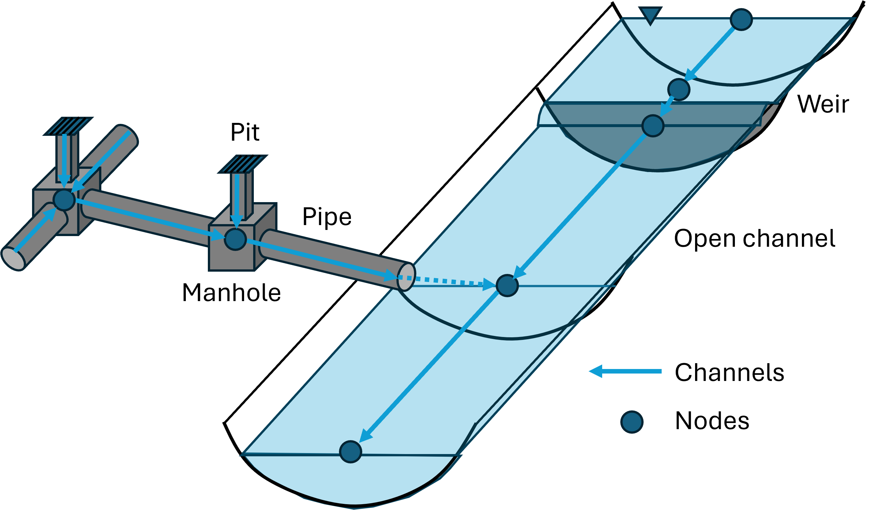
Both channels and nodes are created using one or more GIS layers (primarily using the generic 1d_nwk layer, but other speciality layers can be used such as 1d_pit for inlets and 1d_mh for manholes). There are no constraints on the complexity of the network with any number of channels being able to connect to a single node. Each channel is connected to two nodes; one at the channel’s upstream end the other at its downstream end. The digitising of nodes is optional. In most models these are automatically created.
Multiple GIS layers can be specified. Subsequent layers are used to modify the network at individual objects. For example, if a culvert is to be upgraded in size, rather than making a copy of the whole 1d_nwk layer, select the culvert channel, save the culvert as another 1d_nwk layer and modify the channel to represent the upgraded culvert. Use Read GIS Network twice to first read in the base 1d_nwk layer, then the 1d_nwk layer with the single channel representing the upgraded culvert. Provided the channel has the same ID and is snapped to the same nodes, it will override the original culvert channel. Using this approach minimises data duplication and, if executed logically and in a well-documented manner, is a very effective approach to modelling.
The attributes required in the 1d_nwk layer depend on the channel or node type. Table 5.1 and Table 5.30 present the available channel and node types respectively. Section 5.3 presents links to all tables of attributes within the 1d_nwk layer for all channel and node types.
If using more than 100,000 channels see Maximum 1D Channels.
5.2 Solution Scheme
The scheme for modelling 1D open channels is based on a numerical solution of the 1D unsteady St Venant fluid flow equations (momentum and continuity) including the inertia terms. The 1D solution uses an explicit finite difference, second-order, Runge-Kutta solution technique (Morrison & Smith, 1978) for the 1D SWE of continuity and momentum as given by the equations below. The equations contain the essential terms for modelling periodic long waves in estuaries and rivers, that is: wave propagation; advection of momentum (inertia terms) and bed friction (Manning’s equation).
1D Continuity:
\[ w \frac{\partial h}{\partial t} + \frac{\partial (A u)}{\partial x} = S \tag{5.1}\]
1D Momentum:
\[ \frac{\partial u}{\partial t} + u\frac{\partial u}{\partial x} + g \frac{\partial (z+h)}{\partial x} + g \frac{n^2}{R^\frac{4}{3}}|u|u + \frac{k}{2 \mathrm{\Delta}x}|u|u = S_u \tag{5.2}\]
Where
- \(w\) is the channel width at the water surface
- \(h\) is the water depth in the channel
- \(x\) and \(t\) are channel flow dimension and time respectively
- \(z\) is the channel bed elevation
- \(A\) is the cross-sectional flow area (up to the water surface)
- \(u\) is the cross-sectional flow area averaged water velocity
- \(n\) is the Manning coefficient for bed friction (units time per cube-root (unit length))
- \(R\) is the hydraulic radius
- \(S\) is the lineal water source term (volume per unit time per unit length), usually lateral inflow/outflow
- \(S_u\) is the lineal momentum source term (force per unit volume per unit fluid density)
- \(k\) is an energy loss coefficient, used for local energy losses
- \(\mathrm{\Delta}x\) is the channel length
For 1D structures, velocities are computed based on empirical equations instead of using the 1D momentum equation (see Section 5.7 for more details). Also note that as bed-friction and energy losses are explicitly stated, the additional momemtum source \(S_u\) is typically not used.
5.3 1d_nwk Attributes
The 1d_nwk tables have been provided as individual tables for each type of channel and node. Links to these tables are provided below.
Open Channels (S, G, Blank) 1d_nwk Attributes
Culverts and Pipes (C, I, R) 1d_nwk Attributes
Bridges (B, BB) 1d_nwk Attributes
Arch Bridges (BArch) 1d_nwk Attributes
Weirs (W, W*) 1d_nwk Attributes
Special Channels (M, P, Q, SG, SP) 1d_nwk Attributes
Dam Failure and Piping Channels (DF, PF) 1d_nwk Attributes
1d_nwke (Extended 1d_nwk) Attributes
1d_nwkb (Blockage 1d_nwk) Attributes
The names of 1d_nwk attributes may have changed from previous TUFLOW releases to reflect new features and changes. The name of the attribute is irrelevant as far as TUFLOW is concerned, as TUFLOW only requires that attributes (of any layer) are in the correct order and of the correct type (i.e. Character, Float, Integer, etc.). In all TUFLOW layers, the attributes can be named as the modeller wishes, so older layers that do not have the same attribute names as documented in this manual will still work correctly.
5.4 Channels Overview
1d_nwk channels can represent open channels, hydraulic structures such as bridges, culverts/pipes, weirs, and operational structures (e.g. pumps and gates), and other flow controls such as a user defined flow matrix.
A channel is digitised as a line. To connect channels the ends of the channels must be snapped. Channel flow direction is positive in the direction the line is digitised. This is best visualised in the GIS using a line style that has arrows or other symbolism indicating the line direction.
A channel is defined by a length, a Manning’s n value, a table of hydraulic properties (wetted perimeter, flow area, hydraulic radius) versus elevation and other parameters depending on the type of channel. Table 5.1 below lists the available channel types and Table 5.2 lists the additional options that may be appended to selected channel types.
The hydraulic properties table for channels can be defined at a cross section positioned midway along the channel (for some structures and open channels) or can be derived from cross-sections located at the channel ends (for open channels only). The exceptions are:
- For culverts (C and R types) the attribute information supplied within a 1d_nwk layer (i.e. diameter, width, etc.) is sufficient to define the hydraulic properties (i.e. no cross-section properties table is required).
- For weirs (W), if no cross-section or hydraulic properties table is specified, and a Diameter_or_Width attribute value greater than 0.01 is specified, the weir is defined as being a rectangular section 10 metres high based on the invert and width values.
Tables of cross-section profiles, cross-section hydraulic properties and bridge loss coefficients are accessed using links within 1d_xs and 1d_bg GIS layers. Tables can also be used to define nodal surface areas (refer to Section 5.12.2.1). This allows these data to be entered in a comma delimited format using .csv files that can be managed and edited in spreadsheet software such as Microsoft Excel.
Modellers often keep the different data sets separate as numerous .csv files are often needed. Separate folders underneath the model folder (same level as the gis folder) are often used to store all the .csv files and the GIS layer. For example:
- 1d_xs for XZ cross-section profiles in a model\xs folder
- 1d_bg for bridge loss coefficient tables in a model\bg folder
The Read GIS Table Links command is used for linking tabular data to channels. The method for linking cross-sectional and bridge losses is as follows:
- Lines are linked to channels. The method depends on whether the object has two or more vertices. The logic is:
- For lines with two points (the start and end – no intermediate vertices) the line only needs to cross a channel – it does not have to snap to a vertex on the channel line. If the two-point line crosses more than one channel, the channel that is closest to the mid-point of the line is selected.
- Lines with three or more vertices must have one of the vertices snap to a vertice on the channel line. If both types are specified, the snapped sections are given preference over any two-point line that crosses the channel line.
- Other objects (regions and points) are not used.
The attributes and the method for determining the data to extract from the source file is outlined in Table 5.4 for 1d_xs and Table 5.12 for 1d_bg. Using the Column_1 attribute, several tables can be located in the one source file if desired.
| Options | Flag | Description | Applicable Channel Types |
|---|---|---|---|
Adjust Structure Losses |
A |
Forces the adjust losses approach using the equations and methodology in Section 5.7.7 to adjust the inlet and outlet losses of a culvert or bridge channel according to the approach and departure velocities. This flag overrides Structure Losses if set to FIX. For example, to adjust the losses for a rectangular culvert specify a Type attribute of “RA”. |
Culverts (R, C, I) |
Fix Structure Losses |
F |
Forces the fix losses approach so as not to adjust the inlet and outlet losses of a culvert or bridge channel according to the approach and departure velocities. This flag overrides the Structure Losses setting if set to ADJUST (the default). See Section 5.7.7. For example, to fix the losses for a circular culvert specify a Type attribute of “CF”. |
Culverts (R, C, I) |
Downstream Controlled |
D |
For culverts, limits the flow regimes to the downstream controlled ones (see Table 5.6), unless it is a zero length channel (i.e. channel length less than 0.01m). |
Culverts (R, C, I) |
Weir over the Top |
W |
If a “W” is specified in conjunction with a B, C or R channel (e.g. BW, CW or RW), a weir channel is automatically inserted to represent the flow overtopping the structure. This saves having to digitise the weir separately. To use this option requires adding the 10 optional attributes to the 1d_nwk layer as detailed in Table 5.18. Some of these attributes are used to specify the weir parameters. |
Culverts (R, C) and Bridges (B) |
Energy |
E |
For structures specifies the use of energy level for the flow calculations. The default is to use energy (E), unless the global .ecf command Structure Flow Levels == WATER is used, in which case the default is to use water level (H). See H below. |
All Weirs except for “W” type, Spillways (SP), Gates (SG) and Dam Failure Channels (DF). |
Energy Upstream |
EH |
Introduced in the 2023-03-AC build, uses the energy level at the upstream node and water level at the downstream node of 1D structures for flux calculation. This option can also be applied globally using the .ecf command Structure Flow Levels == ENERGY UPSTREAM. |
All Weirs except for “W” type, Spillways (SP), Gates (SG) and Dam Failure Channels (DF). |
Water Surface |
H |
For structures specifies use of water level for the flow calculations. The default is to use energy level unless Structure Flow Levels == WATER has been specified. For example, if a broad-crested weir is to use water surface levels rather than energy levels, specify WBH (a space can be used so “WB H” may be preferred for clarity). |
All Weirs except for “W” type, Spillways (SP), Gates (SG) and Dam Failure Channels (DF). |
Non-inertial channel |
N |
Open Channel (S), Normal (blank) Gradient (G) and channels can be specified as non-inertial by including an “N” in the Type attribute. A non-inertial channel has the inertia term suppressed from the momentum equation. |
Open Channel (S, G, blank) |
Variable Geometry |
V |
Normal and gradient channel cross-sections can vary over time by using a variable channel definition. Include a “V” in the Type attribute and see Section 5.7.4.6 for more details. Note that prior to the 2013-12 release, a variable weir channel was specified as a WV channel type. As of the 2013-12 release, WV channels are processed as a V-notch weir. Variable weir channels must be specified as type “VW”. |
Open Channel (S, G, blank) and W type Weir |
Operational Control |
O |
“O” flag is required for structures that are to be operated using an operating control definition (see Section 5.8). For example, an operated pump would have a Type attribute of “PO” (or “OP”) |
see Section 5.8 |
Uni-directional (all channels) |
U |
Any channel can be defined as uni-directional by including a “U” in the Type attribute. Water will only flow in the positive direction of the channel (from upstream to downstream). For example a “RU” channel could be used to represent a flap gated rectangular culvert. |
All channel types |
5.5 Open Channels
5.5.1 Inertial Channels
An open channel that includes the inertia term is specified as a series of lines in one or more 1d_nwk GIS layers with an attribute type of ‘S’, S signifying a sloping channel that can handle steep, super-critical flows. S channels are typically all natural channels and artificial channels such as concrete lined open drains. They automatically test for the occurrence of upstream controlled flow and automatically switch between the two regimes, and is the preferred type for all open channels. Other open channel types, Normal (type “blank”) and Gradient (type “G”) are kept for backward compatibility and discussed in Section 5.8.4. Table 5.3 lists the 1d_nwk attributes that are required for open channels.
The hydraulic properties table for open channels is typically provided in the form of cross-sectional data referenced within a 1d_xs GIS layer and using the command Read GIS Table Links but can also specified from external sources (see Section 5.6).
Lines within the 1d_xs GIS layer may be digitised midway along the channel or snapped to the channel ends. The treatment of the cross-sectional data is different depending on the digitisation. It is also possible to automatically create interpolated cross-sections. The attributes of the 1d_xs GIS layer is described in Table 5.4 and further information on cross-sections is provided in Section 5.6.
Refer to TUFLOW Tutorial Module 11 for a model demonstration.
5.5.2 Non-Inertial Channels
To bypass the Courant stability condition, a special channel flag (N) is included, known as non-inertial channel or a friction-controlled channel. This is valid for the S (open channel) and the superseded blank and G gradient channels. To apply this to an S type channel the channel type is SN.
For a non-inertial channel, the inertia terms are ignored (eliminating inertial effects) and the stability control procedure is automatically applied. Although rarely required, the suppression of the inertia terms can be useful for stabilising very short S channels with high velocities.
| No. | Default GIS Attribute Name | Description | Type |
|---|---|---|---|
1 |
ID |
Unique identifier up to 12 characters in length. It may contain any character except for quotes and commas, and cannot be blank. As a general rule, spaces and special characters (e.g. |
Char(12) |
2 |
Type |
As described in Table 5.1. S: Steep Channel G: Gradient Channel Blank: Normal Channel |
Char(4) |
3 |
Ignore |
If a “T”, “t”, “Y” or “y” is specified, the object will be ignored (T for True and Y for Yes). Any other entry, including a blank field, will treat the object as active. |
Char(1) |
4 |
UCS (Use Channel Storage at nodes). |
If left blank or set to Yes (“Y” or “y”) or True (“T” or “t”), the storage based on the width of the channel over half the channel length is assigned to the upstream and downstream nodes connected to the channel. If set to No (“N” or “n”) or False (“F” or “f”), the channel width and length does not contribute to the node’s storage. See Section 5.12.1.1 for further discussion. |
Char(1) |
5 |
Len_or_ANA |
If greater than zero, sets the length of the channel in metres. If the length is less than zero, except for the special values below, the length of the line is used. If using the legacy feature that accesses MIKE 11 cross-section data - see the 2018 TUFLOW Manual for details. |
Float |
6 |
n_nF_Cd |
The Manning’s n or Manning’s n multiplier for the channel. If not using materials or Manning’s values in the cross-section the Manning’s n value is specified using this attribute. If using materials or Manning’s n to define the bed resistance from XZ tables (see Section 5.6.1.1.2 and Section 5.6.1.1.3), n_nF_Cd is a multiplier and is typically set to one (1) as it becomes a multiplication factor of the materials’ Manning’s n values. It may be adjusted as part of the calibration process. |
Float |
7 |
US_Invert |
G, S Channel Type: The upstream bed or invert elevation of the channel in metres. The bed of the channel cross-section is used if -99999 is specified for G and S channels. If a manually created node exists at the upstream end of the channel, and -99999 is specified, the upstream invert is set to the DS_Invert value of the node (or pit), provided this value is greater than -99999 - for example, see Table 5.31. Blank Channel Type: Sets the upstream and downstream inverts. Note that the invert is taken as the maximum of the US_Invert and the DS_Invert attributes. Use -99999 to use the bed of the cross-section as the invert. |
Float |
8 |
DS_Invert |
Sets the downstream invert of the channel using the same rules as described for the US_Invert attribute above. |
Float |
9 |
Form_Loss |
Additional form losses (factor of dynamic head) due to bends, bridge piers, etc. This method is preferred instead of increasing Manning’s n to account for losses. For S channels, this only applies when not in upstream controlled friction mode. |
Float |
10 |
pBlockage |
Not used. |
Float |
11 |
Inlet_Type |
Not used unless using the legacy feature that accesses MIKE 11 cross-section data - see the 2018 TUFLOW Manual for details. |
Char |
12 |
Conn_1D_2D |
If using Flood Modeller .dat files, the cross-section ID. This is used to link to the cross-section details within the cross-section database (specified via the XS Database command). If using the legacy feature that accesses MIKE 11 cross-section data - see the 2018 TUFLOW Manual for details. Otherwise, not used. |
Char |
13 |
Conn_No |
Not used unless using the legacy feature that accesses MIKE 11 cross-section data - see the 2018 TUFLOW Manual for details. |
Integer |
14 |
Width_or_Dia |
Not used. |
Float |
15 |
Height_or_WF |
Not used. |
Float |
16 |
Number_of |
Not used. |
Integer |
17 |
HConF_or_WC |
Not used. |
Float |
18 |
WConF_or_WEx |
Not used. |
Float |
19 |
EntryC_or_WSa |
Not used. |
Float |
20 |
ExitC_or_WSb |
Can be used to apply a form loss coefficient per unit length of channel for an S type channel. For example, a value of 0.0001 v2/g / metre or (0.1 per km) for a 200m channel, the extra form loss would be 0.0001 x 200 or 0.02 v2/2g. This can be used to account for irregularities in the bed form not accounted for by Manning’s n value (eg. submerged rock ledges and obstructions, or large boulders). If using it is recommended that this is calibrated. |
Float |
5.6 Cross-Sections
Cross-section hydraulic properties tables may come from several sources:
- Calculated using a cross-section profile in a .csv or similar formatted file.
- A hydraulic properties table in a .csv or similar formatted file.
- Flood Modeller .dat files (external source). The cross-section ID within the external file is specified in the Conn_1D_2D field in a 1d_nwk layer (see Table 5.3). This is used to link to the cross-section details within an external sources file specified via the XS Database command. Cross-sections are applied using the mid cross-section approach (Section 5.6.5).
- External sources such as MIKE 11 processed data .txt files or Flood Modeller .pro files, see the 2018 TUFLOW Manual for details of this legacy feature.
Cross-section profile and hydraulic properties data are accessed using a 1d_xs GIS layer and the .ecf command, Read GIS Table Links. Type “XZ” is specified if accessing a cross-section profile (distance versus elevation) and a type “CS” or “HW” is used if accessing a hydraulic properties table (elevation versus width). Table 5.4 presents the attributes required for the 1d_xs GIS layer. A number of optional flags are available for both “XZ” and “CS” or “HW” and are explained in more detail in Section 5.6.1 and Section 5.6.2.
The direction of 1d_xs cross sections is important. They must be digitised from left to right looking downstream (i.e. the positive direction of the digitised channel).
The linked source file in the 1d_xs GIS layer (“Source” attribute) can be configured as a single database file by utilising the optional labels for data headers in the “Column_1” to “Column_6” attributes (see Table 5.4). Figure 5.2 shows an example of a .csv file that contains all the cross-section data for the linked 1d_xs GIS layer, with each cross-section identified by column headers within the file. In the 1d_xs attribute table (Figure 5.3), the “Source” attribute specifies the path to the .csv file and the “Column_1” attribute specifies the relevant column header within that file.
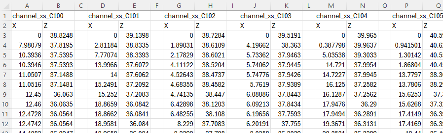
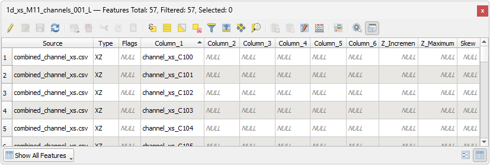
It is possible to let the water level at a cross-section to extend above the highest elevation in the hydraulic properties table. The default is to allow the water level to exceed ten times the depth of the CS or NA table before an instability is triggered. See Depth Limit Factor for further details.
When the water level exceeds the top of a cross-section, the conveyance properties are calculated based on glass walling the cross-section above the top. This is carried out by taking the effective flow area and using the effective flow width to calculate the conveyance properties assuming no side wall friction applies above the cross-section top.
Refer to TUFLOW Tutorial Module 11 for a model demonstration.
| No. | Default GIS Attribute Name | Description | Type |
|---|---|---|---|
1 |
Source |
Filename (and path if needed) of the cross-section file or database (see attributes Column_1 to Column_6) containing the tabular data. Must be a comma or space delimited text file such as a .csv file. |
Char(50) |
2 |
Type |
Two characters defining the type of table link. XZ: Cross-section XZ profile (can include horizontal variations in resistance). The first column is the distance column, and the second the elevation column. Other optional columns are described under the Flags attribute below. CS or HW: Cross-section hydraulic properties table. The first two columns must be elevation and width. Optional flags are described under the Flags attribute below |
Char(2) |
3 |
Flags |
Optional flags are as follows: XZ Tables:
CS or HW Tables:
|
Char(8) |
4 |
Column_1 |
Optional. Identifies a label in the Source file that is the header for the first column of data. Values are read from the first number encountered below the label until a non-number value, blank line or end of the file is encountered. If this field is left blank, the first column of data in the Source file is used. |
Char(20) |
5 |
Column_2 |
Optional. Identifies a label in the Source file that is in the header for the second column of data. If this field is left blank, the next column of data after Column_1 is used. |
Char(20) |
6 |
Column_3 |
Optional. Identifies a label in the Source file that is in the header for the third column of data. If this field is left blank, the second column of data after Column_1 is used. |
Char(20) |
7 |
Column_4 |
Optional. Defines the fourth column of data. |
Char(20) |
8 |
Column_5 |
Optional. Defines the fifth column of data. |
Char(20) |
9 |
Column_6 |
Optional. Defines the sixth column of data. |
Char(20) |
10 |
Z_Increment |
Optional. Sets the height increment in metres to be used for calculating hydraulic properties from a XZ cross-section profile. If less than 0.01, the increment is determined automatically. Only used for XZ cross-section data. |
Float |
11 |
Z_Maximum |
Optional. Sets the maximum elevation in metres to be used for calculating hydraulic properties from a XZ cross-section profile. If less than the lowest point in the cross-section profile, Z_Maximum is taken as the highest elevation in the profile. Only used for XZ cross-section data. |
Float |
12 |
Skew (in degrees) |
Optional. Adjusts the cross-section properties for XZ and CS/HW data according to the skew angle. Useful where the cross-section line is surveyed oblique to the flow direction. The skew angle is zero degrees in the direction of flow and 90 degrees if surveyed at a right angle to the direction of flow. For example, a value of 45 adjusts the horizontal dimensions by dividing by the \(\sqrt{2}\). For irregular shaped structures, applying a skew angle can be used to model blockages as this reduces the effective flow width. For more information see the TUFLOW wiki. |
Float |
5.6.1 Type “XZ” Optional Flags
5.6.1.1 Relative Resistance
Varying the resistance across an XZ (offset-elevation) cross-section is possible by using either a relative resistance factor (R flag), different material ID values (M flag) or different Manning’s n values (N flag). These are discussed further in the sections below.
The relative resistance value applies midway to either side of the X-value (except the first and last X-values where it only applies to midway to the single neighbouring X-value). The reason for this is that material or n values can be correctly sampled from a GIS layer at the survey points. This is slightly different from some other 1D hydraulic modelling software that apply relative resistance values from the previous X-value to the current X-value or from the current to the next.
Sections of a cross-section can be “removed” by entering ‑1 (negative one) for a resistance value. This feature is particularly useful when developing a linked 1D/2D model where the 1D cross-sections are typically trimmed to the top of bank to avoid double counting of floodplain conveyance and storage. For more information on how negative “M”, “N” and “R” differ, please refer to the TUFLOW Wiki 1D Channels and Hydraulic Structures.
5.6.1.1.1 Relative Resistance Factor (R)
The relative resistance factor (R) is a multiplication factor applied to the primary Manning’s n value of the channel. Wherever the R value changes across the cross-section, a new parallel sub-channel is created. The total conveyance for the whole cross-section is determined by carrying out a parallel channel analysis of all the sub-channels. This approach allows the variation in bed resistance across a cross-section to be accounted for, and to force a parallel channel analyses so that conveyance does not decrease with height when the wetted perimeter suddenly increases (e.g. when overbank areas just become wet).
If using effective area (see Section 5.6.4), an R of 1.0 must occur at some point in the profile to indicate the primary sub-channel. If a value of 1.0 is not found an ERROR 1070 occurs, as grossly incorrect channel velocities can occur when using effective area with an inappropriate primary sub-channel. The Manning’s n value of the primary sub-channel is that specified in the 1d_nwk layer for the channel. The primary sub-channel does not have to be the lowest part of the cross-section.
5.6.1.1.2 Material Values (M)
If using material values (M), the Manning’s n value to be applied is taken from a Materials Definition File (see Read Materials File). If the Position “P” flag is not used, the material at the lowest Z value (cross-section bed) is used as the primary material, which then corresponds to a relative resistance factor of 1.0. If no material values are specified, a material value of one (1) is applied over the whole cross-section. If the P flag and values are used, the primary material is determined as that at the lowest Z value in the mainstream channel (see Section 5.6.1.1.3).
When using materials, the n_nF_Cd value in the 1d_nwk layer becomes a multiplier and should be set to one (1.0). If justified, it can be adjusted for calibration or sensitivity testing. For example, if a slightly higher resistance is desired along a channel, rather than setting different material values, change the n_nF_Cd value in the 1d_nwk layer to, say, 1.1 to increase all Manning’s n values across the cross-section by 10%.
A negative material value in the M column of a XZM cross-section table can now be specified to disable (i.e. block out or remove) sections of a cross-section. The negative value must be the negative of a valid Material ID in the Materials Definition File (see Read Materials File and Section 7.2.7). For more information on how negative “M”, “N” and “R” differ, please refer to the TUFLOW Wiki 1D Channels and Hydraulic Structures.
Example
In the following example, the TUFLOW Tutorial Module Model (discussed in Section 2.1.1) will be modified to demonstrate how Manning’s n values may be assigned to cross-sections based on values within the Materials Definition File.
An “M” flag is added to the 1d_xs layer referencing the cross-sectional data of the open channel.
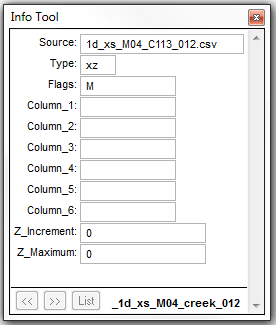
An additional third column is then added to the .csv source file, containing one or more Material ID values from within the Materials Definition File. In the figure below, a Material ID of 10 has been assigned to the whole cross-section.
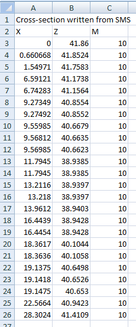
This correlates to a Manning’s n value of 0.08 as shown in the Materials Definition File.
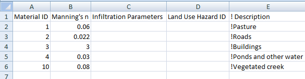
When using the “M” flag to define material values, the “n_nF_Cd” attribute in the 1d_nwk becomes a multiplier (refer to Table 5.3). In most cases, this should be set to 1, as has been carried out for this example.
Once the model has been compiled, a check of the Manning’s n values applied to each cross-section may be viewed in the _ta_tables_check.csv.
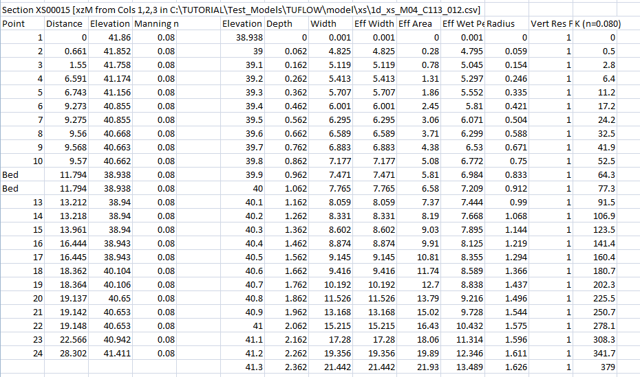
5.6.1.1.3 Manning’s n Values (N)
If using Manning’s n values (N), the n value is specified directly, noting that the n_or_n_Cd value in the 1d_nwk layer becomes a multiplier and should be set to one (1.0). See discussion above for using material values. A value of ‑1 ignores that section of the profile. For information on how negative “M”, “N” and “R” differ, please refer to the TUFLOW Wiki 1D Channels and Hydraulic Structures.
5.6.1.1.4 Position Flag (P)
The position values are used to indicate whether an XZ point is left bank (1), mainstream (2) or right bank (3). The P value is used to indicate where the mainstream sub-channel is located. If the materials (M flag) is used, the primary material is taken as that at the lowest Z value in the mainstream sub-channel. If the P flag and values are not specified, the primary material is that at the lowest Z value across the whole section.
5.6.2 Type “HW” Optional Flags
5.6.2.1 Flow Area (A)
The effective flow area in m\(^2\) (default) or ft\(^2\) (if using Units == US Customary). If omitted, the area is calculated based on the elevations and widths starting at an area of zero at the lowest elevation.
5.6.2.2 Wetted Perimeter (P)
The wetted perimeter in metres (default) or feet (if using Units == US Customary). If omitted, the area is calculated based on the elevations and widths assuming a symmetrical channel.
5.6.2.3 Manning’s n Values (N)
If using Manning’s n values (N), the n value is specified directly, noting that the n_or_n_Cd value in the 1d_nwk layer becomes a multiplier and should be set to one (1.0). See discussion above for using material values. A value less than zero is set to 0.001.
5.6.2.4 Manning’s n Values (F)
If using Manning’s n value mulipliers (F), the n value specified in the “n_or_n_Cd” value in the 1d_nwk layer is multiplied by the specified factor. A value less than zero is set to 0.001.
5.6.3 Parallel Channel Analysis
To calculate total conveyance, a cross-section needs to be sub-divided into panels for which the velocity is uniformly distributed. Conveyance for each panel is calculated using the Manning’s equation:
\[ K = \ \frac{1.0}{n}\ AR^{\frac{2}{3}} \tag{5.3}\]
Where:
- \(K\) = conveyance of panel
- \(n\) = Manning’s n roughness coefficient
- \(A\) = Flow Area (m\(^2\) or ft\(^2\))
- \(R\) = Hydraulic Radius (m or ft) – area / wetted perimeter
Metric (SI) units are TUFLOW’s default. To use imperial units, ensure Units == US Customary has been specified in the .tcf.
The conveyance of a cross-section may reduce with height where there is a sudden increase in the wetted perimeter compared with a relatively small increase in flow area, causing the hydraulic radius to reduce despite the water level increasing. A WARNING is issued if this occurs and it is strongly recommended that the cross-section be reviewed and corrected.
The most common cause for the reduction in conveyance with height occurs when the extent of inundation across the cross-section increases markedly during the transition from in-bank to out-of-bank flow. The reducing conveyance with height problem is usually resolved by forcing a parallel channel analysis by specifying a change in resistance using the R, M or N flag discussed in the sections above.
Conveyance Calculation == ALL PARALLEL is the default setting. This forces a parallel channel analysis based on splitting the cross-section into parallel channels at every distance X-value. This approach generally ensures that conveyance does not reduce with height. Using this approach to calculate the hydraulic properties tends to produce a slightly more efficient cross-section (higher conveyance), similar to the resistance radius formulation used by some schemes. A slightly higher Manning’s n value (by ~10%) may be needed to achieve similar results.
Figure 5.8 illustrates the ALL PARALLEL method of conveyance calculation.
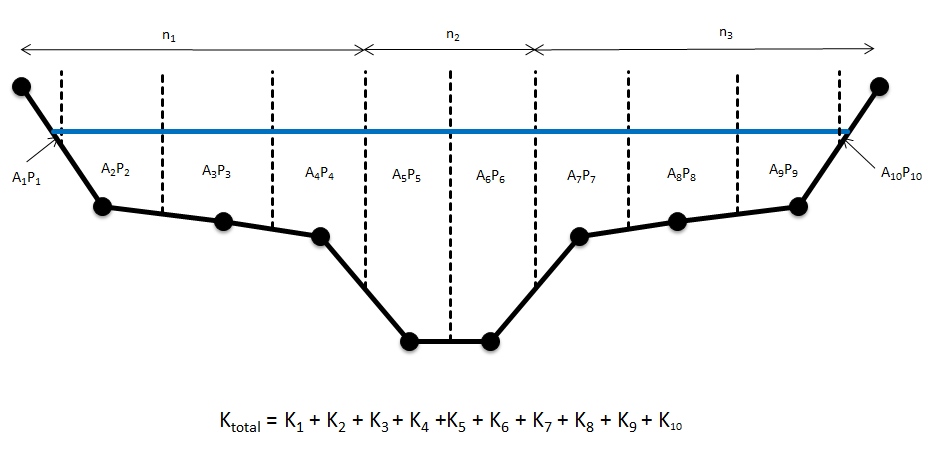
Conveyance Calculation == CHANGE IN RESISTANCE may be used as an alternative to the default ALL PARALLEL approach. In this case, the parallel channel analysis splits the cross-section into separate parallel channels based on wherever there is a change in resistance (due to different relative resistance (R flag), material type (M flag) or Manning’s n values (N flag)). This is illustrated in Figure 5.9:
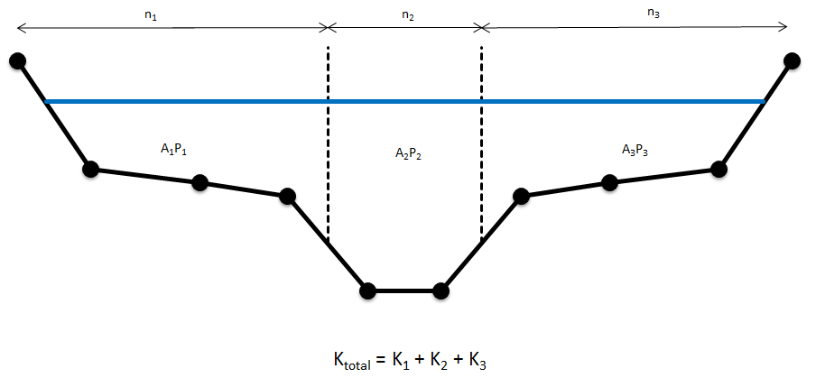
It should be noted that differences in results are expected between the two methods of conveyance calculation. The total number of panels for each calculation method will be different as demonstrated, thereby influencing the total conveyance.
The ALL PARALLEL approach has been chosen as the current default conveyance calculation method for ESTRY. This is not to imply that this method produces the more accurate result, rather it has been chosen as it generally does not cause conveyance reducing with height warnings.
5.6.4 Effective Area versus Total Area
For XZ (offset elevation) Cross-Sections, the flow area is calculated as an effective area (E flag) or a total area (T flag). Use of the flag will override the global setting set by Flow Area where the default approach is to use the effective area.
If there is no variation in relative resistance across the cross-section there is no difference between effective and total areas. This is dependent on the relative resistance being 1.0 across the whole section. ERROR 1070 is produced if the relative resistance is not 1.0 somewhere along the cross-section when using effective area.
For an open channel, the total conveyance of a cross-section is not affected by whether effective or total area is used. In the case of effective area the wetted perimeter is adjusted to compensate for the change in flow area so as to produce the same conveyance as would occur for total area. For special channels that use cross-sections such as bridges, weirs and irregular culverts, the flow area used is the effective or total area as specified. This can be useful if the effects of blockage or congestion within the section needs to be modelled.
The primary differences between using effective and total area are:
- The channel velocity calculated is the depth and width average of the primary (normally mainstream) parallel sub-channel if using effective area, and the averaged depth and width of the whole cross-section if using total area.
- Where the effective and total areas are significantly different, the channel velocities used in the 1D momentum equation will be significantly different. If the channel velocity is sufficiently high and different depending on whether effective or total area is used, the inertia terms in the 1D momentum equation may affect the results. Note the frictional (bed resistance) term in the momentum equation is NOT affected as the hydraulic properties for the cross-section are adjusted so that the total conveyance is the same irrespective of whether effective or total area is used.
- Effective area gives a more reliable calculation of the mainstream velocity, and a more accurate estimate of approach and exit velocities of structures, and more appropriate velocities for advection-dispersion and sediment transport calculations. Where velocities are not high or significantly changed when using effective or total area, the water level and flow results are usually identical or very similar.
5.6.5 Mid Cross-Sections
Cross-sections may be specified using lines digitised within a 1d_xs layer partway along the channel. The upstream and downstream invert levels of the channel are both assigned the invert level of the cross-section if a value of -99999 has been specified within the 1d_nwk channel (refer to Table 5.3). If either of these attributes is greater than ‑99999, the invert of the channel is set to the GIS attribute value rather than that of the cross-section bed elevation.
The mid cross-section approach is the only approach available for structures such as bridges, weirs and irregular shaped culverts. It can also be used for open channels, however the digitisation of cross-section lines within a 1d_xs layer that have been snapped to the channel ends (as described in Section 5.6.6 below) has added advantages and is recommended.
If using a mid cross-section 1d_xs line with more than two vertices, a intermediate vertex must be snapped to the 1d_nwk channel.
5.6.6 End Cross-Sections
Cross-sections for open channels (S channels and the superseded G channels) can be specified using lines digitised within a 1d_xs layer at the channel ends, rather than a single cross-section midway along the channel as described above. This approach has the following benefits:
- The upstream and downstream inverts can be based on the beds of the cross-sections, thereby saving some effort to enter this information within the 1d_nwk file. To do this, set the US_Invert and DS_Invert attributes in the 1d_nwk layer to ‑99999. If either of these attributes is greater than ‑99999, the invert is set to the attribute value rather than that of the cross-section bed.
- Cross-section surveys from some other 1D models often have the cross-sections at the channel ends. This makes it easier to use these external data sources.
There are a few rules on how end cross-sections are interpreted and applied, as follows:
- The 1d_xs cross-section lines must have a vertex snapped to the channel end.
- If a 1d_xs cross-section line occurs elsewhere along an open channel with end cross-sections, the midway cross-section prevails. This is particularly useful where two channels’ ends are snapped to an end cross-section, but the end cross-section is to be applied to only one of the channels (e.g. one channel is a river channel using end cross-sections, and the other is an overbank channel). For the overbank channel, specify a cross-section line somewhere along the channel, and preference will be given to this cross-section rather than the end cross-section. Alternatively, an X connector can be used if end cross-sections are required for both channels. See Section 5.8.3.
- End cross-sections cannot be used to override previously defined cross-section properties for a G or S channel. You can override the end cross-sections using a midway cross-section.
- For channels other than S and G channels, end cross-sections are ignored.
5.6.7 Interpolated Cross-Section Protocols
Cross-sections may be interpolated for channels (excluding C and R culvert channels) that have not been assigned a cross-section. A series of channels may now be digitised between two cross-sections, and the cross-section properties at each channel are linearly interpolated between the two cross-sections. The protocols applied when interpolating cross-sections and setting Manning’s n values are:
- If a channel has a cross-section at each end, the processed data of these cross-sections is averaged.
- If a channel has a cross-section midway, this cross-section takes priority over any end cross-sections.
- If a channel only has one end cross-section, TUFLOW traverses upstream/downstream to find the next available cross-section, and uses this to interpolate the cross-section properties for that channel. The next available cross-section can be a midway or end cross-section.
- If a channel has no cross-sections attached to it, TUFLOW traverses upstream and downstream to find the nearest cross-sections and interpolates the channel properties based on these cross-sections.
- When traversing upstream/downstream to find a cross-section:
- If a junction (three or more channels snapped together) is reached (excluding pits and connectors), an ERROR is issued as it is not possible to determine which branch to follow. Note, channels connected to a junction using a connector (Type “X”) are not used for traversing. Use connectors to connect side channels to the main branch to avoid interpolating sections from side channels
- The digitised direction of the channel is important and controls the direction used to traverse upstream and downstream. Ensure the channels are digitised in a consistent direction (usually from upstream to downstream).
- If a channel has an end cross-section only at one end, and no cross-section is found when traversing, this end cross-section is used at both ends for that channel only.
- The inverts are also interpolated using the cross-section beds (unless the inverts have been manually entered into the 1d_nwk attributes). Specify -99999 for the 1d_nwk channel inverts to be interpolated from the cross-sections.
- Cross-sections that are interpolated can be of any format, including CS or HW 1d_xs formats (see Table 5.4).
- The Manning’s n value assigned to the channel’s cross-section is as follows:
- If the cross-sections used for interpolation have no Manning’s n values (i.e. for XZ cross-sections, M or N was not specified, or for CS/HW cross-sections, N was not specified), the 1d_nwk Manning’s n attribute of the channel is used.
- If the cross-sections used for interpolation have Manning’s n values, the value is interpolated from the cross-section n values (at the bed) and multiplied by the 1d_nwk Manning’s n attribute of the channel. In this case the 1d_nwk n_or_n_F attribute is a multiplier that can be used to calibrate the model.
- If one of the two cross-sections used for interpolation has a Manning’s n value, and the other does not, the n value used is interpolated using the channel’s 1d_nwk Manning’s n value and the cross-section’s n value. Ideally, the model should be set up using the same approach everywhere so that this situation does not arise as it may cause undesirable results. A WARNING is issued if this occurs.
The interpolation of cross-sections is the default. Interpolate Cross-Sections can also be used to switch this feature ON or OFF.
5.7 Structures
Hydraulic structures in the 1D domain are modelled by replacing the momentum equation with standard equations describing the flow through the structure. The structures available are described in the following sections. A discussion on the choice of a 1D or 2D representation of the structure is presented in Section 7.2.10.1.
A channel is flagged as a hydraulic structure using the Type attribute as described in Table 5.1. Except for culverts, a structure has zero length, i.e. there is no bed resistance. If a non-zero length is applied to a “zero length” structure, this is only used in the calculation of the storage (nodal area).
5.7.1 Culverts and Pipes
Culvert or pipe channels can be either rectangular, circular (pipe) or irregular in shape. A range of different flow regimes is simulated with flow in either direction. Adverse slopes are accounted for and flow may be subcritical or supercritical. Figure 5.10, Figure 5.11 and Table 5.6 present the different flow regimes which can be modelled. The regimes that occur during a simulation are output to the .eof file next to the velocity and flow output values, and to the _TSF GIS layer (see Section 14.5 and Section 15.2.4), and can be displayed on time-series plots in the TUFLOW Viewer.
For all culvert types the length, upstream and downstream inverts, Manning’s n, bend loss, entrance and exit losses, and number of barrels are entered using the 1d_nwk attributes (see Table 5.5). For type “C” circular or type “R” rectangular culverts, the dimensions are also specified within the 1d_nwk attributes. For an “I” irregular shaped culvert, the cross-sectional shape is specified using a 1d_xs GIS layer and the Read GIS Table Links command. The line must be digitised across the 1d_nwk channel line using the mid cross-section approach (refer to Section 5.6.5 and Table 5.4). This is the only supported approach for structures such as irregular shaped culverts, bridges, and weirs.
The four culvert coefficients are as follows:
- The height contraction coefficient for box culverts. Usually 0.6 for square edged entrances to 0.8 for rounded edges. This factor is not used for circular culverts.
- The width contraction coefficient for box culverts. Typically values from 0.9 for sharp edges to 1.0 for rounded edges. This factor is normally set to 1.0 for circular culverts.
- The entry loss coefficient. The standard value for this coefficient is 0.5. Variations to this value may be applied based on manufacturer specifications.
- The exit loss coefficient, normally recommended as 1.0.
The calculations of culvert flow and losses are carried out using techniques from “Hydraulic Charts for the Selection of Highway Culverts” and “Capacity Charts for the Hydraulic Design of Highway Culverts”, together with additional information provided in Henderson (1966). The calculations have been compared and shown to be consistent with manufacturer’s data provided by both “Rocla” and “Armco”.
By default, the entrance and exit losses above are adjusted every timestep according to the approach and departure velocities based on the equations in Section 5.7.7.
For benchmarking of culvert flow to the literature, see TUFLOW Validation and Testing Huxley (2004).
| No. | Default GIS Attribute Name | Description | Type |
|---|---|---|---|
1 |
ID |
Unique identifier up to 12 characters in length. It may contain any character except for quotes and commas, and cannot be blank. As a general rule, spaces and special characters (e.g. When automatically creating nodes (default) |
Char(12) |
2 |
Type |
The culvert type:
Optional type flags may also be used to implement additional flow controls such as unidirectional flow (U) or operated flow conditions (O). Culvert type details are outlined in Table 5.1 and optional flags in Table 5.2 . |
Char(4) |
3 |
Ignore |
If a T, t, Y or y is specified, the object will be ignored (T for True and Y for Yes). Any other entry, including a blank field, will treat the object as active. |
Char(1) |
4 |
UCS (Use Channel Storage at nodes) |
If left blank or set to Yes (“Y” or “y”) or True (“T” or “t”), the storage based on the width of the channel over half the channel length is assigned to both of the two nodes connected to the channel. If set to No (“N” or “n”) or False (“F” or “f”), the channel width does not contribute to the node’s storage. See Section 5.12 for further discussion. |
Char(1) |
5 |
Len_or_ANA |
The length of the culvert in metres. If the length is less than zero, except for the special values below, the length of the line is used. |
Float |
6 |
n_nF_Cd |
The Manning’s n value of the culvert. If using materials to define the bed resistance from XZ tables (only for Irregular culvert, see Section 5.6.1.1.2), n_nF_Cd should be set to one (1) as it becomes a multiplication factor of the materials’ Manning’s n values. It may be adjusted as part of the calibration process. |
Float |
7 |
US_Invert |
The upstream bed or invert elevation of the culvert in metres. If a culvert invert has a value of -99999 (after any application of node/pit DS_Invert values), the invert is interpolated by searching upstream and downstream for the nearest specified inverts, and the invert is linearly interpolated. Interpolate Culvert Inverts can also be used to switch this feature ON or OFF. |
Float |
8 |
DS_Invert |
Sets the downstream invert of the culvert using the same rules as for described for the US_Invert attribute above. |
Float |
9 |
Form_Loss |
Specifies an additional dynamic head loss coefficient that is applied when the culvert flow is not critical at the inlet. This applies the energy loss appropriately for a ‘minor’ loss using K*V2/2g. Bend loss coefficients (K) are found in many standard hydraulic references. Note, this loss coefficient is not subject to adjustment when using Structure Losses == ADJUST, and is ideally used to model additional energy losses such as bend losses. |
Float |
10 |
pBlockage |
C, R Channel Type: The percentage blockage (for 10%, enter 10) of the culvert. For R culverts, the culvert width is reduced by the % Blockage. For C culverts, the area is reduced by the % Blockage (i.e. the pipe diameter is factored by the square root of (1 − % Blockage)). Note that when applying a % Blockage to C culverts, the invert level remains unchanged and only the soffit level is reduced by the calculated decrease in diameter. I Channel Type: Not used. To apply a blockage to irregular shaped structures, see the skew angle attribute within Table 5.4. |
Float |
11 |
Inlet_Type |
Not used. |
Char(256) |
12 |
Conn_1D_2D |
Not used. |
Char(4) |
13 |
Conn_No |
Not used. |
Integer |
14 |
Width_or_Dia |
C Channel Type: The pipe diameter in metres. R Channel Type: The box culvert width in metres. I Channel Type: Not used. |
Float |
15 |
Height_or_WF |
R Channel Type: The box culvert height in metres. C, I, Channel Type: Not used. |
Float |
16 |
Number_of |
The number of culvert barrels. If set to zero, one barrel is assumed. |
Integer |
17 |
HConF_or_WC |
I, R Channel Type: The height contraction coefficient for orifice flow at the inlet. Usually 0.6 for square edged entrances to 0.8 for rounded edges. If value exceeds 1.0 or is less than or equal to zero, it is set to 1.0. Not used for unsubmerged inlet flow conditions or outlet controlled flow regimes. C Channel Type: Not used. |
Float |
18 |
WConF_or_WEx |
The width contraction coefficient for inlet-controlled flow. Usually 0.9 for sharp edges to 1.0 for rounded edges for R culverts. Normally set to 1.0 for C culverts. If value exceeds 1.0 or is less than or equal to zero, it is set to 1.0 for C and 0.9 for R culverts. Not used for outlet controlled flow regimes. |
Float |
19 |
EntryC_or_WSa |
The entry loss coefficient for outlet controlled flow (recommended value of 0.5). If value exceeds 1.0, it is set to 1.0. If value is less than zero (0), it is set to zero (0). If Structure Losses == ADJUST (the default) or the A flag is used (see Table 5.30), this value is adjusted according to the approach flow velocity (see Section 5.7.7). If the culvert is discharging out of a manhole, this attribute is ignored and the entry loss used is that determined by the upstream manhole based on the manhole energy losses formulation (see Section 5.10.4). The entry loss value used in the computation can be viewed over time using the _TSL output layer (see Section 15.2.4) or the QGIS TUFLOW Viewer plugin. |
Float |
20 |
ExitC_or_WSb |
The exit loss coefficient for outlet controlled flow (recommended value of 1.0). If value exceeds 1.0, it is set to 1.0. If value is less than zero (0), it is set to zero (0). If Structure Losses == ADJUST (the default) or the A flag is used (see Table 5.30), this value is adjusted according to the departure velocity (see Section 5.7.7). If the culvert is discharging into a manhole, this attribute is ignored and the exit loss used is that determined by the downstream manhole based on the manhole energy losses formulation (see Section 5.10.4). The exit loss value used in the computation can be viewed over time using the _TSL output layer (see Section 15.2.4) or the QGIS TUFLOW Viewer plugin. |
Float |
| Regime | Description |
|---|---|
A |
Unsubmerged entrance and exit. Critical flow at entrance. Upstream controlled with the flow control at the inlet. |
B |
Submerged entrance and unsubmerged exit. Orifice flow at entrance. Upstream controlled with the flow control at the inlet. For circular culverts, not available for Culvert Flow == Method A. |
C |
Unsubmerged entrance and exit. Critical flow at exit. Upstream controlled with the flow control at the culvert outlet. |
D |
Unsubmerged entrance and exit. Sub-critical flow at exit. Downstream controlled. |
E |
Submerged entrance and unsubmerged exit. Full pipe flow. Upstream controlled with the flow control at the culvert outlet. |
F |
Submerged entrance and exit. Full pipe flow. Downstream controlled. |
G |
No flow. Dry or flap-gate active. |
H |
Submerged entrance and unsubmerged exit. Adverse slope. Downstream controlled. |
J |
Unsubmerged entrance and exit. Adverse slope. Downstream controlled. |
K |
Unsubmerged entrance and submerged exit. Critical flow at entrance. Upstream controlled with flow control at the inlet. Hydraulic jump along culvert. Not available for Culvert Flow == Method A. |
L |
Submerged entrance and exit. Orifice flow at entrance. Upstream controlled with the flow control at the inlet. Hydraulic jump along culvert. Not available for Culvert Flow == Method A. |
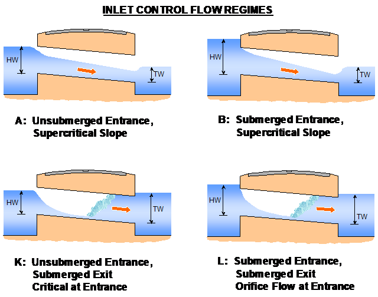
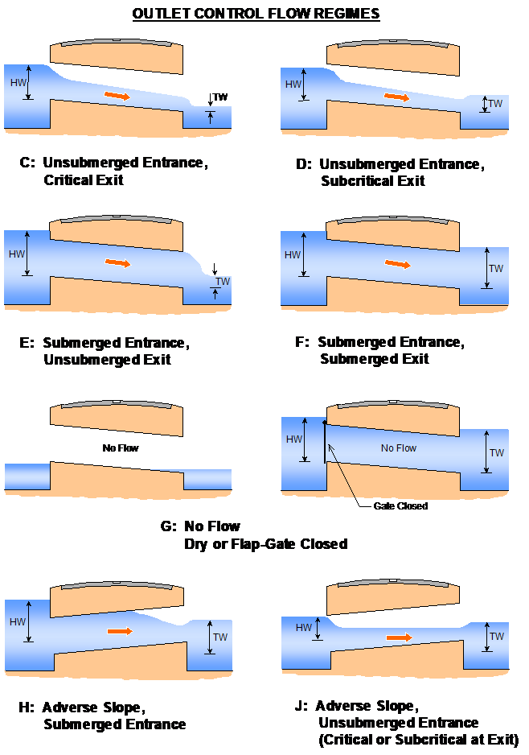
5.7.1.1 Blockage Matrix
This feature allows for blockage of culverts to be varied based on the design flood event magnitude. This applies to C (circular) and R (rectangular) type culverts. For Australian users, this hydraulic structure blockage option is consistent with Project 11 of Australian Rainfall & Runoff (Weeks et al., 2013). The terminology used in the command syntax is Average Recurrence Interval (ARI). It is acknowledged that the recommended flood event magnitude terminology in Australia has shifted from ARI to AEP. An AEP example is provided in Section 5.7.1.1.4.
Two different blockage methods are available:
- The first method reduces the area in the culvert;
- The second applies a modified energy loss value to account for the blockage.
Please refer to Ollett & Syme (2016) for background information on the loss approaches.
Each culvert can be assigned a blockage category, which is defined in the 1d_nwk pBlockage attribute as a character field. A matrix of blockage category and percentage blockage for a range of ARIs is defined. Please see Section 5.7.1.1.4 for guidance on implementation.
5.7.1.1.1 Reduced Area Method
For the reduced area method, the culvert area is reduced to match the specified blockage in the same manner as varying the pBlockage attribute on the 1d_nwk layer (refer to Table 5.5). For example, with a blockage value of 10 the culvert area is reduced by 10%.
5.7.1.1.2 Energy Loss Method
For this method the area of the culvert is not modified, however, an increased entrance energy loss is applied. The modified energy loss is based on the specified culvert entry loss and the blockage ratio as per equation Equation 5.4:
\[ C_{ELC\_ modified} = \left( \frac{1 + \sqrt{C_{ELC}}}{BR} - 1 \right)^{2} \tag{5.4}\]
Where:
- \(C_{ELC\_ modified}\) = Modified culvert entry loss value
- \(C_{ELC}\) = Specified culvert entry loss value
- \(BR\) = Blockage ratio (area of blocked culvert / area unblocked culvert)
When BR is 1 (unblocked), the modified entry loss coefficient becomes the specified entry loss coefficient. The modified coefficients for a range of blockages are provided in Table 5.7.
| \(C_{ELC}\) | ||||
|---|---|---|---|---|
0.3 |
0.5 |
0.7 |
||
Specified \(\%\) Blockage |
BR |
CELC_modified |
||
0 |
1 |
0.3 |
0.5 |
0.7 |
10 |
0.9 |
0.5 |
0.8 |
1.1 |
25 |
0.75 |
1.1 |
1.6 |
2.1 |
50 |
0.5 |
4.4 |
5.8 |
7.1 |
75 |
0.25 |
27 |
34 |
40 |
90 |
0.1 |
210 |
260 |
300 |
95 |
0.05 |
900 |
1100 |
1280 |
100 |
0 |
\(\infty\) |
\(\infty\) |
\(\infty\) |
Whilst loss values of greater than 1.0 may appear counter-intuitive, it is appropriate in this situation. In conduit hydraulics there are two types of loss coefficients that are used to represent constrictions, one type being applied to the velocity at the constriction itself (these are always <=1), and the other type which are applied to the full-barrel velocity downstream of the blockage where the loss coefficient may approach infinity. The second type is convenient as the velocity downstream of the blockage is readily available and requires no manipulation of culvert geometry, and follows in principle the same application of valve coefficients. The equation above simply gives the conversion between these two types of loss coefficients.
The minimum blockage ratio is set to 0.001 or 0.1%. This is required to avoid a divide by zero error in the calculations. This loss method only applies when the culvert is operating under outlet control. For an inlet control flow regime no energy loss is applied, the reduced area method is used instead.
5.7.1.1.3 Blockage Matrix Commands
The commands available for the Blockage Matrix method are listed in Table 5.8.
| Command | Description |
|---|---|
Turns on or off the blockage matrix functionality outlined in this section. The default is for this feature to be off. |
|
Specifies a blockage file containing the blockage values for the various blockage categories and ARI values. |
|
Specifies whether to use RAM (Reduced Area Method) or ELM (Energy Loss Method). No default approach is applied. This command must be specified if using the blockage matrix functionality. |
|
Specifies the AEP for the current simulation. This would typically be defined in an event file (.tef). |
|
Specifies the ARI for the current simulation. This would typically be defined in an event file (.tef). |
|
Sets the blockage category for culverts that do not have a blockage type specified (including those that have a numeric pBlockage defined) |
|
Specifies whether the modified energy loss is lumped and applied at the culvert mid-section, or split and applied at both the culvert entrance and mid-section when using ELM (Energy Loss Method). |
|
Sets the blockage for all culverts with the specified blockage category. This option is useful for running simulations under an “all clear” case. |
|
If PMF has been specified in the AEP column of the blockage matrix, this command sets an AEP to be used for the PMF. This allows for interpolation of blockages for AEP values up to the PMF. |
|
If PMF has been specified in the ARI column of the blockage matrix, this command sets an ARI to be used for the PMF. This allows for interpolation of blockages for ARI values up to the PMF. |
5.7.1.1.4 Implementation
To make use of this feature the 1d_nwkb GIS layer may be used. This layer is identical to the 1d_nwk layer but the pBlockage attribute of the layer is a character field instead of a float (numeric) type. See Table 5.9. This has not been made the default field type in the 1d_nwk empty (template) files that TUFLOW produces, for two main reasons:
- A character field is bigger and less efficient to read, this could slow down simulation start-up for models not using the blockage categories; and
- A numeric field (in almost all GIS packages) defaults to 0.0, i.e. no blockage. This is not the case for a character field.
As an alternative to the 1d_nwkb GIS layer, the pBlockage attribute of the 1d_nwk GIS layer can be changed from a float (numeric) type to a character field, with maximum width of 50. Instructions on how to change the GIS layer attribute type in QGIS, ArcMap and MapInfo are provided in the TUFLOW Wiki as per the links below:
| No. | Default GIS Attribute Name | Description | Type |
|---|---|---|---|
1 |
ID |
Same as for Table 5.5. |
Char(12) |
2 |
Type |
Same as for Table 5.5. |
Char(4) |
3 |
Ignore |
Same as for Table 5.5. |
Char(1) |
4 |
UCS (Use Channel Storage at nodes) |
Same as for Table 5.5. |
Char(1) |
5 |
Len_or_ANA |
Same as for Table 5.5. |
Float |
6 |
n_nF_Cd |
Same as for Table 5.5. |
Float |
7 |
US_Invert |
Same as for Table 5.5. |
Float |
8 |
DS_Invert |
Same as for Table 5.5. |
Float |
9 |
Form_Loss |
Same as for Table 5.5. |
Float |
10 |
pBlockage |
C, R Channel Type: Either a numberic value (See Table 5.5) or the blockage category name as a character string (e.g. “A”). If left blank, the Blockage Default would apply. In the example below, the pBlockage attribute has been set to a category named “B”. 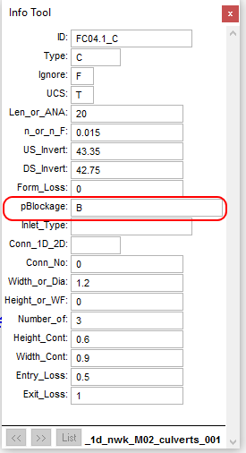 I Channel Type: Not used. To apply a blockage to irregular shaped structures, see the skew angle attribute within Table 5.4. |
Char(50) |
11 |
Inlet_Type |
Not used. |
Char(256) |
12 |
Conn_1D_2D |
Not used. |
Char(4) |
13 |
Conn_No |
Not used. |
Integer |
14 |
Width_or_Dia |
Same as for Table 5.5. |
Float |
15 |
Height_or_WF |
Same as for Table 5.5. |
Float |
16 |
Number_of |
Same as for Table 5.5. |
Integer |
17 |
HConF_or_WC |
Same as for Table 5.5. |
Float |
18 |
WConF_or_WEx |
Same as for Table 5.5. |
Float |
19 |
EntryC_or_WSa |
Same as for Table 5.5. |
Float |
20 |
ExitC_or_WSb |
Same as for Table 5.5. |
Float |
Each blockage category must be defined in the Blockage Matrix File. The first column should contain the Average Recurrence Interval (ARI) for a range of events, any additional columns contain percentage blockages for each of the ARIs. An example blockage matrix file is provided in Table 5.10 containing 5 different blockage categories (A, B, C, D, E). For blockage category A the culvert is unblocked for all ARIs, for category E the culvert is fully blocked for all ARIs. For the categories B, C, and D the blockage varies by ARI.
If the specified ARI sits between the defined ARI values in the blockage matrix file a linear interpolation is used. For example, in the table below for a 50-year ARI, blockage category “C” will have a blockage of 13.75%.
| ARI | A | B | C | D | E |
|---|---|---|---|---|---|
1 |
0 |
10 |
10 |
10 |
100 |
20 |
0 |
10 |
10 |
20 |
100 |
100 |
0 |
10 |
20 |
50 |
100 |
2000 |
0 |
20 |
50 |
70 |
100 |
10000 |
0 |
50 |
70 |
100 |
100 |
The ARI values for the blockage matrix file should be in ascending order. “PMF” can be defined in the ARI column, if this is done, an ARI must be assigned to the PMF using the command Blockage PMF ARI.
Example TUFLOW commands
.tcf file commands
Blockage Matrix == ON
Blockage Matrix File == Matrix_Blockages.csv
Blockage Method == RAM
Blockage Default == C.tef file commands
Define Event == Q010
Blockage ARI == 10
BC Event Source == __AEP__ | 10P
End Define
Define Event == Q100
Blockage ARI == 100
BC Event Source == __AEP__ | 01P
End Define
Define Event == QPMF
Blockage ARI == 100000
BC Event Source == __AEP__ | PMF
End DefineA working example of a blockage matrix model is provided in the 1D Structures Example Model Dataset on the TUFLOW Wiki.
5.7.1.2 Limitations
For the energy loss method, the loss value only applies to the culverts when flowing in outlet control flow regimes. When the flow conditions are inlet controlled TUFLOW reverts to using the reduced area method. This is required, as there is no guidance how to adjust the contraction coefficients or otherwise as used by the inlet controlled culvert equations.
5.7.2 Bridges
5.7.2.1 Bridges Overview
Bridge channels do not require data for length, Manning’s n, divergence or bed slope (they are effectively zero-length channels, although the length is used for automatically determining nodal storages – see Section 5.12.1.1). The bridge opening cross-section is described in the same manner to a normal channel.
Two types of bridge channels can be specified:
- “B” bridges require the user to specify an energy loss versus elevation table, usually derived from loss coefficients in the literature such as “Hydraulics of Bridge Waterways” (Bradley, 1978) or “Guide to Bridge Technology Part 8, Hydraulic Design of Waterway Structures” (Austroads, 2018). The energy loss table can be generated automatically via the 1d_nwk Form_Loss attribute if the energy loss coefficient is constant up to the underside of the bridge deck.
- “BB” bridges automatically calculate the form (energy) losses associated with the approach and departure flows as the water constricts and expands. It also automatically applies bridge deck losses associated with pressure flow. The only user specified loss coefficients required for BB bridges are the pier losses and the deck losses once fully submerged. If the pier loss coefficient is constant through the vertical the coefficient can simply be specified via the 1d_nwk Form_Loss attribute as described further below.
For B bridges, two bridge flow approaches are offered using Bridge Flow. Method B is an enhancement on Method A by providing better stability at shallow depths or when wetting and drying. There are also some subtle differences between the methods in how the loss coefficients are applied at the bridge deck. This is discussed further below. Method B is the approach recommended with Method A provided for legacy models. For Bridge Flow == Method A, the underside of the bridge deck (the obvert or soffit) is taken as the elevation when the flow area stops increasing, or the highest elevation in the bridge’s cross-section data, whichever occurs first. For Bridge Flow == Method B, the highest (last) elevation in the cross-section table is always assumed to be the underside of the bridge deck.
5.7.2.2 Bridge Cross-Section and Loss Tables
The cross-sectional shape of the bridge is specified in the same manner as for open channels using a 1d_xs GIS layer (refer to Section 5.6 and Table 5.4) and the command Read GIS Table Links. The line is digitised midway across the 1d_nwk channel line (do not specify as an end cross-section, i.e. a cross-section line snapped to an end of the bridge channel). As per the open channel, the cross-section data can be in offset-elevation (XZ) or height-width (HW) format.
Bridge structures are modelled using a height varying form or energy loss coefficient. A table (referred to as a Bridge Geometry “BG” or Loss Coefficient “LC” Table) of backwater or form loss coefficient versus height is required. The interpretation of loss coefficients provided by the user differs depending on whether the bridge channel is of a B or BB type as discussed in the following sections.
BG Tables can be entered using .csv files via a 1d_bg GIS layer (see Table 5.12) using the command Read GIS Table Links. A line is digitised crossing the 1d_nwk channel in the same manner as for the 1d_xs GIS layer used to define the cross-sectional shape of the bridge. The line does not have to be identical to the cross-section line.
Where the loss coefficient is constant through to the bridge deck (e.g. no losses such as a clear spanning bridge, or pier losses only – see BB bridges), the BG table can automatically be created by specifying a positive non-zero value for the Form_Loss attribute in the 1d_nwk layer (see Table 5.11). How the Form_Loss attribute is interpreted differs between B and BB bridge channels as discussed in the following sections.
Any wetted perimeter or Manning’s n inputs in the hydraulic properties table are ignored. If the flow is expected to overtop the bridge, a parallel weir channel should be included to represent the flow over the bridge deck, or a BW or BBW channel can be specified (see Section 5.7.4.5).
5.7.2.3 B Bridge Losses Approach
The coefficients for B bridges are usually obtained from publications such as “Hydraulics of Bridge Waterways” (Bradley, 1978) or “Guide to Bridge Technology Part 8, Hydraulic Design of Waterway Structures” (Austroads, 2018), through the following procedure.
- The bridge opening ratio (stream constriction ratio), defined in Equations 1 and 2 of “Hydraulics of Bridge Waterways” (Bradley, 1978), is estimated for various water levels from the local geometry. Alternatively, the bridge opening ratio is estimated with the help of a trial modelling run in which the stream crossed by the bridge is represented by a number of parallel channels, providing a more quantitative basis for estimating the proportion of flow obstructed by the bridge abutments.
- For each level this enables the value of K\(_b\) to be obtained from Figure 6 of “Hydraulics of Bridge Waterways” (Bradley, 1978). Additional factors, for piers (K\(_p\) from Figure 7), eccentricity (K\(_e\) from Figure 8) and for skew (K\(_s\) from Figure 10) make up the primary contributors to K\(_b\).
- The backwater coefficient K\(_b\) input into the LC table is the sum of the relevant coefficients at each elevation. The velocity through the bridge structure used for determining the head loss is based on the flow area calculated using the water level at the downstream node.
Backwater coefficients derived in this manner have usually taken into account the effects of approach and departure velocities (via consideration of the upstream and downstream cross-section areas), in which case the losses for the B channel should be fixed. This is the default setting or can be manually specified using the “F” flag (i.e. a “BF” channel) in the 1d_nwk Type attribute, or use Structure Losses == ADJUST EXCEPT BG TABLES (the default).
For Bridge Flow == Method A, once the downstream water level is within 10% of the flow depth under the bridge, a bridge deck submergence factor is phased in by applying a correction for submerged decking using a minimum value of 1.5625 (if the specified loss coefficient is greater than 1.5625, this value is applied). Bridge Flow == Method B does not use the 10% of the flow depth phasing in nor applies a minimum loss coefficient once the bridge deck is submerged (i.e. it applies the value as per the specified loss coefficients (BG) table). Method B relies on the user to provide appropriate values at all flow heights.
The value of 1.5625 is derived from the following equation Equation 5.5 presented in Waterway Design - A Guide to the Hydraulic Design of Bridges, Culverts and Floodways (Austroads, 1994):
\[ Q = {C_d}{b_N}Z\sqrt{2gdH} \tag{5.5}\]
Where:
- Q = Total discharge (m\(^3\)/s or ft\(^3\)/s)
- C\(_d\) = Coefficient of discharge (0.8 for a surcharged bridge deck)
- b\(_N\) = Net width of waterway (m or ft)
- Z = Vertical distance under bridge to mean river bed (m or ft)
- dH = Upstream energy (or water surface) level minus downstream water surface level (m or ft)
Metric (SI) units are TUFLOW’s default. To use imperial units, ensure Units == US Customary has been specified in the .tcf.
Assuming \({V} = \frac{Q}{b_{N}Z}\) and \(dh = K\frac{V^2}{2g}\), the equation rearranges to give \(K = \frac{1}{C_d^2}\), where a C\(_d\) value of 0.8 equates to a K energy loss value of 1.5625.
5.7.2.4 BB Bridge Losses Approach
BB bridges break down the energy losses into the following categories:
- Bridge pier losses;
- Losses due to flow contraction and expansion;
- Bridge deck losses when the bridge is submerged but not under pressure flow condition; and
- If under pressure flow, the pressure flow equation is applied as described further below.
BB bridges differ from B bridges in that the losses due to flow contraction and expansion, and the occurrence of pressure flow are handled automatically. The only loss coefficient required to be specified is that due to piers (via the Form_Loss attribute value or a LC table). Other loss parameters can be either set based on the default parameters, or can be specified by users. The parameters used by the BB bridge routine are:
- Cd = the Bridge Deck surcharge coefficient (Default = 0.8).
- DLC = the Deck loss coefficient (Default = 0.5) and only applies when no LC table exists and an automatically generated table using the 1d_nwk Form_Loss attribute is created.
- ELC = the unadjusted entry loss coefficient (Default = 0.5).
- XLC = the unadjusted exit loss coefficient (Default = 1.0).
The .ecf command “Bridge Zero Coefficients == <CD>, <DLC>, <ELC>, <XLC>” can be used to change the above default values to the user’s own default values.
The above values can also be changed for an individual bridge using the following 1d_nwk attributes. If the attribute value is zero then the default value or the value specified by Bridge Zero Coefficients is used.
- CD = HConF_or_WC
- DLC = WConF_or_WEx
- ELC = EntryC_or_WSa
- XLC = ExitC_or_WSb
The entrance and exit losses are adjusted every timestep according to the approach and departure velocities based on the equations below from Section 5.7.7. This approach yields similar results to the approach for determining contraction and expansion losses in publications such as “Hydraulics of Bridge Waterways” (Bradley, 1978) or “Guide to Bridge Technology Part 8, Hydraulic Design of Waterway Structures” (Austroads, 2018).
\[ C_{ELC\text{\_}adjusted} = C_{ELC}\left\lbrack 1 - \frac{V_{approach}}{V_{structure}} \right\rbrack \tag{5.6}\]
\[ C_{XLC\text{\_}adjusted} = C_{XLC}\left\lbrack 1 - \frac{V_{departure}}{V_{structure}} \right\rbrack^{2} \tag{5.7}\]
Where:
- V = Velocity (m/s or ft/s if using Units == US Customary)
- C = Energy Loss Coefficient
Pressure flow is handled by transitioning from the equation described in the previous section (to derive the K value of 1.5625 from a coefficient of discharge value of 0.8) to a fully submerged situation where a deck energy loss is applied. The flux is calculated based on both the fully submerged situation and the pressure flow situation, and the lesser of the two fluxes is applied. The 1d_nwk HConF_or_WC attribute can be used to vary Cd (default value is 0.8) and the WConF_or_WEx attribute to set the submerged deck loss coefficient. When pressure flow results the “P” flag will appear in the .eof file and _TSF layer.
Optionally, LC tables can be specified for BB bridges. If a LC table exists, the Deck loss coefficient (DLC) will be ignored, while the other 3 parameters (CD, ELC and XLC) are not affected. The LC tables for BB bridges should only be the losses due to piers and bridge decks. The LC table should not include any losses for contraction, expansion and pressure flow. Note the Form_Loss value is added to the LC table loss values.
If no LC table exists for the BB bridge, and the 1d_nwk Form_Loss attribute is greater than 0.0001, a LC table is automatically generated using Form_Loss for the pier losses and the WConF_or_WEx for the Deck Loss coefficient (DLC).
Other notes are:
- BB bridges are only available if Structure Routines == 2013 (the default).
- The unadjusted entry and exist losses (ELS and XLC) cannot be below 0 or greater than 1, and will be automatically limited to these values.
- _TSF and _TSL layers contain the following flags/values for BB bridges:
- For normal flow (” ” or “D” if drowned out): fixed / adjusted components
- For Pressure (“P”) flow: Deck surcharge Coefficient / 0.0
- Other flags:
- “U” for upstream controlled flow – only occurs when downstream water level is below the bridge bed level.
- “Z” for zero or nearly zero flow.
A working example of a model containing an BB bridge is provided in the 1D Structures Example Model Dataset on the TUFLOW Wiki.
| No. | Default GIS Attribute Name | Description | Type |
|---|---|---|---|
1 |
ID |
Unique identifier up to 12 characters in length. It may contain any character except for quotes and commas, and cannot be blank. As a general rule, spaces and special characters (e.g. |
Char(12) |
2 |
Type |
B or “BB” as specified in Table 5.1. |
Char(4) |
3 |
Ignore |
If a “T”, “t”, “Y” or “y” is specified, the object will be ignored (T for True and Y for Yes). Any other entry, including a blank field, will treat the object as active. |
Char(1) |
4 |
UCS (Use Channel Storage at nodes). |
If left blank or set to Yes (“Y” or “y”) or True (“T” or “t”), the storage based on the width of the channel over half the channel length is assigned to both of the two nodes connected to the channel. If set to No (“N” or “n”) or False (“F” or “f”), the channel width does not contribute to the node’s storage. See Section 5.12 for further discussion. |
Char(1) |
5 |
Len_or_ANA |
Only used in determining nodal storages if the UCS attribute is set to “Y” or “T”. Not used in conveyance calculations. |
Float |
6 |
n_nF_Cd |
Not used. |
Float |
7 |
US_Invert |
Sets the upstream and downstream inverts. Note that the invert is taken as the maximum of the US_Invert and the DS_Invert attributes. Use -99999 to use the bed of the cross-section as the invert. |
Float |
8 |
DS_Invert |
Sets the downstream invert of the channel using the same rules as for described for the US_Invert attribute above. |
Float |
9 |
Form_Loss |
If a LC table exists, for BB bridges adds the value specified to the loss coefficients in the LC table. Not added to LC tables for B bridges. If no LC table exists, and the value is greater than zero, TUFLOW automatically generates a LC table of constant loss coefficient up until the bridge deck (i.e. the top of the cross-section). The interpretation of the LC table generated from the Form_Loss value differs depending on whether a B or a BB bridge as follows: For B bridges (with no LC table):
For BB bridges (with no LC table):
Note: Due to the potential for a divide by zero, a zero loss value cannot be specified with no LC table. A loss value of 0 will return ERROR 1422. A minimum loss value of 0.01 for B bridges or 0.001 for BB bridges is required by TUFLOW to ensure a divide by zero does not occur. Specifying a loss value equal to or less than these minimums (but not 0) will apply these minimum losses, i.e. to apply these minimum losses specify a value of 0.001 for either B or BB bridges. |
Float |
10 |
pBlockage |
Not used. Reserved for future builds to fully or partially block B channels. The 1d_xs Skew attribute can be used to partially block cross-sections of these channels - see Table 5.4. |
Float |
11 |
Inlet_Type |
Leave blank unless using the legacy MIKE 11 1D cross-section data feature. |
Char(256) |
12 |
Conn_1D_2D |
Leave blank unless using the legacy MIKE 11 1D cross-section data feature, or if accessing a Flood Modeller cross-section database (.pro file), enter the label in the .pro file. |
Char(4) |
13 |
Conn_No |
Leave blank unless using the legacy MIKE 11 1D cross-section data feature. |
Integer |
14 |
Width_or_Dia |
Not used. |
Float |
15 |
Height_or_WF |
Not used. |
Float |
16 |
Number_of |
Not used. |
Integer |
17 |
HConF_or_WC |
B bridges: Not used. BB bridges: Bridge deck pressure flow contraction coefficient (C\(_d\)). If set to zero the default of 0.8 or that specified by Bridge Zero Coefficients is used. |
Float |
18 |
WConF_or_WEx |
B bridges: Not used. BB bridges: Bridge deck energy loss coefficient (DLC) for fully submerged flow. If set to zero the default of 0.5 or that specified by Bridge Zero Coefficients is used. |
Float |
19 |
EntryC_or_WSa |
B bridges: Not used. BB bridges: Unadjusted entrance energy loss coefficient (ELC). If set to zero the default of 0.5 or that specified by Bridge Zero Coefficients is used. |
Float |
20 |
ExitC_or_WSb |
B bridges: Not used. BB bridges: Unadjusted exit energy loss coefficient (XLC). If set to zero the default of 1.0 or that specified by Bridge Zero Coefficients is used. |
Float |
| No. | Default GIS Attribute Name | Description | Type |
|---|---|---|---|
1 |
Source |
Filename (and path or relative path if needed) of the file containing the tabular data. Must be a comma or space delimited text file such as a .csv file. |
Char(50) |
2 |
Type |
“BG” or “LC”: Bridge energy loss coefficients (second column) versus elevation (first column) for bridge structures. |
Char(2) |
3 |
Flags |
No optional flags. |
Char(8) |
4 |
Column_1 |
Optional. Identifies a label in the Source file that is the header for the first column of data (ie. elevation). Values are read from the first number encountered below the label until a non-number value, blank line or end of the file is encountered. If this field is left blank, the first column of data in the Source file is used. |
Char(20) |
5 |
Column_2 |
Optional. Identifies a label in the Source file that is in the header for the second column of data (ie. loss coefficient). If this field is left blank, the next column of data after Column_1 is used. |
Char(20) |
6 |
Column_3 |
Not used. |
Char(20) |
7 |
Column_4 |
Not used. |
Char(20) |
8 |
Column_5 |
Not used. |
Char(20) |
9 |
Column_6 |
Not used. |
Char(20) |
10 |
Z_Increment |
Not used. |
Float |
11 |
Z_Maximum |
Not used. |
Float |
12 |
Skew (in degrees) |
Not used. |
Float |
5.7.3 Arch Bridge
The 2023-03 release introduced support for arch bridges as 1D channels. The approach is based on the ‘Afflux at Arch Bridges’ (HR Wallingford, 1988). Arch bridges are defined in the 1d_nwk layer as a “BArch” type. The 1d_nwk attributes specific to an arch bridge are outlined below in Table 5.13.
When an arch bridge becomes fully submerged, the actual flux through a small arch bridge opening can diverge from the flux calculated from the approach above. By default, the arch bridge approach (HR Wallingford, 1988) is still applied when water level exceeds the bridge obvert (or soffit) level. However, a transition to orifice flow condition can be optionally turned on.
The flow rate under the orifice flow condition is calculated using Equation 5.23 with the discharge coefficient (\(C_{d}\)) set via the HConF_or_WC attribute (detailed in Table 5.13). Two options are available to calculate the final discharge coefficient based on the input 1d_nwk HConF_or_WC attribute:
- A positive HConF_or_WC value can be used to set the discharge coefficient. The recommended value is 0.799.
- If a negative value is specified, the absolute of HConF_or_WC is used as a calibration factor, i.e. the discharge coefficient = abs(HConF_or_WC) * 0.799. For example, a HConF_or_WC value of -2 will adjust the discharge coefficient to 1.598.
To enable this transition, three extra attributes must be specified: a discharge coefficient (or calibration factor), lower transition distance and upper transition distance (HConF_or_WC, EntryC_or_WSa and ExitC_or_WSb attributes outlined in Table 5.13). The transition from bridge flow to orifice flow will begin at the lower transition elevation and continue linearly until the upper transition elevation is reached. From this point, the orifice flow condition is used.
A working example of a model containing an arch bridge is provided in the 1D Structures Example Model Dataset on the TUFLOW Wiki.
| No. | Default GIS Attribute Name | Description | Type |
|---|---|---|---|
1 |
ID |
Unique identifier up to 12 characters in length. It may contain any character except for quotes and commas, and cannot be blank. As a general rule, spaces and special characters (e.g. |
Char(12) |
2 |
Type |
BArch as specified in Table 5.1. |
Char(4) |
3 |
Ignore |
If a “T”, “t”, “Y” or “y” is specified, the object will be ignored (T for True and Y for Yes). Any other entry, including a blank field, will treat the object as active. |
Char(1) |
4 |
UCS (Use Channel Storage at nodes). |
If left blank or set to Yes (“Y” or “y”) or True (“T” or “t”), the storage based on the width of the channel over half the channel length is assigned to both of the two nodes connected to the channel. If set to No (“N” or “n”) or False (“F” or “f”), the channel width does not contribute to the node’s storage. See Section 5.12 for further discussion. |
Char(1) |
5 |
Len_or_ANA |
Only used in determining nodal storages if the UCS attribute is set to “Y” or “T”. Not used in conveyance calculations. |
Float |
6 |
n_nF_Cd |
Not used. |
Float |
7 |
US_Invert |
Sets the upstream and downstream inverts. Note that the invert is taken as the maximum of the US_Invert and the DS_Invert attributes. Use -99999 to use the bed of the cross-section as the invert. |
Float |
8 |
DS_Invert |
Sets the downstream invert of the channel using the same rules as for described for the US_Invert attribute above. |
Float |
9 |
Form_Loss |
Not used. |
Float |
10 |
pBlockage |
Not used. |
Float |
11 |
Inlet_Type |
The relative path to the arch properties file (must be a .csv file). See Section 5.8.1. |
Char(256) |
12 |
Conn_1D_2D |
Not used. |
Char(4) |
13 |
Conn_No |
Not used. |
Integer |
14 |
Width_or_Dia |
Optional skew parameter. |
Float |
15 |
Height_or_WF |
Optional calibration coefficient. |
Float |
16 |
Number_of |
Not used. |
Integer |
17 |
HConF_or_WC |
Discharge coefficient (\(C_{d}\)) for orifice flow (see Equation 5.23). To enable the transition to orifice flow, specify a non-zero value for this attribute.
If this field is specified, attributes EntryC_or_WSa and ExitC_or_WSb must also be set. |
Float |
18 |
WConF_or_WEx |
Not used. |
Float |
19 |
EntryC_or_WSa |
Lower transition distance for orifice flow, measured as the depth below obvert (m or ft (if using Units == US Customary)). I.e. the depth below obvert at which the transition from bridge flow to orifice flow commences. This field is ignored if HConF_or_WC is blank. |
Float |
20 |
ExitC_or_WSb |
Upper transition distance for orifice flow, measured as the depth above obvert (m or ft (if using Units == US Customary)). I.e. the depth above obvert at which the transition from bridge flow to orifice flow is complete. The upper transition elevation must be greater than the lower transition elevation. This field is ignored if HConF_or_WC is blank. |
Float |
The .csv for the arch properties should contain the columns outlined in Table 5.14.
| Column | Description |
|---|---|
1 |
Start chainage for arch opening. |
2 |
End chainage for arch opening. |
3 |
Springing level. |
4 |
Start chainage for arch opening. |
5.7.3.1 Arch Bridge Editor
An arch bridge creator and editor tool has been developed for the QGIS TUFLOW Plugin. This tool is available from the TUFLOW Plugin Version 3.7 or later. The documentation and examples for this tool can be found on the TUFLOW Wiki Arch Bridge Editor.
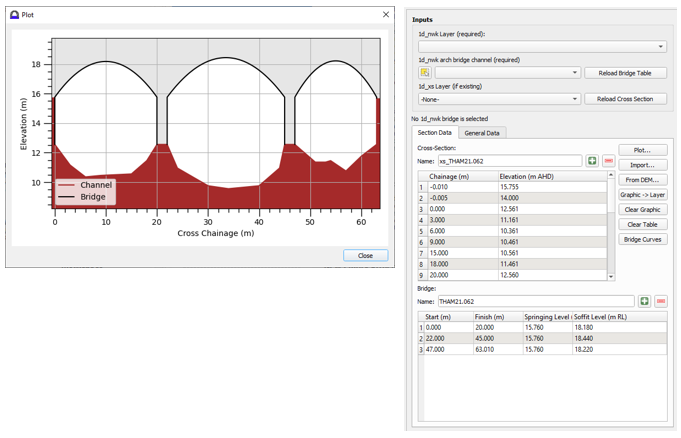
5.7.3.2 Arch Minimum Blockage
The flume experiments in the ‘Afflux at Arch Bridges’ (HR Wallingford, 1988) were done using medium to high bridge blockages (20%~70%), and this approach can generate extremely high velocity when the bridge blockage is close to zero percent. The 2023-03-AF release introduced a minimum blockage of 5% to stabilise the flow. This default value can be changed using the following command:
Arch Bridge Minimum Blockage (%) == <min_pblockage>
5.7.4 Weirs
5.7.4.1 Weirs Overview
A range of weir types are available as listed in Table 5.15. Weir channels do not require data for length, Manning’s n, divergence or bed slope (they are effectively zero-length channels, although the length is used for automatically determining nodal storages – see Section 5.12.1.1).
All weirs have three flow regimes of zero flow (dry), upstream controlled flow (unsubmerged) and downstream controlled flow (submerged).
| Weir Type | Description |
|---|---|
W |
The original ESTRY weir based on the broad-crested weir formula with the Bradley submergence approach (see Weir Approach == METHOD A). The weir shape is defined either as a rectangle using the 1d_nwk Width attribute or as a cross-section. |
WB |
Broad-crested weir. A rectangular section shape is assumed. |
WC |
Crump weir. |
WD |
User-defined weir. |
WO |
Ogee-crested weir. |
WR |
Rectangular weir (sharp crested). |
WT |
Trapezoidal weir or Cippoletti weir. |
WV |
V-notch weir. |
WW |
Similar to the original W weir channel, but has more options allowing the user to customise the weir sub-mergence curve and other parameters. Can be based on either a rectangular shape using the 1d_nwk Width attribute or on a cross-section. |
5.7.4.2 Original Weirs (W)
For a “W” type weir, a standard weir flow formula is used as per the equation below. The weir is assumed to be broad-crested. Weirs with different characteristics should be modelled using one of the other weir types listed in Table 5.15 and discussed in Section 5.7.4.3.
\[ Q_{weir} = \ \frac{2}{3}C_{d}W\sqrt{\frac{2g}{C_{f}}}H^{\frac{3}{2}} \tag{5.8}\]
\[ V_{approach} = \ \frac{2}{3}C_{d}\sqrt{\frac{2gH}{C_{f}}} \tag{5.9}\]
Where:
- \(Q_{weir}\) = Unsubmerged flow over the weir (m\(^3\)/s or ft\(^3\)/s)
- \(V_{approach}\) = Velocity approaching the weir (m/s or ft/s)
- \(C_{d}\) = Broad-crested weir coefficient of 0.57
- \(W\) = Flow width (m or ft)
- \(C_{f}\) = Weir calibration factor (default of 1.0 – refer to 1d_nwk “Height_or_WF” attribute)
- \(H\) = Depth of water approaching the weir relative to the weir invert (m or ft)
Metric (SI) units are TUFLOW’s default. To use imperial units, ensure Units == US Customary has been specified in the .tcf.
TUFLOW weir coefficient (\(C_{d}\)) is non-dimensional. Published coefficients may be based on other non-dimensional or dimensional forms that include \(\sqrt{2g}\). Care should be taken to ensure that the coefficient is converted to comply with the weir equation form above.
The calibration factor C\(_f\), is available for modifying the flow. For a given approach velocity the backwater (head increment) of the weir channel is proportional to the inverse of the factor. It is normally set to 1.0 by default and modified if required for calibration or other adjustment. Note, this factor is not the weir coefficient, rather a calibration factor to adjust the standard broad-crested weir equation. The factor can be used to model other types of weirs through adjustment of the broad-crested weir equation, although use of the other weir types listed in Table 5.15 is recommended.
Huxley (2004) contains benchmarking of unsubmerged and submerged weir flow to the literature.
Note that the velocity output for a weir is the approach velocity, \(V_{approach}\), in the above equations, not the velocity at critical depth (when the flow is unsubmerged).
For submergence of W weir channels, it is recommended that Weir Approach is set to METHOD A or METHOD C. Both METHOD A and METHOD C utilises the Bradley submergence approach (METHOD C is a slight enhancement that only affects WW weir channels). The Bradley Submergence approach (Bradley, 1978), Figure 24, is handled by fitting the equation below to Bradley’s submergence curve reproduced in Figure 5.13 and applying the submergence factor to the weir equation above.
Once the percentage of submergence exceeds 70%, the submergence factor applied is given by the equation below Equation 5.10. The Bradley curve (as digitised) and the resulting curve from the equation below are shown alongside the submergence curves used for other weir types. The submergence factor transitions the flow from weir flow to zero flow as the water level difference (dH) approaches zero.
\[ C_{sf} = \ 1 - \left( 1 - \frac{dH}{H} \right)^{20} \tag{5.10}\]
Weir Approach == METHOD B was introduced to provide additional stability for 1D flow over roadways connected to 2D domains, however, it can cause excessive head drops under drowned flow conditions and is not recommended or to be used with caution. METHOD B only applies to the W weir.
A working example of a model containing an original weir (W) is provided in the 1D Structures Example Model Dataset on the TUFLOW Wiki.
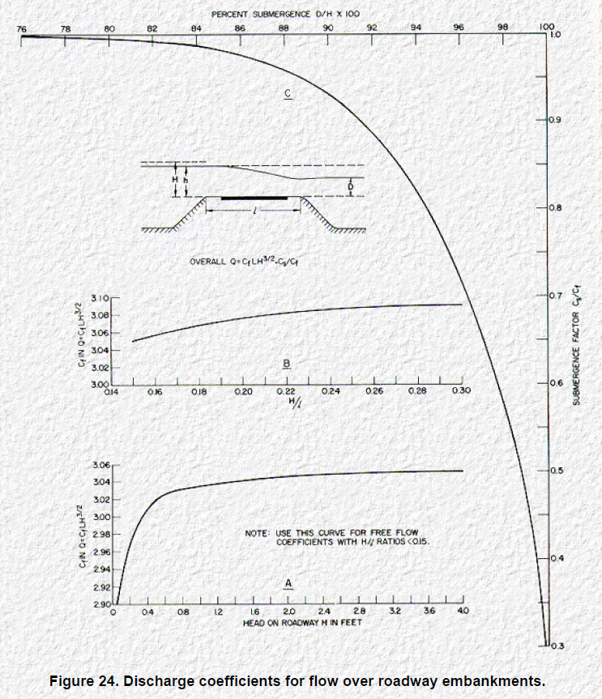
5.7.4.3 Advanced Weirs (WB, WC, WD, WO, WR, WT, WV, WW)
The advanced weirs, as listed in Table 5.15, offer greater variety, flexibility and can be customised by the user. Most of these weirs can also be operated, see Section 5.9.
The weir flow is determined by the following equation.
\[ Q = {\frac{2}{3}}\:C_{f}\:C_{sf}\:C_{d}\:W{\sqrt{2g}}\:H^{Ex} \tag{5.11}\]
Where:
- \(Q\) = Flow over the weir (m\(^3\)/s or ft\(^3\)/s)
- \(C_{d}\) = Weir coefficient
- \(C_{sf}\) = Weir submergence factor
- \(C_{f}\) = Weir calibration factor (default of 1.0 – refer to Table 5.17, “Height_or_WF” attribute)
- \(W\) = Flow width (m or ft)
- \(H\) = Upstream water surface or energy depth relative to the weir invert (m or ft) – see note 5 below
- \(Ex\) = Weir flow equation exponent
Metric (SI) units are TUFLOW’s default. To use imperial units, ensure Units == US Customary has been specified in the .tcf.
Notes
- The default values for \(C_{d}\) are provided in Table 5.16, and documented further below for weirs where \(C_{d}\) is recalculated each timestep.
- The approach taken for calculating the weir submergence factor \(C_{sf}\) each timestep is documented below.
- The weir calibration factor, \(C_{f}\), is by default 1.0 and should only be changed should there be a good justification.
- For weirs where the flow width (\(W\)) varies (e.g. a V-notch WV weir) the formula for that weir takes into account the varying width.
- Whether water surface depth or the energy level is used for \(H\) depends on the Structure Flow Levels setting, which can be changed on a structure by structure case using the E or H flag (see Table 5.2).
- The default values for \(Ex\) are provided in Table 5.16 .
Table 5.16 presents the weir coefficient \(C_{d}\) and weir flow exponent \(Ex\) used for each weir. Some of these values are derived from dimensional forms of the weir equations. Values other than the default values shown in Table 5.16 may be used by altering the attributes of the 1d_nwk layer. Refer to Table 5.17 for further information.
Note that \(C_{d}\) for WO and WV weirs is recalculated every timestep as described in the following sections. It is possible to override this by specifying a non-zero positive value for the “HConF_or_WC” attribute in the 1d_nwk layer (Table 5.17). For WD weirs the user must specify a non-zero positive value.
The value for \(C_{f} \times C_{d}\) and \(C_{sf}\) is written to the TSL_P output (see Section 15.2.4) at each timestep.
The default submergence curves can be found in Figure 5.17 and Figure 5.17.
| Channel Type | Cd (HConF or WC) | Ex (WConF or WEx) | a (EntryC or WSa) | b (ExitC or WSb) | Default Submergence Curve |
|---|---|---|---|---|---|
SP |
0.75 |
1.5 |
6.992 |
0.648 |
Ogee / Nappe (Miller, 1994; USBR, 1987) |
WB |
0.577 |
1.5 |
8.55 |
0.556 |
Broad-crested from Abou Seida & Quarashi, 1976 (Miller, 1994) |
WC |
0.508 |
1.5 |
17.87 |
0.59 |
Crump H1/Hb=1.5 (Bos, 1989) |
WD |
User Defined |
1.5 |
3.0 |
0.5 |
User Defined default settings |
WO |
Recalculated every timestep |
1.5 |
6.992 |
0.648 |
Ogee / Nappe (Miller, 1994; USBR, 1987) |
WR |
0.62 |
1.5 |
2.205 |
0.483 |
Sharp Crest Thin Plate from Hagar, 1987a (Miller, 1994) |
WT |
0.63 |
1.5 |
2.205 |
0.483 |
Sharp Crest Thin Plate from Hagar, 1987a (Miller, 1994) |
WV |
Recalculated every timestep |
2.5 |
2.205 |
0.483 |
Sharp Crest Thin Plate from Hagar, 1987a (Miller, 1994) |
WW |
0.542 |
1.5 |
21.15 |
0.627 |
Bradley 1978 Broad-crested (Bradley, 1978) |
5.7.4.3.1 Ogee Crest Weir (WO)
For WO (Ogee crest) weirs, the charts developed in USBR (1987) are used by fitting the relationship presented and plotted on the USBR curve below (Figure 5.14). The relationship falls within ±0.5% of the curve. Note that the relationship below is for US Customary Units, which is converted to metric if running the simulation in metric units. The USBR (1987) method consists of two steps:
- The ogee crest coefficient \(C_{0}\) (i.e. the discharge coefficient when the actual upstream head \(H_{e}\) = design head \(H_{0}\)) is set based on \(H_{0}\) and the height of the weir above its sill (\(P\)) as per Figure 9-23 of USBR (1987). Note that for setting the value of \(P\) the absolute difference in height between the US_Invert and DS_Invert attributes is used.
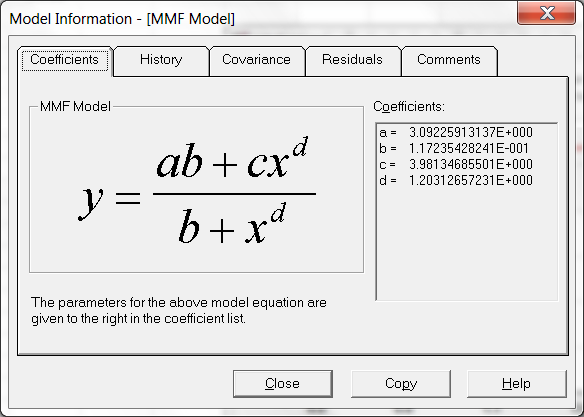
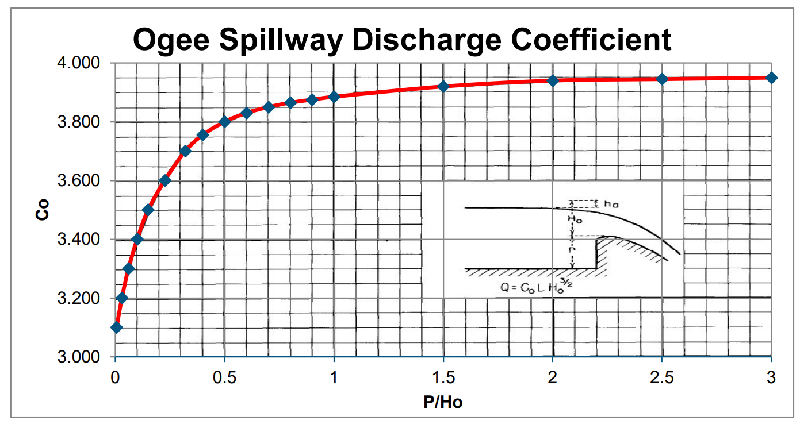
- When the actual head (\(H_{e}\)) is different from the design head (\(H_{0}\)) during the simulation, the discharge coefficient differs from that shown on Figure 5.14. At each simulation timestep, the discharge coefficient is adjusted based on \(H_{e}\)/\(H_{0}\) as per the chart below. The final discharge coefficient applied is \(C_{0}\) × \(C\)/\(C_{0}\) in this chart.
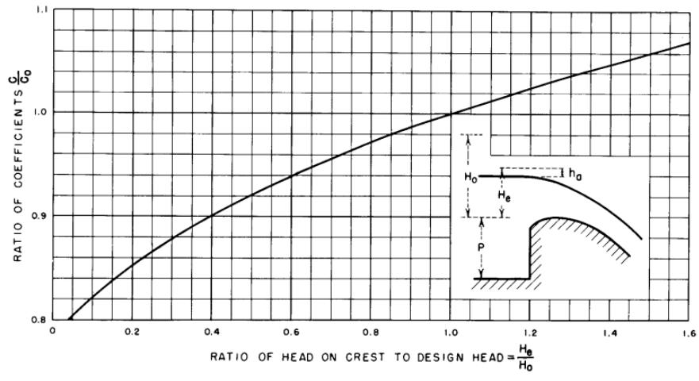
Three options to calculate the final discharge coefficient are offered based on the input value of the 1d_nwk HConF_or_WC attribute:
- If the discharge coefficient has already been obtained by hand calculation, a positive HConF_or_WC value can be used to apply a constant discharge coefficient, i.e. \(C\) = \(C_{0}\) = HConF_or_WC.
- If the design head (\(H_0\)) is known for an ogee crest weir, a negative HConF_or_WC value can be used to specify \(H_0\). The two-step USBR (1987) method stated above will be applied to estimate the final discharge coefficient. Note this option is only available in the 2023-03-AB build or later.
- If HConF_or_WC is zero (0) or left as blank (the default), the actual head \(H_e\) at each simulation timestep will be used to estimate \(C\) from Figure 9-23 of USBR (1987), with no further adjustment based on Figure 9-24 of USBR (1987). This approach should be used when the design head (\(H_0\)) is unknown.
5.7.4.3.2 V-Notch Weir (WV)
For WV (V-notch) weirs, the approach taken is to use the formulae derived by LMNO Engineering as shown below. For metric models the flow is calculated in ft\(^3\)/s and converted to m\(^3\)/s. The top height of a V-notch weir cannot be specified, the angle continues with the increasing water level.
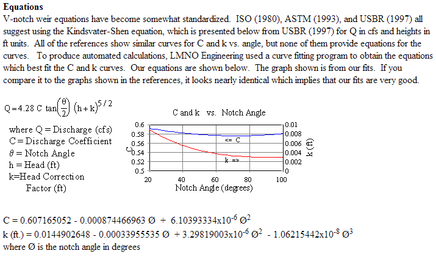
5.7.4.4 Advanced Weir Submergence Curves
Weir submergence factors \(C_{sf}\) were sought from two sources: “Discharge Characteristics” (Miller, 1994) and “Discharge Measurement Structures” (Bos, 1989). The submergence charts for each weir type, relating the weir submergence factor to the ratio between downstream and upstream water level were reproduced from the literature in Excel and are shown in Figure 5.17.
Two methods were utilised to fit equations to these curves. These are:
The Rational Function expressed as:
\[ C_{sf} = \frac{a + b\left( \frac{H_{d}}{H_{u}} \right)}{1 + c\left( \frac{H_{d}}{H_{u}} \right)\ + \ d\left( \frac{H_{d}}{H_{u}} \right)^{2}} \tag{5.12}\]
The Villemonte equation, expressed as:
\[ C_{sf} = \left( 1 - \ \left( \frac{H_{d}}{H_{u}} \right)^{a} \right)^{b} \tag{5.13}\]
Where:
- \(H_{u}\) = Upstream energy or water level above the weir crest (m or ft)
- \(H_{d}\) = Downstream energy or water level above the weir crest (m or ft)
- \(a, b\) = Model coefficients
Metric (SI) units are TUFLOW’s default. To use imperial units, ensure Units == US Customary has been specified in the .tcf.
“Discharge Measurement Structures” (Bos, 1989) applies upstream energy and downstream water level to calculate \(C_{sf}\). This can be specified globally using the Structure Flow Levels == ENERGY UPSTREAM command (the default option is “ENERGY”, which uses energy level both upstream and downstream). It can also be changed for individual weirs using the “EH” flag in the 1d_nwk “Type” attribute, e.g. “WB EH”.
For each submergence curve, the above equations were solved to obtain values for each of the variables that produced the best fit with the curves provided in the literature. After a comparison of the results, the equation from Villemonte was chosen for several reasons:
- The Rational Function was found to be sensitive to variables and required a greater number of decimal places. Villemonte was found to provide accurate results with variables requiring only 2 decimal places.
- The Villemonte equation contains only two variables, compared to four used in the Rational Function, making it simpler and less susceptible to error.
- The Villemonte equation may be solved exactly at the extremities of the curves (i.e. where \(\frac{H_{d}}{H_{u}} = \ 1\) and \(C_{sf} = 0\), and when \(\frac{H_{d}}{H_{u}}\) = 0 and \(C_{sf} = 1\)). The Rational Function required further manipulation through inclusion of additional points to achieve this outcome.
The default variables a and b used to determine the submergence factor \(C_{sf}\) for each weir type are presented in Table 5.16. Figure 5.18 shows the submergence curves produced using the default values in Table 5.16 to calculate \({\ C}_{sf}\).
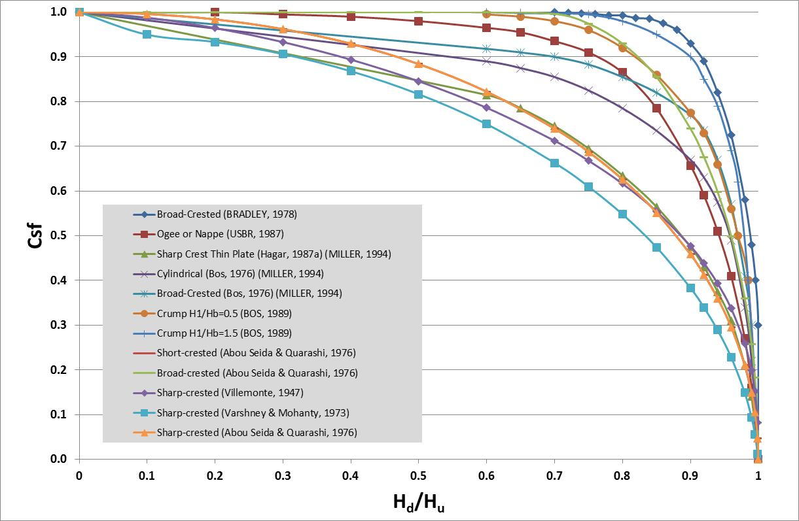
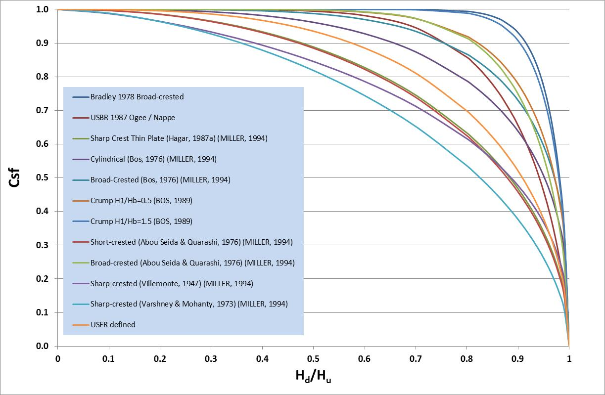
| No. | Default GIS Attribute Name | Description | Type |
|---|---|---|---|
1 |
ID |
Unique identifier up to 12 characters in length. It may contain any character except for quotes and commas, and cannot be blank. As a general rule, spaces and special characters (e.g. |
Char(12) |
2 |
Type |
The weir channel type as specified using the flags in Table 5.1 and Table 5.15. For example, a V-notch weir would be entered as “WV”. |
Char(4) |
3 |
Ignore |
If a “T”, “t”, “Y” or “y” is specified, the object will be ignored (T for True and Y for Yes). Any other entry, including a blank field, will treat the object as active. |
Char(1) |
4 |
UCS (Use Channel Storage at nodes) |
If left blank or set to Yes (“Y” or “y”) or True (“T” or “t”), the storage based on the width of the channel over half the channel length is assigned to both of the two nodes connected to the channel. If set to No (“N” or “n”) or False (“F” or “f”), the channel width does not contribute to the node’s storage. See Section 5.12.1.1 for further discussion. |
Char(1) |
5 |
Len_or_ANA |
The length of the weir channel, not the weir crest. Only used for automatically determining the storage at the nodes if the UCS attribute is set to “Y” or “T”. Not used in the conveyance calculations. If a no attribute is specified, the length of the digitised line is used. |
Float |
6 |
n_nF_Cd |
Not used. |
Float |
7 |
US_Invert |
All Weir (excluding WO) Channel Types: Sets the weir invert. Note that the invert is taken as the maximum of the US_Invert and the DS_Invert attributes. For W and WW weirs use -99999 to use the bed of the cross-section (if one exists) as the invert or weir crest. WO Channel Type: The absolute difference in height between the US_Invert and DS_Invert is used to set the height of the weir above its sill (usually denoted as P), which is used for recalculating the weir’s discharge coefficient each timestep. If the US_Invert and DS_Invert are the same value the primary upstream channel bed will be used to set the value of P. |
Float |
8 |
DS_Invert |
See comments above for US_Invert. |
Float |
9 |
Form_Loss |
Not used. |
Float |
10 |
pBlockage |
W Channel Type: Not used. Reserved for future builds to fully or partially block W channels. The 1d_xs Skew attribute can be used to partially block cross-sections of these channels - see Table 5.4. WB, WC, WD, WO, WR, and WS Channel Type: The weir width is adjusted proportionally by the % blockage. WT Channel Type: The base width of the weir is adjusted proportionally by the % blockage. WV Channel Type: The V-notch angle is adjusted proportionally by the % blockage. |
Float |
11 |
Inlet_Type |
Leave blank unless using the legacy MIKE 11 1D cross-section data feature. |
Char(256) |
12 |
Conn_1D_2D |
Leave blank unless using the legacy MIKE 11 1D cross-section data feature, or if accessing a Flood Modeller cross-section database (.pro file), enter the label in the .pro file. |
Char(4) |
13 |
Conn_No |
Leave blank unless using the legacy MIKE 11 1D cross-section data feature. |
Integer |
14 |
Width_or_Dia |
All Weir (excluding WT and WV) Channel Types: The weir width in metres. The maximum of US_Invert and DS_Invert is used in conjunction with the Width_or_Dia attribute to define a rectangular section 5m (16.4ft) high. The automatic height given to the weir of 5m (16.4ft) so that the generation of node storage areas from channel widths are within a realistic range of elevations. Use Depth Limit Factor to allow water levels to exceed the 5m (16.4ft) range if required. Note: For W and WW weirs if a cross-section for the channel exists, the cross-section profile will prevail over the automatic rectangular shape. Note: For operational weirs, the width of the weir when fully open. WT Channel Type: The width at the base of the trapezoidal weir. WT weirs are Cippoletti weirs that have side slopes of 1 horizontal to 4 vertical. WV Channel Type: Angle of the V-notch in degrees. Must be between 20º and 100º. |
Float |
15 |
Height_or_WF |
For non-operated weirs, this value can be used as a weir coefficient adjustment factor to be primarily used for model calibration or sensitivity testing. The weir coefficient is multiplied by this value. The resulting weir coefficient can be viewed in the .eof file and over time in the _TSL GIS layer. If zero or negative an adjustment factor of 1.0 (i.e. no adjustment) is applied. For operational weirs, the height of the weir above the crest when fully up. |
Float |
16 |
Number_of |
Not used. |
Integer |
17 |
HConF_or_WC |
W Channel Type: Not used. All Weir (excluding W) Channel Types: Weir coefficient, Cd, in its dimensionless form. If less than or equal to zero the default value for the weir type in Table 5.16 is used. Note that for WV weirs the default is to recalculate Cd every timestep. Entering a value greater than zero (0) will override this and apply a fixed Cd. For WO weirs, the default is to recalculate Cd every timestep based on the actual head, while entering a value less than zero (0) will specify a design head for Cd calulation. Entering a value greater than zero (0) will apply a fixed Cd. Please see Section 5.7.4.3.1 for the detailed ogee crest weir approach. For WD weirs the user must specify a non-zero positive value. Note that published weir coefficients may be based on other non-dimensional or dimensional forms of the weir equation, and care should be taken in ensuring the coefficient is compatible with the form of the weir flow equation presented in Section 5.7.4.3. |
Float |
18 |
WConF_or_WEx |
W Channel Type: Not used. All Weir (excluding W) Channel Types: Weir flow equation exponent Ex in the weir flow equation presented in Section 5.7.4.3. If less than or equal to zero the default value for the weir type in Table 5.16 is used. The default value is 1.5 for all weir types except for WV which is 2.5. |
Float |
19 |
EntryC_or_WSa |
W Channel Type: Not used. All Weir (excluding W) Channel Types: Sets the submergence factor a” exponent in the Villemonte Equation for calculating the weir submergence factor Csf (refer to equations in Section 5.7.4.3 and Section 5.7.4.4). If less than or equal to zero the default value for the weir type in Table 5.16 is used. ” |
Float |
20 |
ExitC_or_WSb |
W Channel Type: Not used. All Weir (excluding W) Channel Types: Sets the submergence factor b” exponent in the Villemonte Equation for calculating the weir submergence factor Csf (refer to equations in Section 5.7.4.3 and Section 5.7.4.4). If less than or equal to zero the default value for the weir type in Table 5.16 is used. ” |
Float |
5.7.4.5 Automatically Created Weirs
Weirs representing overtopping of structures such as culverts and bridges may be automatically created without the need to digitise a separate line within a 1d_nwk layer. The structure must be digitised within a 1d_nwke layer (as opposed to a 1d_nwk layer) and a “W” specified alongside the original structure type. For example, to model a bridge and a weir representing overtopping of the road deck, specify type “BW”. The weir crest level and dimensions are specified within the additional attributes contained within a 1d_nwke layer and are explained in Table 5.18. The original W weir approach is adopted for calculating the flow (see Section 5.7.4.2).
The weir’s shape is assumed to be two rectangles on top of each other. The lower rectangle is reduced in width according to the percent blockage applied to the rail (i.e. the EN4 attribute in Table 5.18), and its height is the EN3 attribute. The upper rectangle is the full flow width and extends indefinitely in the vertical.
Alternatively, the flow over a structure can be manually digitised as a separate 1d_nwk weir channel parallel to the original bridge or culvert structure (i.e. the weir is connected to the ends of the bridge/culvert). Any of the available weir types can be used in this instance.
| No. | Default GIS Attribute Name | Description | Type |
|---|---|---|---|
21 |
ES1 |
Not yet used (leave blank). |
Char(50) |
22 |
ES2 |
Not yet used (leave blank). |
Char(50) |
23 |
EN1 |
For BW, CW and RW channels, the flow width of weir (m or ft (if using Units == US Customary)) over the top of the B, C or R structure. If < 0.001, uses width multiplied by the number of culverts attribute for C and R channels. |
Float |
24 |
EN2 |
For BW, CW and RW channels, the depth (m or ft (if using Units == US Customary)) of the bridge deck or culvert overlay. The weir level is set using the average of the upstream and downstream obverts plus the EN2 value. The level can be confirmed using the inverts_check file. |
Float |
25 |
EN3 |
For BW, CW and RW channels, the depth of the hand rail (m or ft (if using Units == US Customary)). If < 0.001 assumes solid or no rail, depending on the EN4 attribute entry. |
Float |
26 |
EN4 |
For BW, CW and RW channels, \(\%\) blockage of the rail (e.g. 100 for solid rail, 50 for partially blocked, 0 for no rail). |
Float |
27 |
EN5 |
For BW, CW and RW channels, the weir calibration factor. Is set to 1.0 if < 0.001 is specified. |
Float |
28 |
EN6 |
Not yet used (leave as zero). |
Float |
29 |
EN7 |
Not yet used (leave as zero). |
Float |
30 |
EN8 |
Not yet used (leave as zero). |
Float |
5.7.4.6 VW Channels (Variable Geometry Weir)
The VW (variable weir) channel allows the modeller to vary the cross-section geometry of a W weir over time using a trapezoidal shape. To set up a VW channel follow the steps below.
In the 1d_nwk layer, the following attributes are required:
- ID = ID of the channel;
- Type = “VW”;
- Len_or_ANA = Nominal length in m (only used for calculating nodal storage if UCS is on);
- US_Invert = -99999 (the invert level is specified in the .csv file discussed below);
- DS_Invert = -99999 (the invert level is specified in the .csv file discussed below);
- Inlet_Type = relative path to a .csv file containing information on how the weir geometry varies; and
- Height_Cont = Trigger Value (the upstream water level to trigger the start of the failure; upstream water level is determined as the higher water level of the upstream and downstream nodes).
The .csv file must be structured as follows (also see Figure 5.19 below):
- TUFLOW searches through the sheet until more than 4 numbers are found at the beginning of a row (Row 2 in Figure 5.19).
- Each row of values is read until the end of the file or a row with no or less than four numbers is found. There is no limit on the number of rows of data.
- The four columns must be as follows and in this order. The labels for the columns are optional.
- Time from start of breach in hours.
- Weir bed level in metres.
- Weir bed width in metres.
- Side slope (enter as the vertical distance in metres for one metre horizontal). For example, a value of 0.5 means a slope of two horizontal to one vertical.
In the example below (Figure 5.19), the weir once triggered will erode from a bed level of 270m to 254m, widen from a bed width of 0 to 20m and the side slope will remain constant at 0.5. The period of time for the erosion is 0.5hours.
Although in most cases the weir is eroded, the weir can also be raised/accreted as well or a combination of the two. Simply enter the change over time using as many rows as needed.
The original W weir approach is adopted for calculating the flow (see Section 5.7.4.2).
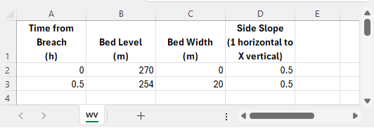
5.7.5 Spillways (SP)
Spillways (‘SP’) were introduced for the TUFLOW 2013-12 release and may also be used in operational mode as a gated spillway (see Section 5.9). Spillways may also be simulated and operated as Q or QO channels where the user provides the stage discharge relationships (see Section 5.8.2 and Section 5.9.3). The 1d_nwk attributes are presented in Table 5.19.
Spillways use the same equation as for advanced weirs (Section 5.7.4.3). For ungated spillways (i.e. SP, non-operated spillways) the same parameters as for Ogee Weirs are the default (see Table 5.16), except for Cd, which is fixed with the default value of 0.75. For Ogee Weirs, C\(_d\) is recalculated every timestep (see Section 5.7.4.3.1). The 1d_nwk attributes in Table 5.16 can be used to modify the flow equation parameters for SP channels in a similar manner for advanced weirs.
SPO channels also use the same equation when the gate is not affecting the flow (for more information on SPO channels refer to Section 5.9.6).
SP and SPO channels can also drown out as per the submergence curves for advanced weirs.
A working example of a model containing a spillway is provided in the 1D Structures Example Model Dataset on the TUFLOW Wiki.
5.7.6 Sluice Gates (SG)
For sluice gates refer to Section 5.9.5. The same approach applies as for SGO operated gates, except that the gate is assumed to be in a fixed position based on the 1d_nwk Height_or_WF attribute value. The 1d_nwk attributes are presented in Table 5.19.
5.7.7 Adjustment of Contraction and Expansion Losses
The energy losses associated with the contraction and expansion of flow lines into and out of a structure, can be automatically adjusted according to the approach and departure velocities in the upstream and downstream channels. This is particularly important where:
- There is no change in velocity magnitude and direction as water flows through a structure. In this situation, there is effectively no entrance (contraction) or exit (expansion) losses and the losses need to be reduced to zero. Examples are:
- A clear spanning bridge over a stormwater channel where there are no losses due to any obstruction to flow until the bridge deck becomes surcharged.
- Flow from one pipe to another where the pipe size remains unchanged and there is no significant bend or change in grade.
- There is a change in velocity, but the change does not warrant application of the full entrance and exit loss. This is the most common case where the application of the full entrance and exit loss coefficients (typically 0.5 and 1.0) will overestimate the energy loss through the structure. The full values are only representative of the situation where the approach and departure velocities are close to zero, for example, a culvert discharging from a lake into another lake where the velocity transitions from still water to fast flowing and to still water.
The entrance and exit losses are adjusted according to the equations below to take into account the change in velocity caused by the structure. The first equation is empirical, while the second equation to adjust exit losses can be derived from first principles.
\[ \text{C}_{\text{entrance\_adjusted}} = \text{C}_{\text{entrance}}\left\lbrack 1 - \frac{\text{V}_{\text{approach}}}{\text{V}_{\text{structure}}} \right\rbrack \tag{5.14}\]
\[ \text{C}_{\text{exit\_adjusted}} = \text{C}_{\text{exit}}\left\lbrack 1 - \frac{\text{V}_{\text{departure}}}{\text{V}_{\text{structure}}} \right\rbrack^{2} \tag{5.15}\]
Where:
- V = Velocity (m/s or ft/s if using Units == US Customary)
- C = Energy Loss Coefficient
As the structure velocity approaches the incoming and/or outgoing velocities, the loss coefficient approaches zero. When the incoming and/or outgoing velocity approaches zero (i.e. water is leaving/entering a large body of water), the loss coefficients approach their full value.
Tullis & Robinson (2008) provide an excellent proof for the need to adjust losses for different flow regimes using the exit loss equation above. The paper benchmarks different exit loss equations used within the industry methods against experimental flume test results.
The adjustment of losses feature is available to structures that require entrance and exit loss coefficients, namely culverts and bridges. For culverts, the adjusted entrance loss coefficient only applies where the flow is not inlet controlled (i.e. Regimes C, D, E, F, H and J in Table 5.6), and the adjusted exit loss is only influential where the flow is downstream controlled (i.e. Regimes D, F, H and J (subcritical at exit) in Table 5.6). For bridges, the application varies as discussed below.
If Structure Losses == ADJUST EXCEPT BG TABLES (default), the adjustment of the losses is only applied to culverts and B bridges with automatically generated loss tables using the 1d_nwk Form_Loss attribute (see Table 5.11). There is no adjustment for B bridges with a user specified BG or LC energy loss table, because bridge energy losses are most often based on coefficients from publications such as “Hydraulics of Bridge Waterways” (Bradley, 1978) or “Guide to Bridge Technology Part 8, Hydraulic Design of Waterway Structures” (Austroads, 2018) that have already taken into account the effects of contraction and expansion.
For BB bridges, the LC table should only represent the pier and submerged deck losses (see Section 5.7.4.4), as the adjustment of entrance and exit losses every timestep as per the equations above is always applied irrespective of the Structure Losses setting. The equations above conform with the approach for determining contraction and expansion losses in publications such as Hydraulics of Bridge Waterways.
For B bridges and culverts, if Structure Losses is set to “ADJUST”, or “A” has been specified in the 1d_nwk Type attribute (e.g. BA, CA, IA or RA), the entrance and exit losses are adjusted according to the equations above. For B bridges, because the entrance and exit losses are combined as one loss coefficient, the entrance and exit loss components are proportioned one-third / two-thirds respectively when applying the above equations. For the new BB bridge, entrance and exit losses are always adjusted as per the equations above and the Structure Losses setting is not relevant (also see Section 5.7.4.4).
The selection of the upstream and downstream channels on which to base the approach and departure velocities is as follows:
- The upstream channel is determined as the channel which has a positive flow direction into the structure whose invert is closest to that of the upstream invert of the structure. If no channel exists, no adjustment of losses is made (this includes structures connected to a 2D domain). Note that the upstream channel must be digitised so that it has the same positive flow direction to that of the structure.
- The downstream channel is selected on a similar basis to that for the upstream channel.
- The selected upstream and downstream channels are listed in the .eof file for cross-checking (search for “Primary Channel”).
- X channels can be used to connect additional channels and ensure that these are not considered the primary channel.
TUFLOW has no requirement of a minimum loss coefficient value for stability, and allows the adjusted coefficient to approach zero allowing this feature to correctly model the structure losses when the structure causes no disturbance to flow, or when one pipe discharges into another of identical size, grade and alignment.
The adjustment of loss coefficients does not apply to:
- Any bend or additional loss for a culvert entered using the Form_Loss attribute in the 1d_nwk layer. This coefficient can be used to apply additional losses (e.g. pit or bend losses) that are not affected by changes in the relativity of the approach/departure and structure velocities.
- Any additional loss coefficient component for BB bridges entered using the Form_Loss attribute in the 1d_nwk layer. This coefficient can be used to apply additional losses (e.g. pier losses) that are not affected by changes in the relativity of the approach/departure and structure velocities.
- The ends of culverts and bridges that are connected to 2D SX or HX cells as the approach or departure velocity needs to be derived in some manner from the 2D velocity field. It is important not to be duplicating energy losses by applying exit losses to a 1D structure and simulating the same energy losses due to the flow expansion in the 2D domain – for further information see the Modelling Energy Losses at Structures AWS Webinar.
If Structure Losses is set to FIX, or “F” has been specified in the 1d_nwk Type attribute (e.g. BF, CF, IF or RF), the entrance and exit loss coefficients for B bridges and culverts are not adjusted. Fixing the entrance and exit losses for BB bridges is not available – use a B bridge instead.
Note that the energy loss specified via the “Form_Loss” attribute is not subject to this adjustment.
The variation in time of the loss coefficients can be viewed using the _TSL output layer (see Section 15.2.4) or charted in the TUFLOW Viewer.
If there is a manhole at the culvert end, a manhole energy loss approach (see Section 5.10.4) is used instead of the culvert’s contraction/expansion loss, and the above description does not apply.
5.8 Special Channels
5.8.1 M Channels (User Defined Flow Matrix)
M channels allow the modeller to define the flow through a channel (usually a structure) based on a user specified flow matrix. To set up M channels follow the steps below:
- In the 1d_nwk layer, populate the required attributes as shown in Table 5.19
- Create the flow matrix as shown in the image below and save the file as a .csv. The .csv file is referenced in the 1d_nwk Inlet_Type attribute. Notes using the example in the below image (Figure 5.20) are:
- TUFLOW searches through the sheet until more than 3 numbers are found at the beginning of a row (Row 3 in the example).
- This first row contains a multiplication factor (in Cell A3) followed by upstream depth values (in the direction that the channel is digitised). The depth values are added to the channel invert to set the water level.
- The next rows have the downstream depth in Column A. Flows are listed in the adjacent columns relating to the above upstream depth value (Row 3).
- Note: at present the matrix must be square and that the u/s and d/s depths must be the same values. The flows along the diagonal must be zero, and to the left of the diagonal negative (or zero) and to the right positive (or zero).
- Optionally create a flow area matrix of the same dimensions and depth values as for the flow matrix. Note:
- The path to the area.csv file is specified after the flow.csv file in the Inlet_Type attribute (separate the two filenames using a
|; eg...\UD_Q.csv | ..\UD_A.csv). - The factor value in the A3 cell is not used in the flow area matrix (the value in the flow matrix is used to factor the areas).
- The area values are only used for outputting the channel velocity (they are not used for the hydraulic computations other than when the channel velocity is used for other channels, eg. adjusting structure losses).
- If an area matrix is not provided, TUFLOW will calculate the area based on the channel width multiplied by the pBlockage and the average of the upstream and downstream depths.
- The path to the area.csv file is specified after the flow.csv file in the Inlet_Type attribute (separate the two filenames using a
A working example of a model containing a 1D M channel is provided in the 1D Structures Example Model Dataset on the TUFLOW Wiki.
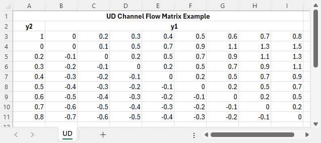
5.8.2 Q Channels (Upstream Depth-Discharge Relationship)
Q channels are used to model flow through a channel using an .ecf Depth Discharge Database. The Depth Discharge Database is the same as the Pit Inlet Database used for Q pits, with the same database used for both Q channels and Q pits. Refer to Section 5.10.3.
In the 1d_nwk layer, the following attributes can be used to set up a Q channel (also see Table 5.19).
- ID = Unique Channel ID.
- Type = “Q”.
- US_Invert = Elevation corresponding to zero depth in the depth-discharge curve.
- Inlet_Type = The depth discharge curve in the Depth Discharge Database or Pit Inlet Database. This is analogous to a Q pit (see Section 5.10.3). Note that the flow is automatically adjusted for being drowned out using the Bradley relationship for weirs (see Section 5.7.4.2 or Figure 5.13), and if the flow reverses the same depth discharge curve is used.
- Width_or_Dia = For Q channels can be used as a flow multiplier – this is useful if the depth-discharge curve is a unit flow (i.e. flow per unit width). If the discharge is unit flow specify the width of the flow, otherwise specify a value of 1.0 (noting that a zero value is treated as 1.0).
- Number_of = The number of parallel Q channels (a zero value is interpreted as one channel).
A working example of a model containing a 1D Q channel is provided in the 1D Structures Example Model Dataset on the TUFLOW Wiki.
5.8.3 X Connectors
X connectors are used for connecting a side tributary or pipe into the main flow path. They are digitised as a line within a 1d_nwk GIS layer with type “X”. No other attributes are required.
Use of an X connector has the advantage of allowing different end cross-sections (see Section 5.6.6) or WLLs (see Section 11.2.4) to be specified for the side channel, rather than using the end cross-section on the main channel.
They can also be used in pipe networks to ensure that the angle of the inlet and outlet culverts has been digitised appropriately as this influences the manhole losses calculated when using the Engelund loss approach (see Section 5.10.4.4). The angle of the pipe channel line is used for determining manhole losses, not that of the X connector.
The direction of the X Connector must be digitised starting from the side channel and ending at the main channel. If two or more connectors are used at the same location (i.e. to connect two or more side channels to a main channel) their ends must all snap to the same main channel.
5.8.4 Legacy Channels
For backwards compatibility, gradient (type ‘G’) and normal (type ‘blank’) channels remain supported in the current release of TUFLOW. Sloping (type ‘S’) open channels are the preferred method of modelling open channels as it incorporates the flow regimes covered by normal and G channels and include the additional ability of handling super-critical flow. Refer to Section 5.5 for further information.
A normal flow channel is defined by its length, bed resistance and hydraulic properties. The channel can wet and dry, however, for overbank areas (e.g. tidal flats or floodplains) G or S channels should be used.
For open channels it is recommended to use the S Type for the reasons given above.
Gradient channels were designed for overbank areas such as tidal flats and floodplains. The upstream and downstream bed invert attributes must be specified to define the slope of the channel. They are like normal channels, except when the water level at one end of the channel falls below the channel bed, the channel invokes a free-overfall algorithm that keeps water flowing without using negative depths. The algorithm takes into account both the channel’s bed resistance and upstream controlled weir flow at the downstream end.
For overbank areas it is recommended to use the S Type for the reasons given above.
5.8.5 1d_nwk Attributes (M, P, Q, SG, SP Channels)
The table below covers the 1d_nwk attributes for all channels not covered in other 1d_nwk attribute tables.
| No. | Default GIS Attribute Name | Description | Type |
|---|---|---|---|
1 |
ID |
Unique identifier up to 12 characters in length. It may contain any character except for quotes and commas and cannot be blank. As a rule, spaces and special characters (e.g. |
Char(12) |
2 |
Type |
The channel type as specified using the flags in Table 5.1. For X (connectors), no other attributes are required. |
Char(4) |
3 |
Ignore |
If a “T”, “t”, “Y” or “y” is specified, the object will be ignored (T for True and Y for Yes). Any other entry, including a blank field, will treat the object as active. |
Char(1) |
4 |
UCS (Use Channel Storage at nodes). |
M, P, Q Channel Type: Not used. SG, SP Channel Type: If left blank or set to Yes (“Y” or “y”) or True (“T” or “t”), the storage based on the width of the channel over half the channel length is assigned to both of the two nodes connected to the channel. If set to No (“N” or “n”) or False (“F” or “f”), the channel width does not contribute to the node’s storage. See Section 5.12.1.1 for further discussion. |
Char(1) |
5 |
Len_or_ANA |
M, P, Q Channel Type: Not used. SG, SP Channel Type: Only used in determining nodal storages if the UCS attribute is set to “Y” or “T”. Not used in conveyance calculations. |
Float |
6 |
n_ nF_Cd |
M, P, Q Channel Type: Not used. SG, SP Channel Type: Discharge coefficient for the structure if using a fixed coefficient. If the value is less than or equal to zero, the default Cd value of 0.6 for SG and 0.75 for SP is used. |
Float |
7 |
US_Invert |
M Channel Type: Invert level of channel. P Channel Type: Intake elevation of the pump. Q Channel Type: US_Invert sets the level from which the upstream depth is to be calculated for interpolation into the depth-discharge curve. SG Channel Type: The higher of US_Invert and DS_Invert is used to set the structure crest or invert. SP Channel Type: Sets the spillway crest |
Float |
8 |
DS_Invert |
M Channel Type: Invert level of channel is taken as the maximum of US_Invert and DS_Invert. P Channel Type: Outlet elevation of the receptor. Q Channel Type: Not used. SG Channel Type: See comments above for US_Invert. SP Channel Type: Sets the level of the gate seat (if SP is operated, i.e. a SPO channel). |
Float |
9 |
Form_Loss |
M, P, Q, SP Channel Type: Not used. SG Channel Type: If no weir is specified in the Type attribute, it is assumed that the gate seats on to the bottom of the channel. For this case the flow calculations where the gate is not surcharged uses the Form_Loss attribute to apply an energy loss to the structure to represent contraction/expansion losses. |
Float |
10 |
pBlockage |
Q Channel Type: Not used. M Channel Type: Percentage blockage of channel (only used if no flow area matrix is provided). Refer to Inlet_Type attribute below. P, SG, SP Channel Type: The channel’s dimensions and flow capacity are reduced as per the pBlockage value. |
Float |
11 |
Inlet_Type |
M Channel Type: The relative path to the flow matrix file (must be a .csv file), and optionally flow area matrix file. See Section 5.8.1. P, SG, SP Channel Type: Only used for operational versions of these channels (i.e. type PO, RGO, SGO or SPO) to specify the name of the <control_id>. The <control_id> is referenced within the .toc file and specifies the rules used to operate the channel. More than one channel can point to the same <control_id>. Refer to Section 5.9.1. Q Channel Type (for QO see further below): For non-operated Q channels the name of the depth-discharge curve in a depth discharge database (identical approach to inlet Q pits). A Q channel is distinguished from a Q pit, in that a Q channel is a line in the 1d_nwk layer and a Q pit is a point object. A depth-discharge database is the same as a pit inlet database as used for Q pits, and the same database file can be used for both Q channels and Q pits. The .ecf command Depth Discharge Database and the existing command Pit Inlet Database perform the same function. Note that the depth discharge curve is depth (not water elevation) and the depth is taken as the upstream water level less the Q channel’s invert. QO Channel Type: For operated Q channels the filename of a .csv file containing a flow matrix table in the same format as used for M channels. See Section 5.8.1. |
Char (max 256) |
12 |
Conn_1D_2D |
Not used. |
Char |
13 |
Conn_No |
Not used. |
Integer |
14 |
Width_or_Dia |
P Channel Type: The diameter of the pump offtake. Only used for outputting a velocity - it does not affect the hydraulic calculations. M Channel Type: Width of channel (only used if no flow area matrix is provided). Refer to Inlet_Type attribute above. Q Channel Type (for QO see further below): A multiplier applied to the flow interpolated from the depth-discharge curve. Particularly useful if the discharge values are per unit width (i.e. m\(^2\)/s or ft\(^2\)/s). If set to zero (0), the multiplier is set to one (1). QO Channel Type: Used to determine the flow area at different stages by multiplying by the upstream depth. The area is used to determine the velocity that is output, otherwise, it does not play a role in the hydraulic calculations. SG, SP Channel Type: The width of the gate/spillway. The flow area is assumed to be rectangular in shape. |
Float |
15 |
Height_or_WF |
M, Q Channel Type: Not used. P Channel Type: Can be used to set the pump flow capacity for operated pumps (i.e. a PO channel). The pump capacity can also be set and changed during the simulation using the .toc file operating control commands. Useful where the operating control definition is generic (i.e. pump control is used for more than one pump of different flow capacities). SG Channel Type: The vertical height of the gate in its fully open position. If an underlying weir is specified, the weir is assigned a coefficient adjustment factor of 1.0, which cannot be modified using this attribute. SPO Channel Type: For an operated (gated) spillway (SPO), sets the vertical height of the gate in its fully open position. The fully open height can also be changed during the simulation using the .toc file operating control commands. This is useful where the operating control definition is generic (i.e. non-structure specific). Not used if channel is non-operational (i.e. a SP channel). |
Float |
16 |
Number_of |
P, SG, SP Channel Type: The number of parallel (duplicate) channels. If set to zero, one channel is assumed. M, Q Channel Type: Number of parallel channels (flow and area matrices are multiplied by this value). If zero is set to one. |
Integer |
17 |
HConF_or_WC |
M, Q Channel Type: Not used. SP Channel Type: Weir flow coefficient, \(C_{d}\), in its dimensionless form as in Equation 5.19 (see Section 5.9.6 for details). If less than or equal to zero the default value for spillways in Table 5.16 is used. Entering a value greater than zero (0) will override this and apply a fixed \(C_{d}\). SG Channel Type: As for the weir channel in Table 5.17 if a weir has been specified (e.g. a “SG WB” channel). |
Float |
18 |
WConF_or_WEx |
M, Q Channel Type: Not used. SP Channel Type: Weir flow equation exponent Ex in the equation for HConF_or_WC. If less than or equal to zero the default value for spillways in Table 5.16 is used (i.e. 1.5). SG Channel Type: As for the weir channel in Table 5.17 if a weir has been specified (e.g. a “SG WB” channel). |
Float |
19 |
EntryC_or_WSa |
M, Q, SPO Channel Type: Not used. SP Channel Type: Sets the submergence factor \(a\) exponent in the Villemonte equation Equation 5.13 for calculating the submergence factor \(C_{sf}\). If less than or equal to zero the default value for spillways in Table 5.16 is used. SG Channel Type: As for the weir channel in Table 5.17 if a weir has been specified (e.g. a “SG WB” channel). |
Float |
20 |
ExitC_or_WSb |
M, Q, SPO Channel Type: Not used. SP Channel Type: Sets the submergence factor \(b\) exponent in the Villemonte equation Equation 5.13 for calculating the weir submergence factor \(C_{sf}\). If less than or equal to zero the default value for spillways in Table 5.16 is used. SG Channel Type: As for the weir channel in Table 5.17 if a weir has been specified (e.g. a “SG WB” channel). |
Float |
5.9 Operational Channels
Gated rectangular culverts, pumps, sluice gates, gated spillways, weirs and Q channels can be operated using logical scripts. An “O” Type flag is required within the 1d_nwk layer for structures that are to be operated using an operating control definition. For example, an operated pump would have a Type attribute of “PO” or “OP”.
Operating rules are contained within a .toc file (TUFLOW Operations Control) with each set of rules contained within a control definition. More than one structure/device can use the same control definition. The .toc file is referenced using Read Operating Controls File via the .ecf file, or via the .tcf file within a Start 1D Domain block or by preceding the command with “1D”.
The operating rules for a control can only occur within a .toc file. More than one .toc file can be set up and accessed should there be a need to break the control definitions into several files (for example, all pump controls could be placed in one file and sluice gate controls in another).
Operational structure time-series data are output to the _1d_O.csv file. The file reports the time varying status of the structure and the resulting flow rate. Values of user defined variables and other information are also output to this file. This is discussed in greater detail within Section 15.2.4.
5.9.1 .toc File Commands and Logic
5.9.1.1 Define Control Command
A .toc file can only contain Define Control and End Define blocks.
Each Define Control must include a keyword indicating the type of structure/device as per below:
Define [ Culvert | Pump | Q Channel | Sluice | Spillway | Weir ] Control == <control_id>
…
End Define
Where <control_id> is a unique control definition name, noting that more than one structure can refer to the same operational control definition. For example, several pumps of different capacities may utilise the same operational control logic. The 1d_nwk Inlet_Type attribute is used to link a control definition with the structure.
Within the control definition, commands specific to the type of structure/device can be used to adjust the structure/device’s operation. The commands available for each type of control are described below.
Each Define Control block consists of three sections:
- The default settings for the control’s commands. These are usually placed at the top of the definition and prior to the logical rules. These default settings are used at the start of the simulation/operation and during the operation unless changed by the logical rules.
- User defined variables as described further below.
- One or more logical rules as described further below.
An example of a definition control with the three sections is provided below.
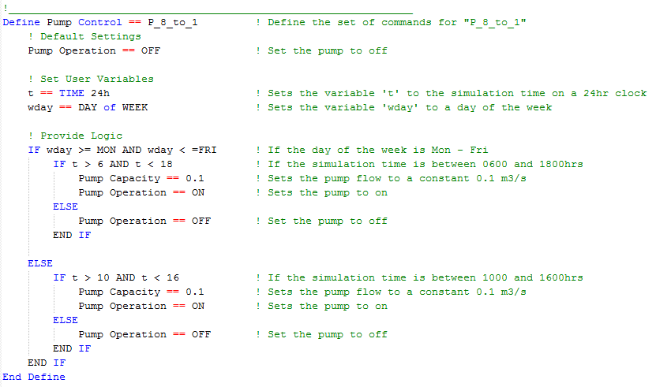
5.9.1.2 User Defined Variables
If a line in the control definition cannot be processed as one of the commands described above, and it is not within an If…End If block, it is treated as a variable definition using the syntax:
<variable> == <variable_value>
Where <variable> is the variable name, while <variable_value> must conform to one of the options in Table 5.20. Any characters can be used for the variable name, but it is recommended to use only letters, numbers and underscores and to avoid spaces. Note that variables can be redefined at any point within the control definition. Also note that these variables only apply to the control. For global variables, use the Set Variable feature.
| Variable Value | Description |
|---|---|
constant |
Sets the variable to the value of <constant>. Must be a number. |
Time of Model |
Sets the variable to the simulation time in hours. |
Time in 24H |
Sets the variable to the simulation time in hours on a 24-hour clock (i.e. will always be between 0 and 24 hours). A simulation time of zero is equivalent to midnight. |
Time Stamp |
Sets the variable to the current simulation time and keep the variable constant until the variable is changed by a repeat execution of “Time Stamp”. |
Day of Week |
Sets the variable to the day of the week where Sunday is 1 and Saturday is 7. The keywords “Sun”, “Mon”, “Tue”, “Wed”, “Thu”, “Fri” and “Sat” can also be used when using the variable in a logic rule. |
Period No Change |
Sets the variable to the time in hours since there was last a change in operation. |
H1D <node_id> |
Sets the variable to the water level at the 1D node named <node_id>. |
Q1D <channel_id> |
Sets the variable to the flow in the 1D channel named <channel_id>. |
H2D <x>,<y> |
Sets the variable to the water level at the 2D cell located at the XY coordinates <x>,<y> |
H2D <2d_po_ID> |
Sets the variable to the water level at the 2D plot output location given by the plot output ID. |
HU |
Sets the variable to the 1D water level at the upstream node of the channel, based on the digitised direction of the channel. |
HD |
Sets the variable to the 1D water level at the downstream node of the channel based on the digitised direction of the channel. |
dHUD |
Sets the variable to the difference in water level between the upstream and downstream nodes based on the digitised direction of the channel. Will be negative if flow is in opposite direction to digitised direction. |
H1 |
Sets the variable to the upstream water level of the channel based on the flow direction. |
H2 |
Sets the variable to the downstream water level of the channel based on the flow direction. |
dH12 |
Sets the variable to the difference in water level between the upstream and downstream nodes based on the flow direction of the channel. Will always be positive. |
YU |
Sets the variable to the depth above the structure invert of the upstream node based on the digitised direction of the channel. |
YD |
Sets the variable to the depth above the structure invert of the downstream node based on the digitised direction of the channel. |
Y1 |
Sets the variable to the upstream depth relative to the structure invert based on the flow direction. |
Y2 |
Sets the variable to the downstream depth relative to the structure invert based on the flow direction. |
The 2020-10 release introduced a feature to allow operational control channels to refer to the status/variables from other operational control channels. This makes coordinated operations possible between multiple operational structures. The supported status/variables include:
- “Period No Change” returns the time in hours since there was a change in operation in another operational channel.
- “Status” returns the operational status keywords in text format for different types of operational channels. The full list of keywords is summarised in Table 5.21. A working example of this feature is provided in the 1D Operating Structures Example Model Dataset on the TUFLOW Wiki.
- “Operational Variables” returns the numeric values of operational variables from other operational channels, such as “Gate Height”, “Weir Width”, etc. The full list of keywords is summarised in Table 5.22.
The operational control channel ID (1d_nwk attribute) must be added at the end of user defined variable commands listed above to refer to the “Period of No Change”, “Status” or “Operational Variable” from other operational channels, e.g.:
<variable> == Weir Height <channel_ID>
| Operational Channels | Status Strings |
|---|---|
Pumps (PO) |
“Off”, “Dry”, “Below Soffit”, “Starting”, “Stopping”, “Constant”, “Pump Curve” |
Gated Drowned Rectangular Culverts (RO) Sluice Gates (SGO) Spillways with Gates (SPO) Weirs (WBO, WCO, WDO, WOO, WRO, WTO) Dam failure (DF) Pipe failure (PF) |
“Opening”, “Closing”, “Steady”, “Closed”, “Fully Open” |
| Operational Channels | Operational Variables |
|---|---|
Pumps (PO) |
Pump Flow |
Q channel (QO) |
Q Opening, Q Fully Open |
Gated Drowned Rectangular Culverts (RO) |
Gate Height, Gate Width |
Sluice Gates (SGO) |
Gate Opening |
Spillways with Gates (SPO) |
Gate Opening |
Weirs (WBO, WCO, WDO, WOO, WRO, WTO) |
Weir Height, Weir Width |
Dam failure (DF) |
Breach Depth, Top Width |
Pipe failure (PF) |
Orifice Height, Orifice Width |
In the example below, the model has an operational sluice gate (“SGate1”) and an operational pump (“Pump1”). Pump1 calls the “status” of SGate1 and operates only if SGate1’s status is “Closed”.
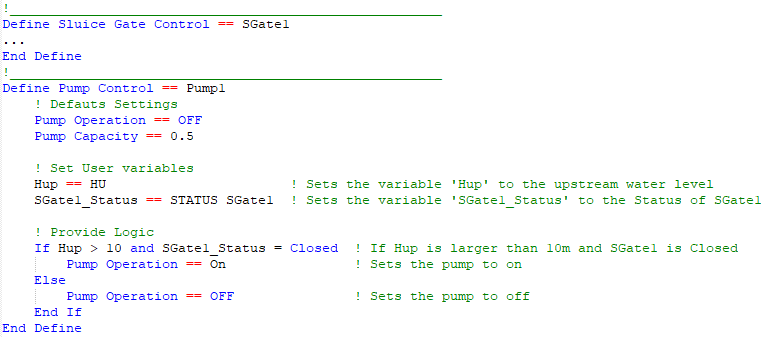
5.9.1.3 Logic Rules
The logic rules consist of using If…End If blocks using the construct below.
If <condition_1> [[ and | or ] <condition_2> ] [ [ and | or ] <condition_3> ] …
… enter one or more commands or variable definition lines
[ Else If <condition_1> [ [ and | or ] <condition_2> ] [ [and | or ] <condition_3> ] … ]
… enter one or more commands or variable definition lines
[Else If … repeat as needed]
… enter one or more commands or variable definition lines
Else
… enter one or more commands or variable definition lines
End If
<condition_1> must be a conditional operation that includes one of the symbols “=”, “>”, “>=”, “<” or “<=”. The left and right sides of the condition must be a single value or a variable name. Optionally the variable may be operated on by the following:
- A “+”, “-”, “*” or “/” and a constant value. For example, a condition could be “x + 2 < 3”; or
- Specifying “HIGHER” or “LOWER” to compare the current value of the variable to its value at the start of the current period of no change in operation. For example, “x == LOWER” will be true if the current value of ‘x’ is less than its value at the last time there was a change in operation.
If more than one condition is to be applied, the conditions must be separated by either an “and” or “or”. <condition_2>, <condition_3>, etc. have the same format as for <condition_1> above.
If … End If blocks can be nested inside other If … End If blocks. Indenting is strongly recommended to make the control file easier to read.
5.9.1.4 Incremental Operators
For the majority of the parameters / variables within a control block these can be manipulated using simple arithmetic. For example, within a control block, rather than opening a gate to a set opening height or percentage it is possible to open by a set amount:
- Gate Opening % == 50 will open the gate to 50% open
- Gate Opening % == ++ 10 will open the gate by 10% from its previous position
Four incremental / arithmetic operators are available, these are:
- ++ increment up
- -- increment down
- ** multiply
- // divide
These can be used with or without the percentage operator. Gate Opening % == ++ 10 will open a gated structure by 10%, Gate Opening == ++ 1.0 will open a gated structure by a height of 1m.
The example below shows the control definition for a pump that operates between 6am and 6pm Monday to Friday and 10am and 4pm on the weekends.
The example below shows the control definitions for a gravity released discharge to a power station (modelled as a pump) and the gated discharge through the reservoir (courtesy of Natural Resources Department, Wales).
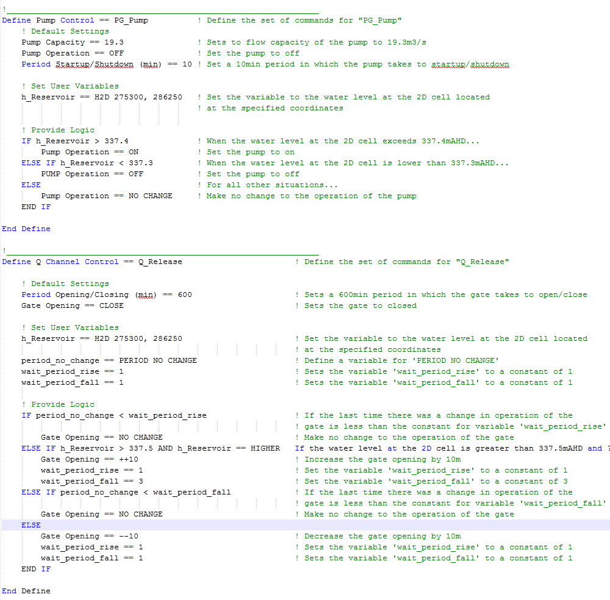
5.9.2 Pumps (P and PO)
Pumps can be modelled as a “P” or “PO” type channel. In non-operational mode (P channel), the pump flow is interpolated from a head discharge curve in the Depth Discharge Database defined via a head difference versus flow relationship – see Section 5.10.3. In operational mode, PO, the pump flow can be varied using functions such as: switching on and off over a start-up and shutdown period; and changing the pump capacity and/or discharge curve according to time, day of the week, hydraulic conditions and other variables. Pumps do not contribute to any model storage.
In the 1d_nwk layer, the following attributes can be used to set up the pump (also see Table 5.19).
- ID = Unique Channel ID.
- Type = “P” or “PO”.
- US_Invert = Intake elevation of the pump.
- DS_Invert = Outlet elevation of the receptor.
- Inlet_Type = For non-operated (P) pumps the pump discharge curve in the Depth Discharge Database. This curve is a head difference versus discharge curve, and for a pump this curve would usually have greater flows for smaller head differences. If the head difference is negative (i.e. the receptor water level is below the intake water level) the discharge used is that for a zero head difference. For operational (PO) pumps Inlet_Type refers to the Pump operational control definition (see Define Control).
- Width_or_Dia = Diameter of the pump’s outlet pipe/hose. Used to trigger dry conditions (see below) and for calculating the velocity.
- Height_or_WF = For PO pumps the initial operating pump capacity for fixed (constant) flow pumps (subject to not being overridden by an operational control command).
- Number_of = Number of (identical) pumps represented by the channel.
P and PO pumps are simulated as dry (zero flow) if the upstream (intake) node is dry or the upstream water level is below the intake elevation plus the output pipe diameter (i.e. the upstream (intake) water level is below the intake soffit, which equals the US_Invert + Width_or_Dia).
P pumps always produce a flow in the direction the P channel is digitised based on that interpolated from the pump discharge curve; the exception being when dry as described above.
PO pumps are typically operated on a time basis or based on hydraulic conditions elsewhere in the model. Operational control commands specific to the Define Pump Control command are provided below. Subject to not being overridden by an operational control command, PO pumps are assumed to be OFF at the start of the simulation.
- Pump Operation turns the pump on or off.
- Period Startup/Shutdown sets the time taken to start the pump up or shut it down.
- Pump Capacity sets the flow capacity of the pump. It is possible to set a constant flow rate or a head-discharge curve referenced within the Depth Discharge Database.
- Pump Number sets the number of pumps in parallel.
The operational status of each pump is reported over time in the _O.csv output (see Section 15.2.4). Possible status conditions include:
- “Off” is the pump is switched off.
- “Dry” if the upstream (intake) node is dry.
- “Below Soffit” if the upstream (intake) water level is below the intake soffit.
- “Starting” and “Stopping” indicate the pump is starting up or stopping within Period Startup/Shutdown.
- “Constant” indicates the pump has reached full flow capacity after starting up and is operating at its constant (fixed) flow rate, or “Pump Curve”, which indicates the pump is operating at a flow rate based on interpolating into its head discharge curve.
Models using pumps are provided in the 1D Operating Structures Example Model Dataset on the TUFLOW Wiki.
5.9.3 QO Channels
For QO channels, depth discharge curves for different structure openings are used to vary and control the discharge. The relationships are contained in a csv file in a similar format as used for M channels (see Section 5.8.1). The vertical axis is the depth above the channel’s invert and the horizontal axis is the percentage opening as shown in the example below. In the example, Column A contains the depth above invert values and Row 2 the % opening values. Note that the value in cell A2 is a flow multiplier. If this value is empty, negative or set to zero (0), a multiplier of one (1) is used. The flow through the channel is interpolated from this table at each timestep based on the structure’s opening and upstream depth above the invert.
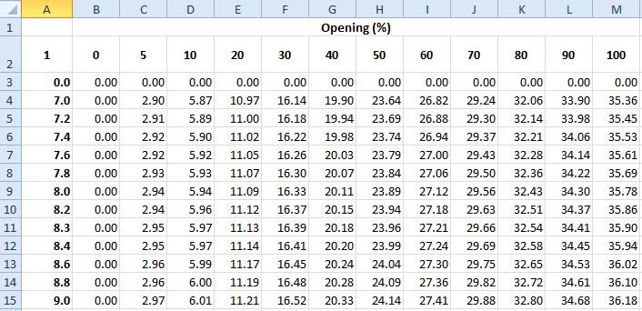
In the 1d_nwk layer, the following attributes can be used to set up a QO channel.
- ID = Unique Channel ID.
- Type = “QO”.
- US_Invert = Elevation corresponding to zero depth in the depth-discharge curve.
- Inlet_Type = Contains both the control_ID and the link to the csv file containing the matrix of flows for different openings and upstream water level as per discussion above. For example, “DS_Gate | QChannel.csv”.
- Width_or_Dia = Not used other than to estimate the velocity and contribute to nodal storage.
The following commands are specific to the Define Q Channel Control command used for QO channels.
- Gate Speed sets the speed the gate moves.
- Period Opening/Closing sets the time taken to transition from zero to 100% opening or vice versa.
- Gate Opening sets the position of the opening to be operated towards. This can be specified incrementally or as an absolute value.
- Discharge Curve Type sets how the depth/head discharge curves are calculated.
An example of the GIS attributes and .toc commands for a QO channel are provided below.
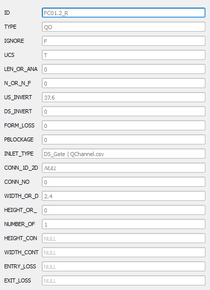
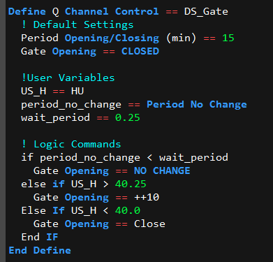
5.9.4 Gated Drowned Rectangular Culverts (RO)
Rectangular culverts with a gate on the exit can be operated using the .toc commands below for a Define Culvert Control block. The command is applicable for operated rectangular (RO) culverts only, and uses the equation below as implemented into TUFLOW for a project based in Florida. The equation below is for US Customary Units, but RO culverts can be used in metric or US Customary units. Note that the equation is for submerged culverts only, and the user must ensure that the culvert is drowned at all times.
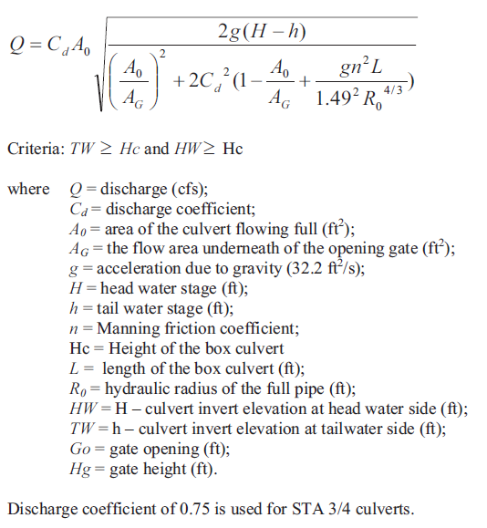
- Gate Type sets the type of gate arrangement.
- Gate Speed sets the speed at which the gate moves.
- Period Opening/Closing sets the time taken to fully open a closed gate or to fully close an open gate.
- Gate Height Fully Open sets the height (not elevation) of the gate when fully open above the gate’s seat for vertically moving gates. If not set, the 1d_nwk “Height” attribute is used.
- Gate Width Fully Open sets the width of the gate(s) when fully open for horizontally moving gates. If not set, the 1d_nwk “Width_or_Dia” attribute is used.
- Gate Opening sets the position the gate is to be operated towards. This can be specified incrementally or as an absolute value.
- Cd sets the discharge coefficient C\(_d\) in the equation above.
5.9.5 Sluice Gates (SG and SGO)
Sluice gates can be operated using the .toc commands further below for a Define Sluice Control block. The approach to calculating the flow through the gate is based on that documented in the HEC-RAS 4.0 Reference Manual as described below. For non-operated sluice gates (SG) the gate is assumed to be in a fixed position based on the 1d_nwk Height_or_WF attribute value.
For a free-flowing sluice gate (i.e. upstream controlled) Q is calculated using: \[ Q = C_{d}WB\sqrt{2gH_{1}} \tag{5.16}\]
Where:
- \(Q = \ \)Discharge
- \(C_{d} = \ \)Discharge coefficient upstream controlled flow (default = 0.6)
- \(W = \ \)Width
- \(B = \ \)Height of gate opening above crest level
- \(H_{1} = \ \)Upstream energy level – Crest level
For downstream controlled flow:
\[ Q = C_{s}WB\sqrt{2g\mathrm{\Delta}H} \tag{5.17}\]
Where:
- \(C_{s} = \ \)Submerged discharge coefficient (default = 0.8)
- \(\mathrm{\Delta}H = \ \)Upstream energy level – Downstream level
For the transition between upstream controlled and full submergence downstream controlled flow:
\[ Q = C_{d}WB\sqrt{2g3\mathrm{\Delta}H} \tag{5.18}\]
The transition between downstream and upstream controlled flow equations is based on the degree of submergence calculated as the tailwater depth above the spill crest divided by the upstream energy depth. For a ratio below 0.67 upstream controlled flow applies, above 0.8 downstream controlled flow and in between the transition equation applies.
Note that by default the energy level is used for calculating H\(_1\) and \(\mathrm{\Delta}H\), however, this can be changed as follows:
- Setting the global default to water surface level using Structure Flow Levels == WATER or by using the “H” flag for the Type attribute (see Table 5.2).
- Setting the global default to energy at the upstream node and water level at the downstream node using Structure Flow Levels == ENERGY UPSTREAM or by using the “EH” flag for the Type attribute (see Table 5.2). This option was introduced in the 2023-03-AC build.
When the flow is not in contact with the gate one of the following options apply:
- One of the advanced weir types (see Section 5.7.4.3) can be specified for the sill by adding the weir type to the 1d_nwk Type attribute (e.g. “SGWB” or “SG WB” are accepted). The weir equation for the weir type is applied when the gate is not controlling the flow. It is recommended that one of the rectangular weir shapes is used (i.e. WB, WD, WO or WR).
- If no weir is associated with the SG channel, the flow is calculated using a zero length rectangular culvert channel with adjusted entrance and exit losses as per a zero length culvert. Note the total of the entrance and exit losses is defined by the ‘Form_Loss’ attribute (see Table 5.19), where 1/3 and 2/3 of the ‘Form_Loss’ value are assigned as entrance and exit losses, respectively (typically 0.5 and 1.0).
In the 1d_nwk layer, the following attributes can be used to set up the SG or SGO channel.
- ID = Unique Channel ID.
- Type = “SG” or “SGO”.
- US_Invert and DS_Invert: The higher value is used for the sill crest.
- Width_or_Dia = Width of the gate.
- Height_or_WF = The height above the sill crest of the gate when fully opened (subject to not being overridden by an operational control command).
- Number_of = Number of (identical) parallel gates.
The following commands can be used within the Define Sluice Control block.
- Gate Speed sets the speed the gate moves.
- Period Opening/Closing sets the time taken to fully open a closed gate or to fully close an open gate.
- Gate Height Fully Open sets the height (not elevation) of the gate when fully open above the gate’s seat for vertically moving gates. If not set, the 1d_nwk “Height” attribute is used.
- Gate Opening sets the position the gate is to be operated towards. This can be specified incrementally or as an absolute value.
- Cd Gate sets the discharge coefficient of the gate, C\(_d\).
- Cd Gate Submerged sets the submerged discharge coefficient, C\(_s\).
A working example of a model containing a sluice gate is provided in the 1D Structures Example Model Dataset on the TUFLOW Wiki.
5.9.6 Spillways with Gates (SPO)
Gated spillways can be operated using the approach documented in the USACE Hydraulic Design Criteria Sheet 312 (USACE, 1977) for Vertical Lift Gates on Spillways.
For flow over the spillway unaffected by a gate the following equation applies:
\[ Q = \frac{2}{3}C_{d}WH\sqrt{2gH} \tag{5.19}\]
Where:
- \(Q = \ \)Discharge
- \(C_{d} = \ \)Discharge coefficient (default = 0.75)
- \(W = \ \)Width of the spillway (rectangular cross-section assumed)
- \(H = \ \)Upstream energy level – Crest level
Prior to the 2016-03 release, \(C_{d}\) was based on \(Q = C_{d}WH\sqrt{2gH}\), with a default \(C_{d}\) value of 0.5. Since the 2016-03 release, SPO channels now use the same formula as SP and weir channels and use a default value of 0.75.
The ratio of the gated discharge to the ungated discharge is derived as:
\[ \frac{Q_{G}}{Q} = \frac{C_{G}}{C_{d}}\left( \frac{H_{2}^{\frac{3}{2}} - H_{1}^{\frac{3}{2}}}{H^{\frac{3}{2}}} \right) \tag{5.20}\]
Where:
- \(C_{G}\) = Discharge coefficient (default = \(C_{d}\))
- \(H_{1}\) and \(H_{2}\) = See diagram below from Sheet 312
If Q\(_G\) is less than Q, Q\(_G\) is used for the flow through the structure. The structure is also tested for submergence using the same setting as for Ogee Weirs (see Section 5.7.4.4).
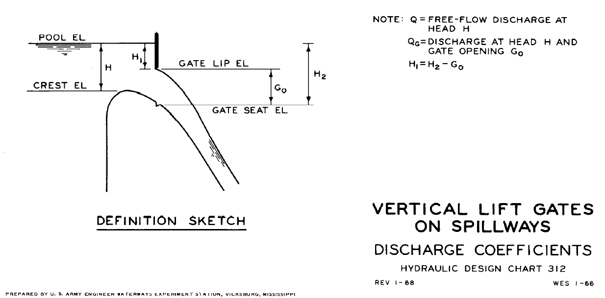
Note that by default the energy level is used for calculating H\(_1\) and \(\mathrm{\Delta}H\), however, this can be changed as follows:
- Setting the global default to water surface level, using Structure Flow Levels == WATER, or by using the “H” flag for the Type attribute (see Table 5.2).
- Setting the global default to energy at the upstream node and water level at the downstream node, using Structure Flow Levels == ENERGY UPSTREAM, or by using the “EH” flag for the Type attribute (see Table 5.2). This option was introduced in the 2023-03-AC build.
In the 1d_nwk layer, the following attributes can be used to set up a SPO channel. Note that the 1d_nwk values can be overridden by their equivalent operational control command.
- ID = Unique Channel ID.
- Type = “SPO”.
- US_Invert = Spillway crest level.
- DS_Invert = Gate seat level (see GATE SEAT EL in diagram from Sheet 312). If DS_Invert is higher than US_Invert ERROR 1050 results.
- Width_or_Dia = Width of the gate.
- Height_or_WF = The height of the gate above the gate seat when fully opened.
- Number_of = Number of (identical) parallel spillways.
The following section lists commands specific to the Define Spillway Control commands.
- Gate Speed: sets the speed the gate moves.
- Period Opening/Closing: sets the time taken to fully open a closed gate or to fully close an open gate.
- Gate Height Fully Open: sets the height (not elevation) of the gate when fully open above the gate’s seat for vertically moving gates. If not set, the 1d_nwk “Height” attribute is used.
- Gate Seat Vertical Offset: sets the difference in height between the spillway crest and the seat of the gate (i.e. the CREST EL minus GATE SEAT EL in the diagram above from Sheet 312).
- Gate Opening: sets the position the gate is to be operated towards. This can be specified incrementally or as an absolute value. This value is G\(_O\) in the diagram above from Sheet 312.
- Cd Spillway: sets the discharge coefficient of the spillway, C\(_d\). Default value is 0.75.
- Cd Gate: sets the discharge coefficient of the gate, C\(_G\). By default assumed to be the same as Cd Spillway see Sheet 312.
Models using spillways with gates are provided in the 1D Operating Structures Example Model Dataset on the TUFLOW Wiki.
5.9.7 Weirs (WBO, WCO, WDO, WOO, WRO, WTO)
Weirs can be operated to simulate structures such as fabri (inflatable) dams for the WB, WC, WD, WO, WR and WT weir types.
In addition to the 1d_nwk attributes for non-operated weirs (see Section 5.7.4.3) the following criteria is used to set the limiting dimensions via the 1d_nwk attributes as follows:
- Width_or_Dia = The width of the weir when fully open, or if the width remains unchanged throughout.
- Height_or_WF = The maximum height the weir can be raised above the weir invert during operation. The weir invert level is defined by the maximum of the US_Invert and DS_Invert attributes and represents the elevation of the weir when fully lowered. Note that for operational weirs the Height_or_WF attribute cannot be used to set the Weir Calibration Factor, for which a value of 1.0 is used. For example, if we wish to operate a weir up to an elevation of 15m for a structure with 1d_nwk attributes US_Invert = 9.9m and DS_Invert = 10m the following would apply:
- The weir invert would be at an elevation of 10m (which corresponds to a weir height of zero (0) m).
- The Height_of_WF attribute would be 5m (i.e. a height of 5m above the weir invert).
The following are the commands specific to Define Weir Control blocks for operating weirs.
- Weir Height: sets the height above the weir crest to operate towards.
- Weir Width: sets the width of the weir to operate towards.
- Weir Height Speed: sets the speed of the weir in the vertical.
- Weir Width Speed: sets the speed of the weir in the horizontal.
- The generic commands Operation and Period Opening/Closing also apply.
- Cf sets the weir calibration factor (default = 1.0). Note the “Height_or_WF” attribute is used to define the height of the operational weir above the crest level. This .toc command was added in the 2020-10 release to specify the weir calibration factor (C\(_f\)) for an operational weir.
Note the default values of Weir Height and Weir Width are both zero (0). To set the initial position of the weir, specify these commands before the if logic block in the .toc file.
The 2023-03-AB build introduced three new commands, based on Section 9.11 of USBR (1987), which includes an allowance for side or horizontal flow contraction caused by piers and abutments that contract the flow and reduces the flow width over the weir (\(W\)) to an effective flow width (\(W'\)) using:
\[ W' = W - 2(NK_{p} + K_{a})H_{e} \tag{5.21}\]
Where:
- \(H_{e}\) = Upstream energy or water level (see Structure Flow Levels command).
- \(N\) = Number of piers.
- \(K_{p}\) = Pier contraction coefficient.
- \(K_{a}\) = Abutment contraction coefficient.
The new .toc file commands to specify the parameters are:
- Number of Piers: Sets the number of piers over a weir (the default is zero, 2023-03-AB build and onwards).
- Kp: Sets the pier contraction coefficient (the default is zero, 2023-03-AB build and onwards).
- Ka: Sets the abutment contraction coefficient (the default is zero, 2023-03-AB build and onwards).
Section 9.11 of USBR (1987) recommends the following values for the pier contraction coefficient \(K_{p}\):
- Square-nosed piers with corners rounded on a radius equal to about 0.1 of the pier thickness: \(K_{p}\) = 0.02
- Round-nosed piers: \(K_{p}\) = 0.01
- Pointed-nose piers: \(K_{p}\) = 0.0
The recommended values for the abutment contraction coefficient \(K_{a}\) depends on the shape of the abutment, the design head (\(H_{0}\)) and the radius of abutment rounding:
- Square abutments with headwall at 90° to direction of flow: \(K_{a}\) = 0.20
- Rounded abutments with headwall at 90° to direction of flow, when 0.15\(H_{0}\) ≤ \(r\) ≤ 0.5\(H_{0}\): \(K_{a}\) = 0.10
- Rounded abutments where \(r\) > 0.5\(H_{0}\), and headwall is placed not more than 45° to direction of flow: \(K_{a}\) = 0.0
Note that in the relationship above, the effective flow width (\(W'\)) reduces linearly as the upstream head (\(H_{e}\)) increases. The ratio of contraction calculated by this equation is usually small relative to the actual width of weir (\(W\)). But to avoid unreasonable contraction ratios, a lower limit of 0.6\(W\) is applied.
5.9.8 Piping and Dam Failure
The 2020-10-AB build introduced two new operational channels for piping and dam failure:
- “PF” type: can be used to model the pipe failure process, as discussed in Section 5.9.8.1; and
- “DF” type: can be used to model a dam/levee break, as discussed in Section 5.9.8.2.
In the 1d_nwk layer, the attributes in Table 5.23 can be used to set up the channel parameters.
Models using piping and dam failure are provided in the Dynamic Topography Options Example Model Dataset on the TUFLOW Wiki.
| No. | Default GIS Attribute Name | Description | Type |
|---|---|---|---|
1 |
ID |
Unique identifier up to 12 characters in length. It may contain any character except for quotes and commas and cannot be blank. As a rule, spaces and special characters (e.g. |
Char(12) |
2 |
Type |
“PF”: Piping Failure “DF”: Dam Failure |
Char(4) |
3 |
Ignore |
If a “T”, “t”, “Y” or “y” is specified, the object will be ignored (T for True and Y for Yes). Any other entry, including a blank field, will treat the object as active. |
Char(1) |
4 |
UCS |
Not used. |
Char(1) |
5 |
Len_or_ANA |
Not used. |
Float |
6 |
n_nF_Cd |
Not used. |
Float |
7 |
US_Invert |
“PF”: Inlet elevation of the piping. “DF”: Elevation of the dam crest level before failure. |
Float |
8 |
DS_Invert |
“PF”: Outlet elevation of the piping. “DF”: Not Used. |
Float |
9 |
Form_Loss |
Not used. |
Float |
10 |
pBlockage |
Not used. |
Float |
11 |
Inlet_Type |
“PF”: Refers to the Piping Failure operational control definition in .toc file. “DF”: Refers to the Dam Failure operational control definition in .toc file. |
Char(256) |
12 |
Conn_1D_2D |
Not used. |
Char(4) |
13 |
Conn_No |
Not used. |
Integer |
14 |
Width_or_Dia |
“PF”: Width of the piping orifice when fully breached. “DF”: Top width of the dam failure channel. |
Float |
15 |
Height_or_WF |
“PF”: Height of the piping orifice when fully breached. “DF”: Weir coefficient C\(_d\) of the intact part. |
Float |
16 |
Number_of |
Not used. |
Integer |
17 |
HConF_or_WC |
Not used. |
Float |
18 |
WConF_or_WEx |
Not used. |
Float |
19 |
EntryC_or_WSa |
Not used. |
Float |
20 |
ExitC_or_WSb |
Not used. |
Float |
5.9.8.1 Piping Failure (PF)
Dam/levee breaks can be initiated by flow overtopping, or by internal erosion (often called “piping” or “piping failure”) when water seeps through the embankment forming a tiny flow path. This “pipe failure” process can be modelled using a “PF” type 1D operational channel. In the 1d_nwk layer, the attributes in Table 5.23 can be used to set up the channel parameters.
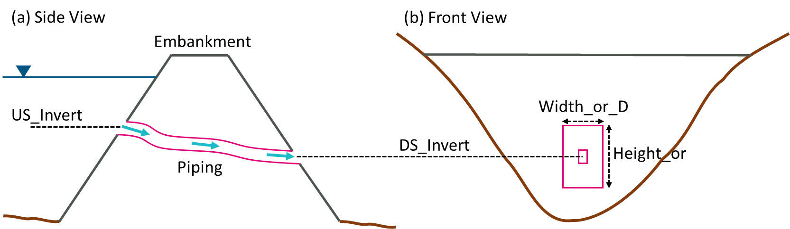
Operational control commands (.toc file) specific to the Piping Failure channel are provided below:
- Period Failure: sets the time taken to reach the full size of piping failure.
- Orifice Width Fully Open: sets the width or the diameter of the piping orifice when fully breached. If omitted, the value set by the 1d_nwk Width_or_Dia attribute is used.
- Orifice Height Fully Open: sets the height of the piping orifice when fully breached. If omitted, the value set by the 1d_nwk Height_or_WF attribute is used.
- Period Collapse: sets the time taken to ‘shut down’ the piping failure channel after it reaches the full extent due to the channel collapsing.
- Orifice Opening: sets the piping failure status.
- Cd: sets the discharge coefficient in the orifice flow equation below.
The flow rate through a piping failure channel is calculated using the orifice flow equation as provided below. Note that zero flow is assumed should the upstream water level fall below the orifice obvert, i.e. no partial flow of the orifice is assumed to occur.
\[ Q = C_{d}A\sqrt{2g\left( H_{up} - H_{down} \right)} \tag{5.22}\]
Where
- \(C_{d}\) is the discharge coefficient set by Cd command
- \(A\) is the cross-sectional area of the orifice
- \(H_{up}\) is the upstream water level
- \(H_{down}\) is the higher of the downstream obvert or downstream water level
It is assumed the orifice shape is rectangular, and the orifice size increases linearly with time. The expansion of the orifice is assumed to be centrally around the upstream and downstream inverts.
An example of a .toc file Define Pipe Failure Control block is provided below:
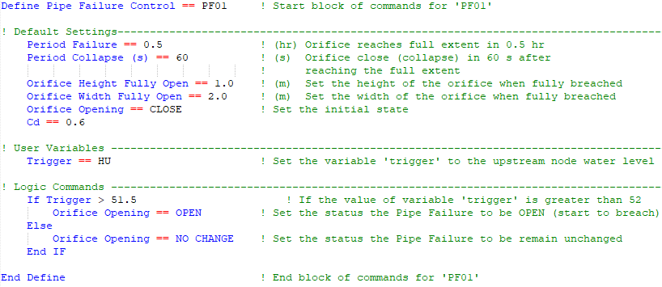
Models using the piping failure functionality are provided in the Dynamic Topography Options Example Model Dataset on the TUFLOW Wiki.
5.9.8.2 Dam Failure (DF)
The dam failure “DF” type 1D operational channel can be used to model dam/levee breaks in 1D. This channel can commence independently, or be triggered by a 1D pipe failure using “PF” type trigger. The flow rate is calculated based on the advanced weir flow equation (Section 5.7.4.3). Either a rectangular or trapezoidal cross-section can be applied, and the opening size is assumed to increase linearly with time. In the 1d_nwk layer, the attributes in Table 5.23 can be used to set up the channel parameters.
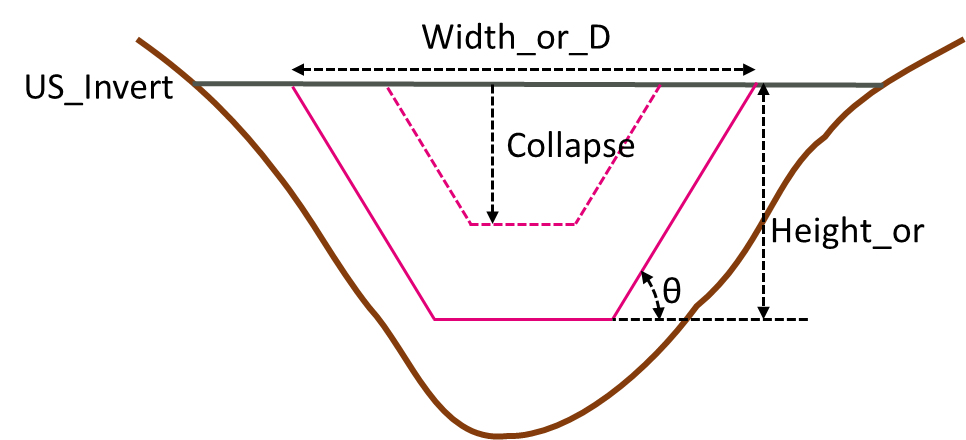
Operational control commands specific to the Dam Failure channel are provided below:
- Period Failure: sets the time taken to reach the full size of the dam failure.
- Top Width Fully Breached: Same as the “Height_or_WF” attribute.
- Depth Fully Breached: Same as the “Width_or_Dia” attribute.
- Side Slope (degree): Sets the angle of the side slopes. This is used for calculating the bottom width and flow area.
- Period Collapse: Defines the time taken to form the dam breach opening at the start of the dam break.
- Depth Collapse: defines the depth of the dam crest collapse during Period Collapse at the beginning of the dam break.
- Breach Opening: Sets the dam failure status.
During any period of the dam failure, the Side Slope is set as constant. If the bottom width calculated from the width, depth and the side slope becomes negative, a V shaped cross-section is assumed based on the width and the side slope. A DF channel can be subject to one of the following three flow phases, depending on the upstream water level and state of the breach:
Flow overtopping above the crest level can occur before the dam break. At this stage, all the water is flowing through the “Intact” section of the dam crest.
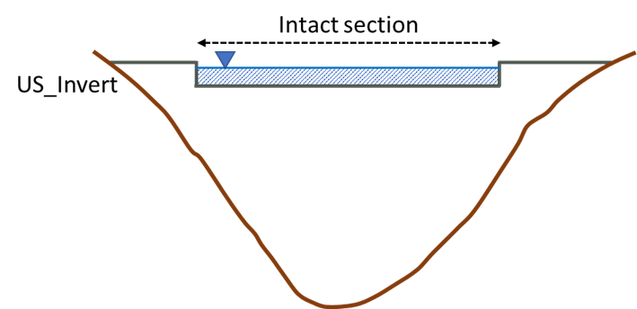
Figure 5.33 After the dam break commences, the water can flow through both the “Intact” section of the dam crest (provided the upstream water level is greater than the invert of the intact section), and the “failed” section. The total flow is reported in the .eof file and the _1d_Q.csv output file, while the flow rate for each section is reported separately in the _1d_O.csv output file.
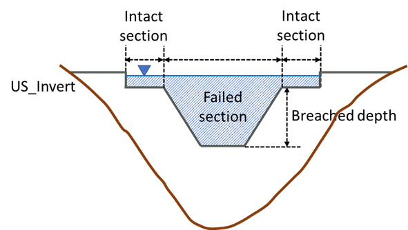
Figure 5.34 Once the maximum breach width is reached or there is no flow over any remaining intact sections, the flow is confined entirely within the “Failed” section.
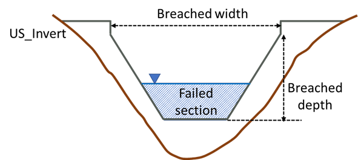
Figure 5.35
The flow calculation through a 1D dam break channel is computed for both the intact and failed sections, with the user able to set the weir flow equation parameters separately for both sections as per the table below.
| Intact Section | Failed Section | Description |
|---|---|---|
Sets the weir channel type using the flags in Table 5.15. If this command is not specified, the defaults are WB” for the Intact section and “WW” for the failed section. Note that the “Side Slope” is not considered in the cross-section calculation for non-WW type weirs.” |
||
Sets the weir coefficient, C\(_d\), in its dimensionless form. |
||
Sets the weir coefficient adjustment factor C\(_f\). |
||
Sets the weir flow equation exponent E\(_x\). |
||
Sets the submergence factor “a” exponent in the Villemonte Equation for calculating the weir submergence factor C\(_sf\). |
||
Sets the submergence factor “b” exponent in the Villemonte Equation for calculating the weir submergence factor C\(_sf\). |
An example of a Define Dam Failure Control block is provided below:
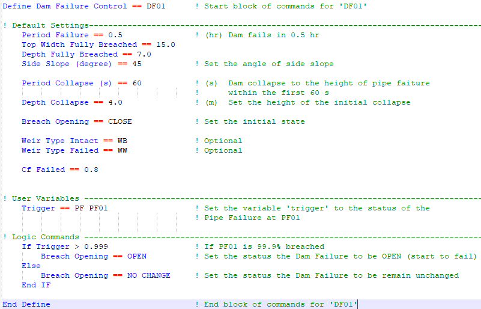
Models using the dam failure functionality are provided in the Dynamic Topography Options Example Model Dataset on the TUFLOW Wiki.
The USBR (1987) approach to include an allowance for side or horizontal flow contraction caused by piers and abutments can be optionally applied for the “Intact” part of a DF channel (see Section 5.9.7). The 2023-03-AB build introduced the following three new commands:
- Number of Piers: Sets the number of piers over the weir (the default is zero, 2023-03-AB build and onwards).
- Kp Intact: Sets the pier contraction coefficient (the default is zero, 2023-03-AB build and onwards).
- Ka Intact: Sets the abutment contraction coefficient (the default is zero, 2023-03-AB build and onwards).
5.10 Pipe Networks
Pipe networks can be modelled using two different approaches, or a combination of these approaches:
- Detailed modelling by defining the physical features of the pipe network using 1d_nwk channels to represent pipes, 1d_pit or 1d_nwk nodes to represent pits, and 1d_mh nodes to represent manholes, as discussed within this Section.
- An approximate approach termed Virtual Pipes is also available if the pipe details are unknown though inlet and outlet information is available. A Virtual Pipe network can be modelled using 1d_pit or 1d_nwk nodes to represent inlets and outlets between which flow is instantaneously transferred or exits the model (i.e. no physical routing is calculated). Virtual pipes are discussed in Section 5.11.
Complete 1D pipe networks and Virtual pipe pits can coexist in the same model. From the 2020-10 release and onwards, in TUFLOW HPC, virtual pipe outputs can connect to, and discharge into, the upstream or downstream end of a channel.
TUFLOW 1D produces a true HGL, with all losses accounted for. Different methods are available to quantify the losses at junctions and manholes, with the default setting being the Englehund approach, which automatically adjusts losses every timestep according to the expansion/contraction of flow, and changes in pipe direction, slope, inverts, etc.
Note that care should be taken in interpreting the HGL profile as the water level output currently only supports one level, which is the level in the manhole chamber (ie. after expansion losses into the chamber have been accounted for, or after a free-overfalling pipe outlet discharges into the manhole). Especially where upstream controlled flow regimes occur (eg. free outflow), the profile may appear to intersect the pipe invert profile.
5.10.1 Pipes
Culverts within a pipe network are created by digitising lines within one or more 1d_nwk GIS layers and assigning a type C, R or I (refer to Section 5.7.1). The culverts are considered linked when the channel ends are snapped to one another or they are connected by a connector (“X” channel). Connectivity between the underground pipe with the surface above is defined using pits (see Section 5.10.2). Pipe junctions are referred to as manholes in TUFLOW terminology and can occur with or without pits (see Section 5.10.4). TUFLOW includes a range of energy dissipation options at junctions. These are also discussed in Section 5.10.4.
5.10.2 Pits
Pits are used for two purposes.
- In pipe network models (Section 5.10.1), pits transfer water between the 2D domain on the surface and a 1D pipe network underground.
- In virtual pipe networks (Section 5.11), pits define inlet and outlet locations.
Pits are defined by digitising points within one or more 1d_pit or 1d_nwk layers. Of these two alternatives the 1d_pit layer is the most efficient option. It excludes superfluous attributes included in the 1d_nwk format that are required for other uses (such as 1D pipe or open channel details). Both options are described in the following sections.
The following notes apply to pits:
- For pits connected to a channel start or end (usually a pipe), either by snapping or via an “X” channel, or are within the Pit Search Distance, the pit calculations are carried out by ESTRY and it is assumed a pipe network is being modelled.
- Under this scenario TUFLOW/ESTRY will automatically create a short channel called a “pit channel” to connect the 2D domain (surface) to the underground 1D pipe network. The pit channel is computationally “zero length” and does not contribute to any storage in the system (noting that the Len_or_ANA attribute is used to specify the surface area or storage of the pit chamber).
- The pit inlet capacities curves are specified in a Pit Inlet Database (see Section 5.10.3) for “Q” type pits in Table 5.25.
- Unconnected pits (i.e. pits not snapped or connected to a channel end, or not within the Pit Search Distance of a channel end), as well as VPI and VPO pits (i.e. virtual pipe inlets and outlets), are used for virtual pipe modelling, and the following logic applies:
- The virtual pipe pit inlet capacity curves are specified in a Pit Inlet Database (see Section 5.10.3) for a “VPI” or “Q” type pit in Table 5.26.
- For Classic, all unconnected pits and VPI pits (even if snapped to or within a Pit Search Distance of an ESTRY channel) are treated as being connected to a virtual pipe. The pit’s discharge is extracted from the model on the assumption there are no backwater or surcharging effects at that pit. For example, free flow into the ocean. Note: VPO pits are not supported in Classic and will show zero flow.
- For HPC, all VPI and VPO discharges are calculated by the HPC solver as per the virtual pipe feature. VPI pits are always treated as disconnected. However, from the 2020-10 release onwards, VPO pits can discharge to the upstream or downstream end of a channel if connected via snapping, or they can remain disconnected. For all other unconnected pits, their discharges are calculated by the TUFLOW 1D solver (ESTRY) in the same manner as for Classic above.
- A CHECK 1626 message is issued for unconnected pits (excluding VPI and VPO pits), alerting the modeller to the possibility of a pit possibly being inadvertently not snapped or within the Pit Search Distance. If all the pits should be connected (excluding VPI and VPO pits), the user can specify the .ecf command Pit No 1D Connection to force an ERROR 1626 in the case of a pit not being connected by snapping or within the Pit Search Distance.
- If a pit cannot be connected to an overland 2D domain (because, for example, it does not fall on an active cell), a WARNING is issued and the pit channel will remain unconnected.
- In the various 1D output and the 1d_nwk check files, the pit channels that are snapped to a channel end are displayed as a small channel orientated in the north-south axis, not a node (point). The display length of the channel is, by default, set to 10 m, however, this can be changed using Pit Channel Offset. For pits connected using Pit Search Distance, the pit is displayed as extending from its connected node.
- Flow through unconnected pits will appear in the mass balance reporting as follows:
- Within the _MB2D.csv or _HPC.csv “As SX V In” and “Es SX V Out” SX in and out flow columns.
- For unconnected pits calculated by ESTRY the discharge exiting the model is included in the _MB1d.csv or _MB.csv “H Vol Out” column.
- For HPC VPI and VPO pits the volumes exiting or entering the model are included in the SX Volumes.
- The downstream node of an unconnected pit channel will have a boundary type “V” in the .eof file as shown below.
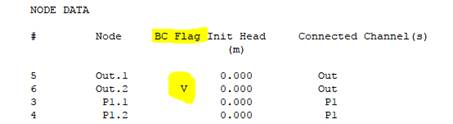
- For an unconnected pit, which must have an ID, the upstream and downstream nodes are assigned .1 and .2 extensions respectively.
- If a connected pit’s node ID is left blank the pit channel ID is given a “.P” extension based on the pit node’s automatically assigned ID (see Section 5.12). The upstream (ground) node ID of the pit channel is given the pit channel’s ID with a “.0” extension.
- Minimum NA Pit sets the minimum NA (Nodal Area) of the upstream (ground) nodes for all pit channels. This command was introduced to differentiate upstream pit channel nodes from the Minimum NA setting.
5.10.2.1 1d_nwk Pits
Pits are created by digitising points within one or more 1d_nwk GIS layers and setting the “Type” attribute to C, Q, R or W (refer to Table 5.30). Table 5.25 describes the 1d_nwk attributes required for pits defined in the 1d_nwk format.
| No. | Default GIS Attribute Name | Description | Type |
|---|---|---|---|
1 |
ID |
Unique identifier up to 12 characters in length. For pits connected to a 1d_nwk channel, either by being snapped or connected using Pit Search Distance, if ID is blank the pit channel’s ID is automatically assigned based on one of the connecting channel IDs. For pits not connected to a channel, ID cannot be blank and must be unique. ID may contain any character except for quotes and commas. As a general rule, spaces and special characters (e.g. |
Char(12) |
2 |
Type |
Used to specify a Pit Channel as one of C, Q, R or W as per Table 5.30. |
Char(4) |
3 |
Ignore |
If a “T”, “t”, “Y” or “y” is specified, the object will be ignored (T for True and Y for Yes). Any other entry, including a blank field, will treat the object as active. |
Char(1) |
4 |
UCS (Use Channel Storage at nodes). |
Not used. |
Char(1) |
5 |
Len_or_ANA |
Adds the value specified as additional nodal area (surface area in m\(^2\)). If no nodal area data exists for the node, either via the UCS attribute from the connected 1d_nwk channels, or via a NA table, TUFLOW automatically creates an NA table of constant surface area. If a negative value is specified, this value is used as a multiplier of the node storage. For example, a value of -1.5 increases the nodal storage table (NA table) by 50% (or to reduce storage use a value between -1 and 0). Increasing storage can be useful to stabilise problematic 1D nodes, provided that the added storage does not adversely distort the results. This multiplication is applied after any effect of Minimum Channel Storage Length. Minimum NA is applied after the multiplication. |
Float |
6 |
n_nF_Cd |
Not used. |
Float |
7 |
US_Invert |
Used to specify the ground elevation of the pit. This is used to set the upstream and downstream elevation of the pit channel. If set to -99999, the ground elevation is set to the ZC elevation of the 2D cell that the pit falls within, or the lowest elevation sampled if using SGS (provided there is a 2D SX connection - see Conn_1D_2D attribute below). If Conn_1D_2D is set to “SXL”, US_Invert is used as the amount by which to lower the 2D cell and the pit channel invert is set to this level. |
Float |
8 |
DS_Invert |
The bottom elevation of the pit. Can also be used to set the upstream and downstream inverts of connected channels - see discussion for US_Invert for channels above. If set to -99999, not used. |
Float |
9 |
Form_Loss |
The Form_Loss value is applied as an energy loss to all outgoing culverts (i.e. culverts that are digitised as leaving the pit/node), so the Form_Loss value should be based on the outgoing pipe velocity (e.g. the K values). Note, it may be necessary to zero or reduce the Entry_Loss and/or Exit_Loss attributes of culverts connected to the pit/node so that duplication of losses does not occur. This loss coefficient is not adjusted according to the approach and departure velocities as documented in Section 5.7.7. |
Float |
10 |
pBlockage |
The percentage blockage (%) of the pits. Reduces the flow capacity through the pit by the specified amount. |
Float |
11 |
Inlet_Type |
For Q pit channels, the name of a pit inlet type in the Pit Inlet Database (see Section 5.10.3). Otherwise not used. |
Char(256) |
12 |
Conn_1D_2D |
Used to specify a “SX” flag that automatically creates a 2D SX cell and 1D/2D connection where the 1D pit occurs. This negates the need to create SX objects in a 2d_bc layer. The following options/changes are available:
Pit Default 2D Connection can be used to set a global default value for Conn_1D_2D, and up to four characters is now accepted. “NO” can also be used to not connect the node or pit to a 2D domain. |
Char(4) |
13 |
Conn_No |
If “SX” is specified for Conn_1D_2D, can be used to control the number of 2D cells connected. See Section 5.10.2.3 for a discussion on how the 2D cells are selected.
|
Integer |
14 |
Width_or_Dia |
C, R, W Pit Type: For C pits, sets the diameter of the pit inlet cross-section in the vertical plane. For R and W pits, sets the width of the pit inlet section in the vertical plane. Q Pit Type: Used as a multiplier of the flow derived from the depth-discharge curve. For example, if Width_or_Dia equals 2, the flow is doubled. If set to zero (0), a value of 1.0 is used (i.e. the discharge curve remains unchanged). |
Float |
15 |
Height_or_WF |
Sets the height of an R pit inlet channel. Not used for other pit types. |
Float |
16 |
Number_of |
C, R, W Pit Type: Sets the number of pits (of same dimension) within the one pit channel. Q Pit Type: Used as a multiplier of the flow derived from the depth-discharge curve. For example, if Number_of equals 3, this assumes there are three pits lumped together and the flow is tripled. If set to zero (0) a value of 1 is used (i.e. a single inlet pit is assumed). Multiplies the flow only, additional storage defined by the Len_or_ANA attribute is not multiplied. Where a pit is connected to a manhole, increasing the Number_of attribute will not increase the number of manholes, or its dimensions; the pits remain connected to only one manhole. |
Integer |
17 |
HConF_or_WC |
R Pit Type: Sets the height contraction coefficient, otherwise not used for other pit types. Usually 0.6 for square edged entrances to 0.8 for rounded edges. If value exceeds 1.0 or is less than or equal to zero, it is set to 0.6. |
Float |
18 |
WConF_or_WEx |
C, R Pit Type: Sets the width contraction coefficient, otherwise not used for other pit types. Usually 0.9 for sharp edges to 1.0 for rounded edges for R culverts. Normally set to 1.0 for C pits. If value exceeds 1.0 or is less than or equal to zero, it is set to 1.0 for C and 0.9 for R pits. |
Float |
19 |
EntryC_or_WSa |
C, R Pit Type: Sets the entry loss coefficient, otherwise not used for other pit types. |
Float |
20 |
ExitC_or_WSb |
C, R Pit Type: Sets the exit loss coefficient, otherwise not used for other pit types. |
Float |
5.10.2.2 1d_pit Pits
The 1d_pit layer can be used for all types of pits in Classic and HPC, whether connected to a 1d_nwk or a virtual pipe system. Table 5.26 presents the attributes associated with 1d_pit GIS layer. The 1d_pits attribute table excludes superfluous attributes included in the 1d_nwk format that are required for other uses (e.g. pipes and open channels).
Models using 1d_pit pits are provided in the 1D Pipe Network / 2D Floodplain Modelling Example Model Dataset on the TUFLOW Wiki.
| No. | Default GIS Attribute Name | Description | Type |
|---|---|---|---|
1 |
ID |
Unique identifier up to 12 characters in length. For pits that connect to a 1d_nwk channel, either by being snapped or connected using Pit Search Distance, if ID is blank the pit channel’s ID is automatically assigned based on one of the connecting channel IDs. Note that VPI and VPO pits always require unique IDs. For any pit not connected to a channel, the ID must not be blank and must be a unique (channel) ID. While VPOs were previously treated as always disconnected from 1d_nwk channels, from Build 2020-10-AA onwards, VPOs can be connected to the upstream or downstream end of an ESTRY channel when using the HPC solver. In such cases, the ID should follow standard naming conventions for connected nodes. ID may contain any character except for quotes and commas. Generally, spaces and special characters (e.g. |
Char (12) |
2 |
Type |
“VPI” or “I” (Virtual Pipe Inlet): VPI pits are Q pits treated as being disconnected from all 1d_nwk channels (even if they are snapped to a channel). For the HPC solver VPIs can optionally be associated with a VPO (Virtual Pipe Outlet) to discharge flow back into the 2D domain. For the Classic 2D solver as of Build 2018-03-AA, all VPI pit discharges are irretrievably extracted from the 2D domain. Prior to Build 2018-03-AA a VPI pit could only be denoted as “I” and would not extract or surcharge virtual pipe flow unless there was an outlet (“O”) pit with the same VP_Network_ID. As of Build 2018-03-AA if there is no VPO pit with the same VP_Network_ID the VPI pit discharge is extracted from the 2D domain. “VPI” is the preferred notation. “VPO or”O” (Virtual Pipe Outlet): HPC 2D solver only (not used by the Classic 2D solver). Prior to Build 2020-10 AA, VPOs were treated as being disconnected from all 1d_nwk channels, even if snapped to one. From Build 2020-10 AA onwards, VPOs can now be connected to the upstream or downstream end of an ESTRY channel (for HPC including Quadtree). When connected, they can discharge into the 1D network. TUFLOW will make the connection if the VPO pit is snapped to a valid channel end and not to a location already occupied by a user defined node, another pit (including ‘Q’ type), or a manhole. Prior to Build 2018-03-AA a VPO pit could only be denoted as “O”, however, “VPO” is now the preferred notation. More than one VPO pit can exist for the same VP_Network_ID. “C”, “Q”, “R” and “W”: As of Build 2018-03-AA, the standard C, Q, R and W pits can be specified via a 1d_pit layer, and can be connected, or disconnected, to a 1d_nwk. If a C, Q, R or W pit is not connected to a 1d_nwk channel, either by snapping or using Pit Search Distance, the discharge through the pit is permanently extracted from the 2D domain. Alternatively, unconnected C, Q, R or W pits can be treated as an ERROR. For C, R and W pits, the default width, contraction and weir coefficients are used - to vary from these use a 1d_nwk layer for the pits. |
Char (4) |
3 |
VP_Network_ID |
VP_Network ID (as an integer) used to determine which outlet(s) the flow into the inlet pits discharges from (if any). Separate or independent networks should have a different network ID. VP_Network_ID should be a positive integer as some negative integer numbers are reserved for special purposes. |
(Positive) Integer |
4 |
Inlet_Type |
For a VPI or Q pit, the name of a pit inlet type in the Pit Inlet Database (see Section 5.10.2). Not used for other pits. |
Char (32) |
5 |
VP_Sur_Index |
Only used for VPI pits if using the HPC solver (not used by the Classic solver). If the total flow into the VPIs on the same VP_Network_ID exceeds the maximum outflow capacity of the VPOs of that VP_Network_ID (see Qmax below), one or more of the VPI flow rates must be modified. The surcharge index is used to determine how VPI flows are adjusted, with VPIs assigned lower index values given priority. This balancing approach applies regardless of whether VPOs discharge into the 2D domain or into a connected 1D ESTRY channel (available from Build 2020-10-AA). When the total inflow of all VPIs exceeds the total capacity of all VPOs for a VP_Network_ID, the VPI inflow with the lowest surcharge index is reduced. If this VPI’s inflow is reduced to zero, this VPI is permitted to become an outlet (i.e. surcharge) with the flow rate up to but not exceeding its maximum outflow (see QMax below). If the total inflow of all remaining VPIs exceeds the maximum outflow plus the maximum outflow of this VPI, then the VPI with the next highest surcharge index is adjusted using the same methodology. To prevent a VPI from surcharging, set QMax to zero. For example, the ground level at the VPI could be used for the surcharge index, in which case the lowest VPIs surcharge first. However, if you have reliable data for the order in which they tend to surcharge this could be used. The virtual pipe network is flow conserving, but not necessarily energy conserving. The highest VPI could be incorrectly specified with the lowest surcharge index in which case water would be flowing uphill! VPI for the Classic solver: Not used. VPO, C, Q and W: Not used. |
Float |
6 |
VP_QMax |
VPI and VPO if using the HPC solver: For VPOs, this sets the maximum flow that can discharge back into the 2D domain or into a connected 1D ESTRY channel (connection to 1D supported from Build 2020-10-AA). For VPIs, this sets the maximum surcharge capacity or flow that can return to the 2D domain. To prevent a VPI from surcharging, enter a QMax of 0.0 (zero). If the total flow capacity (sum of QMax values for VPOs on the same VP_Network_ID) of the VPOs is reached, the inflow to VPIs is restricted and/or surcharged at the VPIs using VP_Sur_Index value above. R pits: Sets the height of the pit section in the vertical plane. VPI and VPO for the Classic solver: Not used. C, Q and W: Not used. |
Float |
7 |
Width |
For C pits the diameter of the pit inlet cross-section in the vertical plane. For R and W pits, the width of the pit inlet section in the vertical plane. For Q and VPI pits the multiplier of width in Pit Inlet Database. For all pits the width is also used to determine the number of 2D cells to connect. |
Float |
8 |
Conn_2D |
Used to control the connection type. For pits this field must be blank or set to “SX”. If set to blank, is treated as a SX connection. Other options may be provided in the future. |
Char (8) |
9 |
Conn_No |
Overwrite the automatically determined number of connected 2D cells (see Width attribute above).
|
Integer |
10 |
pBlockage |
The percentage blockage (%) of the pits. Reduces the flow capacity through the pit by the specified amount. For VPI and VPO pits this feature was introduced for Build 2016-03-AB, and for C, Q, R and W pits it was introduced for Build 2018-03-AA. Prior to these builds the pBlockage attribute was reserved and not used. For VPOs, pBlockage applies regardless of whether the pit discharges to the 2D domain or into a connected 1D ESTRY channel (supported from Build 2020-10-AA onwards). |
Float |
11 |
Number_of |
Number of (same type of) pits represented by the pit channel. This optional attribute was introduced for Build 2018-03-AA. This value will also affect the width value used to determine how many 2D cells to connect to. For example, a value of 2 will double the connection width. |
Integer |
12 |
Lag_Approach |
Sets the lag approach, as described in Section 5.11:
This optional attribute was introduced for Build 2023-03-AB. |
Char (8) |
13 |
Lag_Value |
Lag value in hours. This optional attribute was introduced for Build 2023-03-AB. |
Float |
5.10.2.3 Connecting Pits and Nodes to 2D Domains
Both pits and nodes can be automatically connected to 2D domains using the 1d_nwk Conn_1D_2D attribute (see Table 5.26 and Table 5.25). If Conn_1D_2D is set to “SX”, TUFLOW automatically connects the upstream end of the pit channel or node to the 2D domain. The 2D cell must be active (Code = 1). If no active 2D cells are found a WARNING 2122 or 2123 is issued. For Classic M2D models WARNING 2037 is given if there is overlapping 2D domains and more than one 2D cell is active.
The command Pit Default 2D Connection can be used to set the global default value for the 1d_nwk Conn_1D_2D attribute.
By default TUFLOW will connect the 1D pit channel or node to one or more 2D cells at pit connections. The number of 2D cells selected is a function of the flow (connection) width of the pit inlet (including the effects of the Number_of and Width_or_Dia 1d_nwk attributes), or the total flow width of the channels connected to the node. The total width of the 2D cells selected is always more than the pit inlet width or width of channels. For example, a width of 3.6m on a 2m grid selects two cells. The advantage of selecting more than one 2D cell is to provide enhanced stability at the 1D/2D connection when the 1D flow width exceeds the 2D cell size. The number of 2D connection cells is limited to 10 per pit inlet.
The 1d_nwk Conn_No attribute can be used to change the number of 2D cells connected as follows.
- A positive value adds that number of 2D cells to the automatic number. In the example above, if Conn_No is set to 1, three (2 + 1) 2D cells are connected. The upper limit is 10 connected cells.
- If Conn_No is negative, this ignores the automatic approach and fixes the number of 2D cells connected to the absolute value of Conn_No. For example, a value of -1 would only connect the pit or node to one (1) 2D cell irrespective of the connection width.
If more than one 2D cell is being connected, there are two approaches available for how the 2D cells are selected.
- For pits, the default is the G (on Grade) option that selects the 2nd, 3rd, etc… cells by traversing to the next highest 2D cell that neighbours the 2D cell(s) already selected (this includes diagonal cells, i.e. all 8 cells around a cell are considered). These cells are also automatically lowered to the same height as the first cell so that their ZC value is at or below the pit inlet.
- For nodes, the default is the S (Sag) option that selects the 2nd, 3rd, etc… cells by traversing to the next lowest 2D cell. The ZC values of these cells are not changed as they are already at or below the node invert.
- The above approaches can be changed using the G (Grade) and S (Sag) flags for the 1d_nwk Conn_1D_2D attribute. The G approach is that adopted by default for pits and S for nodes. To override the default approach, specify G or S as appropriate. For example, if the S approach is preferred for a pit that is draining a depression, specify an S flag for the Conn_1D_2D attribute (i.e. “SXS”). Note SX must come first before an optional flag is specified.
- Note: If Defaults == PRE 2008-08 is specified, the original approach of only selecting one 2D cell is used, irrespective of the Conn_1D_2D and Conn_No values.
- If using SGS, the on Grade and Sag approaches are applied based on the minimum SGS elevations of the cells.
The conventional approach of using 2d_bc SX points or lines can still be used to connect 1D channel ends. This gives the user complete control over which 2D cells are selected and is often preferred in situations where large 1D structures are being connected to 2D cells.
5.10.3 Pit Inlet and Depth/Stage vs Discharge Databases
Pit channels can be specified as a Q Type, where flow through the pit is controlled by a depth-discharge curve defined within the Pit Inlet Database. The database is similar to the BC Database and is described below. The alternative naming convention Depth Discharge Database performs the exact same function and can be used instead of Pit Inlet Database. Only a single Depth Discharge or Pit Inlet Database should be used.
The database is a .csv file usually set up and managed in a Microsoft Excel spreadsheet. The database file sources depth-discharge curves in other .csv files that are also usually set up and managed within the same Excel spreadsheet. The TUFLOW Microsoft Excel macro can be used to export these csv files from the parent spreadsheet. It is available to download at no cost from www.tuflow.com. The format of the Pit Inlet Database is described in Table 5.27.
| Column No. | Description |
|---|---|
1 |
Contains the pit inlet type as referenced by the 1d_nwk Inlet_Type attribute (see Table 5.25). |
2 |
Contains the name of the source .csv file that contains the depth-discharge curve. |
3 |
The heading label of the column containing depth within the source .csv file. |
4 |
The heading label of the column containing flow within the source .csv file. |
5 |
The pit inlet’s nominated full flow area in m\(^2\) . Note that the flow area is only used to output a velocity for the pit channel (i.e. it does not have any influence over the hydraulic calculations). |
6 |
The pit inlet’s nominated flow width in m. The width is used for the automatic selection of 2D cells when connecting to a 2D domain (see Section 5.10.2.3) and for extending the depth discharge curve. Note: When width is set in 1d_nwk or 1d_pit layer for Q and VPI pits the width will multiply width in the Pit Inlet Database. |
Figure 5.38 shows an example of a Pit Inlet Database .csv file. For the example, if the 1d_nwk Inlet_Type attribute is set to “AB”, TUFLOW searches the Pit Inlet Database .csv’s first column (Name) until it finds “AB”, then reads the inputs from the same row. The “pit_inlet_curves.csv” file referenced in the second column (Source) is opened (Figure 5.39) and searched for data columns headed with “Depth” and “Type AB”. The numeric values for these two columns are read and applied as the depth-discharge relationship for the Q pit channel.
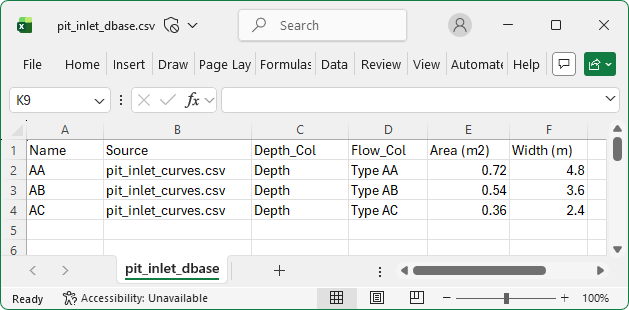
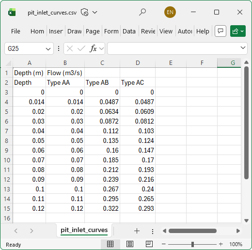
The depth-discharge curve is applied and extrapolated as follows:
- The first coordinate on the curve must be 0, 0 (i.e. zero flow at zero depth).
- The depth and flow must be in metres and m\(^3\)/s or feet and ft\(^3\)/s if using Units == US Customary.
- The depth and flow data entries should be specified as positive values.
- The depth value used to derive the discharge through the pit channel is taken as the water level in the 2D domain less the pit invert (usually the ground/2D level). If the downstream water level of the pit channel rises above the pit invert, the depth value used for deriving the pit channel flow is the difference in water level. This provides a smooth transition from upstream controlled flow to drowned flow. If the pit channel starts to be surcharged (i.e. flow is reversed), the flow is extracted from the depth-discharge curve using the downstream water level less the upstream water level (pit invert if dry) as the depth value, and is applied as a negative discharge so that flow surcharges from the pipe network onto the 2D domain.
- If required the curve is extrapolated. An “effective” flow width of the pit inlet is calculated that gives the same flow at the top of the curve as would orifice flow. The orifice flow equation is then used to extend the curve indefinitely, using the equation:
\[ Q = 0.6\frac{2}{3}y_{top}w_{\text{effective}}\ \sqrt{2g(y - 0.6\ \frac{2}{3}\ y_{top})} \tag{5.23}\]
Table 5.28 presents the different Q pit flow regimes. These are output to the .eof file next to the velocity and flow values, and to the _TSF and _TSL output layers (see Section 14.5 and Section 15.2.4).
Models using Pit Inlet Database are provided in the 1D Pipe Network / 2D Floodplain Modelling Example Model Dataset on the TUFLOW Wiki.
| Regime | Description |
|---|---|
N |
The depth-discharge point is within the bounds of the Q pit curve provided. |
O |
The depth is over (exceeds) the highest depth in the Q pit curve and the extrapolated orifice flow equation is being used. |
R |
Reverse (negative) flow is occurring. |
5.10.3.1 Road Crossfall Options
The command Pit Default Road Crossfall increases the depth at Q pits based on the crossfall slope of the road cross-section. This approach aims to account for changes in ground elevation that occur at a finer scale than the 2D cell resolution. TUFLOW calculates the water depth that is used by the Pit Inlet Database using an adjacent side triangle depth approach, instead of the actual cell flow depth. This is shown in Figure 5.40. The resulting triangle has the same area as the vertical flow area in the 2D cell the pit is connected to (i.e. the triangle’s area is the depth in the 2D cell times the width of the cell).
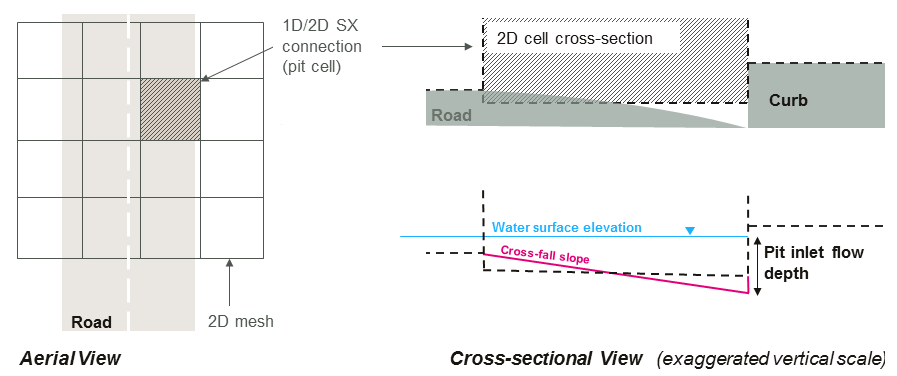
Use of this command can improve the ability to capture water from 2D cells into pits feeding the pipe network. Especially for larger cell sizes, the shallow depth that can occur in the cell can be unrepresentative of the depth at the entrance to the pit, and restricting the amount of flow entering the pit. The larger depth using an equivalent triangle will push more water into the pit providing a more realistic representation of the pit’s capture.
If using the Sub-Grid Sampling (SGS), and the underlying DEM has good representation of the road cross-profile, this feature is not needed and should not be used.
5.10.4 Manholes
Manholes are used at pipe junctions for maintenance access and where there is a change in pipe configuration and/or inlet pit flow entry. Flow energy is dissipated due to:
- Expansion/contraction of flow within the manhole chamber and outlet culverts, see Figure 5.41.
- Change in direction of the culverts (e.g. at a bend), see Figure 5.42.
- Change in height and/or invert level of the adjoining culverts, see Figure 5.43.
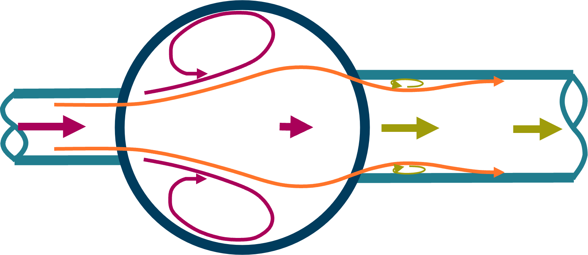
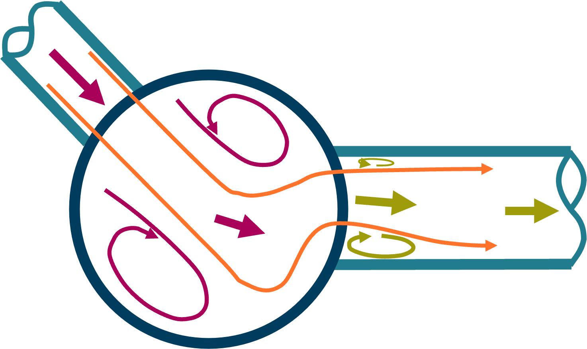
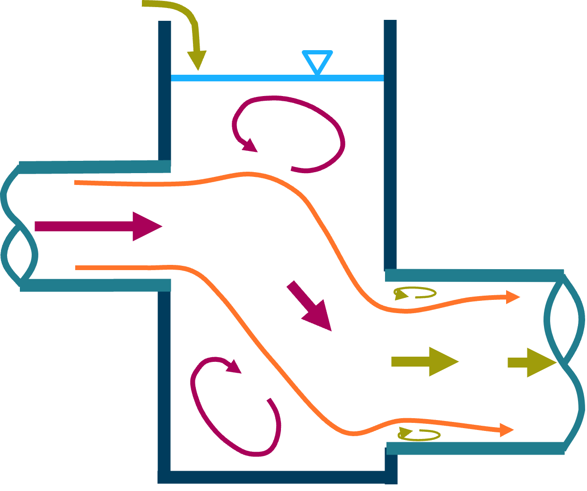
The presence of a manhole will override the exit loss of any culvert discharging into the manhole and the entrance loss of any culvert taking flow out of the manhole. The corresponding Entry_Loss and Exit_Loss attributes of the culverts in the 1d_nwk layer are not used (see Section 5.10.4.4 and the notes on these attributes in Table 5.5 for more information).
There are three different types of manholes:
- “C” for circular chambers.
- “R” for rectangular chambers.
- “J” for culvert junctions without a chamber.
And three different energy loss approaches:
- “NO” no special manhole losses (the standard entry/exit losses of the connected culverts apply).
- “EN” for the Engelund loss approach (this is the default approach).
- “FX” for the Fixed loss approach.
The manhole loss approach can be selected globally using the command, Manhole Default Loss Approach.
The manhole types, loss methods and dimensions are output in the _mhc_check file.
5.10.4.1 Automatically Assigned Manholes
By default, manholes are automatically created at all culvert junctions (nodes) where the following conditions are met.
- There is at least one incoming and one outgoing culvert – a culvert is a C, I or R channel.
- There are no open channels connected (i.e. no bridges, weirs or any other channel that is not a culvert/pipe).
- Pit channels can be connected, but are not included in any of the calculations for determining manhole energy losses. Note, however, that the connection of a pit to a manhole (or multiple pits via the Number_of 1d_nwk pits attribute) may influence the default Engelund losses indirectly via the introduction of additional flow to the pipe network.
Three different approaches to the sizing of automatic manholes and the application of losses are available through the .ecf command Manhole Approach. The current default is Method C. This is the preferred approach unless backward compatibility is required for legacy reasons. Further details on Methods A and B may be found by referring to the 2018 Manual, Release Notes of previous TUFLOW builds, or by contacting support@tuflow.com.
The type of manhole assigned is set using Manhole Default Type. If Manhole Default Type is not specified the default is to assign a C, R or J types based on the size and configuration of culverts connected to the manhole (see Manhole Default Type for more information).
The minimum diameter/width of a manhole chamber is controlled by Manhole Minimum Dimension, and the default side clearance and clearance between culverts is set using Manhole Default Side Clearance.
The default energy loss approach is controlled by Manhole Default Loss Approach.
5.10.4.2 Manually Assigned Manholes (1d_mh Layer)
Manholes are manually assigned at channel ends (nodes) using a 1d_mh layer and Read GIS Manhole. Any number of 1d_mh layers can be specified. The attributes of a 1d_mh layer are described below in Table 5.29.
A manhole in a 1d_mh layer will override any automatically created manhole. If a manually specified manhole occurs at the same location more than once, the last occurrence will prevail (i.e. the last manhole at a node will override any previously specified manholes at the same node).
To remove an automatically created manhole, digitise a point at the node in a 1d_mh layer and set the Loss_Approach to “NO” (i.e. no manhole energy losses). Note that culvert inlet/outlet losses will apply instead in accordance with Section 5.7.1.
Models using manually assigned manholes are provided in the 1D Pipe Network / 2D Floodplain Modelling Example Model Dataset on the TUFLOW Wiki.
| No. | Default GIS Attribute Name | Description | Type |
|---|---|---|---|
1 |
ID |
Unique identifier up to 12 characters in length (see ID for 1d_nwk layers). The ID is used to label the node that is created at the location of the manhole. If left blank, then the ID will be automatically assigned according to the rules for an automatically created node as discussed in Section 5.12. |
Char(12) |
2 |
Type |
“C” for circular shaped chamber. “J” for a junction, but no manhole chamber. “R” for rectangular shaped. If left blank, the global default type set by Manhole Default Type is used. |
Char(4) |
3 |
Loss_Approach |
“NO” for no manhole loss approach (the standard entry/exit losses of the connected culverts apply). “EN” for the Engelund loss approach. “FX” for the Fixed loss approach. If left blank, the global default type set by Manhole Default Loss Approach is used. |
Char(4) |
4 |
Ignore |
If set to true (i.e. “T”), the manhole is ignored and makes no contribution to the final network. Otherwise set to “F”. |
Char(1) |
5 |
Invert_Level |
The bottom or bed elevation of the manhole. This attribute is also used to set the upstream and downstream inverts of connected culverts if the culverts have not been assigned an invert. If set to -99999, not used. |
Float |
6 |
Flow_Width |
The flow width in metres of the manhole (i.e. the width of the manhole perpendicular to the dominant direction of flow). For a C manhole this would be the diameter. Used to calculate the manhole flow area and velocity through the manhole. |
Float |
7 |
Flow_Length |
The flow length in metres of the manhole (i.e. the length of the manhole in the dominant direction of flow). For a C manhole this attribute is not used and the diameter (Flow_Width attribute) is used. Only used to calculate the storage of the node at the manhole. |
Float |
8 |
ANA |
Additional storage surface area in m\(^2\) for the node at the manhole. Usually set to zero. |
Float |
9 |
K_fixed |
Fixed component of the calculated manhole loss coefficient. If using the Fixed approach, this is the only coefficient applied. |
Float |
10 |
Km |
Manhole exit coefficient used by the Engelund approach. If set to zero (0), for C manholes the Manhole Default C Exit Coefficient is applied, and for R manholes Manhole Default R Exit Coefficient is used. |
Float |
11 |
K_Bend_Max |
The upper limit of the combination of \(K_\theta\) and \(K_{drop}\) in the Engelund approach. If set to zero (0), Manhole K Maximum Bend/Drop is applied. |
Float |
12 |
C_reserved |
Reserved for future use - leave blank. |
Char(12) |
13 |
N1_reserved |
Reserved for future use - leave as zero (0). |
Float |
14 |
N2_reserved |
Reserved for future use - leave as zero (0). |
Float |
15 |
N3_reserved |
Reserved for future use - leave as zero (0). |
Float |
5.10.4.3 Digitising Culverts Connected to Manholes
During the simulation, a culvert is determined to be an inlet or outlet culvert based on the flow direction, not the digitised direction of the 1d_nwk object. If reverse flow occurs this is taken into account in determining the appropriate loss coefficients. However, the pre-processing of the model assumes that the culverts have been digitised in the predominant direction of flow. A variety of checks are made such as whether both an inlet and an outlet culvert are connected to a manhole, and ERRORs or WARNINGs and CHECKs are issued if there is an incompatibility. It is strongly recommended that the culverts are digitised consistently in the downstream direction (i.e. from upstream to downstream).
5.10.4.4 Engelund Manhole Loss Approach
The Engelund energy loss approach at manholes is based on the work of F.A. Engelund, and used by the MOUSE software (DHI, 2009). The adopted approach has been further enhanced through advice from, and discussions with, staff from Technical Services Branch of the Gold Coast City Council, Queensland, Australia. This is the default manhole loss approach.
The Engelund approach provides an automatic method for determining the energy loss coefficients presented below. Of note is that the coefficients are recalculated every timestep, and vary depending on the flow distribution between inlet and outlet culverts and the depth of water within the manhole. The calculated values are output to the _TSL layer so they can be reviewed/checked over time.
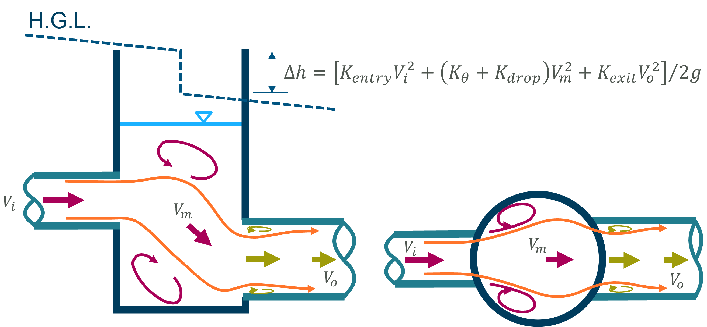
- \(K_{entry}\) covers the expansion of flow within the manhole at the outlet of an inlet culvert. The coefficient overrides the exit loss of the inlet culvert. Its time varying value is shown as the third value for inlet culvert in the _TSL output layer.
- \(K_\theta\) represents the losses due to a change in direction (i.e. a bend) between inlet and outlet culverts. \(K_\theta\) is based on the angle of the digitised lines of the culverts. For the inlet culvert the last two vertices of the line are used and for the outlet culvert the first two vertices. If the culvert line is digitised so that it has an unrepresentative first/last segment angle (this may occur where two parallel culverts have been digitised apart to make it easier to visualise), a 1d_nwk connector (X Type) can be used to connect the start/end of the culvert to the node, so that the first/last segment is a correct representation of the culvert angle relative to the other culverts. Refer to Section 5.8.3 for further information.
- \(K_{drop}\) is the loss coefficient due to a change in invert level and culvert height between inlet and outlet culverts.
- \(K_\theta\) and \(K_{drop}\) are added and applied as an energy loss for each outlet culvert. The calculated value is reported as the middle value for outlet culverts in the _TSL output layer. Any Form_Loss value assigned to the outlet culvert via the 1d_nwk layer is also applied and will also be included in the _TSL middle value.
- \(K_{exit}\) covers the contraction from the manhole and re-expansion of flow within the entrance of an outlet culvert. It overrides the entrance loss of the outlet culvert and is the first value for outlet culverts in the _TSL output layer.
- \(K_m\) is the manhole exit coefficient used to calculate \(K_{exit}\). The default value for \(K_m\) is dependent on whether the manhole is of a C or R type, and is set using Manhole Default C Exit Coefficient or Manhole Default R Exit Coefficient.
The equations used for the Engelund loss approach are provided below.
\[ V_m = \frac{Q_{om}}{A_m} \tag{5.24}\]
\[ Q_f = min\left( \frac{Q_{p}}{Q_{om}},1.0 \right) \tag{5.25}\]
\[ {A^{'}}_{m} = \frac{W_{m}y_{m}Q_{om}}{Q_{im}} \tag{5.26}\]
\[ K_{entry} = \left\lbrack 1 - min\left( \frac{V_{m}}{V_{p}},1 \right) \right\rbrack^{2} \:\:\: \text{(applied as an exit loss on the inlet culvert)} \tag{5.27}\]
\[ K_{\theta} = \sum_{inletpipes}^{}\left\lbrack Q_{f}\min\left( \frac{\theta^{2}}{90^{2}},\ 4\right)\right\rbrack \tag{5.28}\]
\[ K_{drop} = \sum_{inletpipes}^{}\left\lbrack \min\left( \max\left( \frac{Q_{f}(h_{o} - h_{i})(h_{o} + y_{o} - h_{i} - y_{i})}{y_{o}y_{i}},0 \right),2 \right) \right\rbrack \tag{5.29}\]
\[ K_{exit} = K_{m}\left[ 1 - min\left( \frac{A_{p}}{{A^{'}}_{m}},1 \right) \right] \:\:\: \text{(applied as inlet loss on the outlet culvert)} \tag{5.30}\]
\[ K_{outlet\ pipe} = \min\left( K_{\theta} + K_{drop},K_{Bend\_Max} \right) + K_{b} + K_{f} \:\:\: \text{(applied as loss using outlet culvert velocity)} \tag{5.31}\]
Where:
- \(Q_{p}\) = Flow in culvert
- \(Q_{im}\) = Total flow in to manhole
- \(Q_{om}\) = Total flow out of manhole
- \(y_{i}\) = Height of inlet culvert
- \(y_{o}\) = Height of outlet culvert
- \(h_{i}\) = Inlet culvert invert
- \(h_{o}\) = Outlet culvert invert
- \(\theta\) = Angle in degrees of inlet culvert relative to outlet culvert
- (\(\theta = 0{^\circ}\) when the culverts are in line, \(\theta = 90{^\circ}\) when the outlet culvert is at right angles)
- \(Q_{p}\) = Flow in outlet culvert
- \(W_{m}\) = Flow width in manhole = 1d_mh width attribute
- \(y_{m}\) = Depth of water in manhole
- \(A_{m}\) = Flow area in manhole
- \(A_{m}^{'}\) = Effective flow area in manhole
- \(A_{p}\) = Flow area of culvert
- \(K_{m}\) = Km 1d_mh attribute
- \(K_{b}\) = Bend loss coefficient (1d_nwk Form_Loss attribute)
- \(K_{f}\) = Fixed loss (1d_mh K_Fixed attribute)
- \(K_{Bend\_ Max}\) = Upper limit to sum of \(K_{\theta}\) and \(K_{drop}\) (1d_mh K_Bend_Max attribute)
5.10.4.5 Fixed Manhole Loss Approach
The Fixed loss approach applies the 1d_mh K_fixed coefficient as an energy loss on the outlet culvert(s). This is in accordance with publications that quote K values for different manholes based on the velocity in the outlet culvert.
The energy loss is applied as an inlet loss to the outlet culvert if K_fixed is 0.5 or less. If K_fixed exceeds 0.5, 0.5 is applied as an inlet loss, and the remainder is applied as a form or bend loss. The inlet loss component is shown as the first value in the _TSL output layer, and any remainder as the second (middle) value. Any Form_Loss value assigned to the outlet culvert via the 1d_nwk layer is also applied and will be included in the _TSL middle value.
By default, K_fixed is set to zero. To assign a K_fixed value to any manhole using the Fixed loss approach will require using a 1d_mh layer.
Note that K_fixed is also used by the Engelund loss approach as an additional (calibration) energy loss if required.
5.10.4.6 Discussion on Approaches to Modelling Pipe Junction Losses
The approach taken to modelling junctions and manhole losses affects the pipe network’s energy losses and overland flood levels, especially if a large proportion of the flow is within the pipe network. As a general guide, the following approaches available in TUFLOW will produce the following outcomes:
- Ideal Scenario: If you are fortunate to have the details and budget to include manholes using 1d_mh layers, this will produce the most reliable results. Either the Engelund approach or application of fixed losses based on guidance within the literature, or a combination of these, is recommended. However, in the absence of manhole details, one of the following approaches, or a combination, needs to be adopted.
- Least Conservative (flatter hydraulic grade lines along pipes with lower flood levels overall): No manholes (Manholes at All Culvert Junctions is set to “OFF” and no 1d_mh layers are specified) and adjustment of structure losses (the default) applies. In this case there will be minor losses at pipe junctions, because the Structure Losses by default will adjust the entrance and exit losses at pipe connections down according to the approach/departure velocities (see equations in Section 5.7.7). As the velocities are usually similar from one pipe to the next the entrance and exit losses are reduced downwards, often close to zero (as would be expected for a junction of two pipes with no manhole, no change in direction and no change in invert level).
- Middle Ground: Automatically create and size manholes and apply the Engelund approach (the default setting). The automatic creation of manholes may be slightly conservative as a manhole (including junctions) is created at every closed node (a closed node occurs where only culverts/pipes and pits are connected). If there are many short pipes in the network an excess of manholes may result in causing greater energy losses. However, if single very long culvert channels are used to represent lengths of same sized pipes, any manholes along the long pipes will not be modelled and losses will be underestimated. In this case it is generally good practice to split the long culvert channels into several channels (this will also produce an improved hydraulic grade line along the pipe).
- Most Conservative (steeper hydraulic grade lines along pipes with higher flood levels overall): No manholes (Manholes at All Culvert Junctions set to “OFF” and no 1d_mh layers specified); fixed structure losses on all culverts (Structure Losses set to “FIX” is specified or 1d_nwk “F” flag is used); and the entrance and exit loss coefficients are not adjusted. For example if 0.5 and 1.0 are used, this will apply the full (e.g. 0.5 and 1.0) entrance and exit loss coefficients at the pipe junctions. It typically produces the greatest energy losses along pipe networks, and produces higher flood levels in upper areas.
5.11 Virtual Pipes
Virtual pipes can be used to simulate flows in drainage networks without full linking to a 1D model network. A depth flow relationship is applied at inlet locations and the flow is instantaneously transferred to the outlet location or out of the model (eg. to the ocean). No pipe details are entered, all model inputs are defined using points defining the pit locations (refer to Section 5.10.2) and references to depth flow curves:
- The inlet depth discharge capacity curves are specified in a Pit Inlet Database (see Section 5.10.3) as per a “VPI” or “Q” type pit in Table 5.26.
- Using virtual pipes, the flows at the inlet and outlet can be limited. If the outlet becomes limited, the inlet capacity is reduced and pits can surcharge. The order in which pits are limited / surcharge is discussed in Section 5.10.2.2.
- The flows and water levels for each inlet and outlet are output to .csv files and _TS GIS layers. Note that the downstream pit level is not known nor is needed for the calculations as the pit is always assumed to have no downstream influence, and the downstream levels are output as 10m below the upstream level.
Virtual Pipes were introduced to TUFLOW Classic and HPC in the 2018-03-AA release. Prior to build 2018-03-AA virtual pipes were only available in TUFLOW HPC / GPU.
From the 2020-10 release and onwards, in TUFLOW HPC, virtual pipe outputs can connect to, and discharge into, the upstream or downstream end of a channel.
From build 2023-03-AB or later it is possible to lag virtual pipe flows from the inlet to the outlet. Two additional attributes are required, and these are output in empty files written with the 2023-03-AB or later build of TUFLOW. These additional 1d_pit attributes are described in Table 5.26. These data are input on the inlets (VPI).
Two approaches are available for lagging flows, these are “Shift” and “Decay”. For the shift method, the outflow is lagged (shifted) by the lag value time, but is otherwise unchanged.
The decay method is based on exponential filtering of the inflow. A “current internal volume” is tracked:
\[ Q(T) = \int_{0}^{T} [\dot{Q}_{in}\,(t)-\dot{Q}_{out}\,(t)]dt \tag{5.32}\]
The outflow rate is computed from the internal volume and the time constant (the Lag_Value attribute):
\[ \dot{Q}_{out}\,(t) = \frac{Q(t)}{Lag\_Value} \tag{5.33}\]
Figure 5.46 below shows the lag approaches applied with a lag value of 60 seconds which is input as 0.0167 hours. All pits with the same VP Network ID (i.e. form a local network) must use the same approach and Lag_Value.
Models using virtual pipes are provided in the 1D Pipe Network / 2D Floodplain Modelling Example Model Dataset on the TUFLOW Wiki.
5.12 Nodes
Nodes must be defined (either automatically or manually) at the ends of channel elements. They provide storage information, and the 1D water level (the mass balance equation) is calculated at the nodes. Nodes are created in several ways:
- Automatically, at channel ends (Section 5.12.1).
- Manually, as digitised points in a 1d_nd or 1d_nwk layer (Section 5.12.2).
- From a pit in a 1d_pit or 1d_nwk layer (Section 5.10.2).
- From a manhole in a 1d_mh layer (Section 5.10.4).
The use of the term “node” in this manual refers to both manually digitised nodes and nodes that are automatically created at the ends of channels where no digitised nodes exist.
Table 5.30 below lists the available node types.
| Channel/Node | Type | Description |
|---|---|---|
Node |
Node (or leave blank) |
Used for manually assigning nodal storage or invert levels. |
Circular Culvert |
C |
Circular (in the vertical) pit channel inlet (see Section 5.10.2.2). |
Depth-Discharge Pit or Channel |
Q |
A pit channel whose flow is defined by a depth-discharge curve from a database of curves (see Table 5.27). |
Rectangular Culvert |
R |
A rectangular (in the vertical) pit channel inlet (see Section 5.10.2.2). |
Weir |
W |
A weir (in the vertical) pit channel inlet (see Section 5.10.2.2). |
Storage at a node is defined either:
- automatically via:
- the widths and lengths of the connected channels (see Section 5.12.1);
- manually via:
- a user defined storage table of elevation versus surface area (NA tables – see Section 5.12.2.1); or
- a manually defined Node type 1d_nd or 1d_nwk point objects (see Section 5.12.2).
- a combination of the above using the Len_or_ANA attribute to add additional storage to the automatic storage.
All nodes must have their storage defined by one of these approaches.
Note that checks are also made for the following.
- The lowest elevation of a node must be below the lowest channel connected to the node.
- The highest elevation of a node is used to detect instabilities. The highest elevation should be above the highest expected water level, unless Depth Limit Factor is used to extend storage properties above the highest elevation.
- The storage (surface area) of a node must not be zero at any level.
It is important to note the logic in assigning node storage:
- User defined NA tables take precedence (see Section 5.12.2.1). The overwrite principle applies, so that if a NA table has been previously defined, the latter NA table prevails.
- Nodes without any NA tables assigned as for Step 1 above, and which have one or more connected channels that have the UCS attribute left blank or set to “Y” or “T”, have their NA table automatically calculated from the channel widths (see Section 5.12.1.1).
- The Len_or_ANA attribute of a node (or pit) in a 1d_nwk layer can be used to add additional surface area to the NA table. If no NA table exists after the above steps, and the Len_or_ANA attribute is greater than zero, a NA table of constant surface area is created.
- If there are any nodes remaining without a NA table, an ERROR occurs.
5.12.1 Automatically Defined Nodes
If a node has not been digitised at the end of a channel a new node is automatically created. The ID of the automatic node is the first ten characters of the Channel ID with a “.1” or “.2” extension. “.1” is used if the node is at the start of the channel and “.2” if at the end in the direction digitised. If more than one channel is connected to the created node, the Channel ID that occurs first alphanumerically is used. The automatic creation of nodes can be switched off using Create Nodes. If automatic creation of Nodes is turned off, a manually defined node must be specified at the ends of each channel in the model.
The automatic node approach is used in TUFLOW Tutorial Module 5.
The nodal storage for the automatically created nodes consists of 3 parts:
- Storage calculated from channel/pipe widths;
- Storage added from the len_or_ANA attribute of the connected pits/nodes/manholes; and
- Storage above the top of channels (Section 5.12.3).
5.12.1.1 Storage Calculated Automatically from Channel Widths
The channel storage is, by default, automatically assigned to the nodes at the channel’s ends. The channel storage approach is invoked using the 1d_nwk UCS attribute, see Table 5.19. If the attribute is left blank or set to “Y” (yes) or “T” (true), the channel storage is assigned to the two nodes at the channel’s ends, with the storage split equally between the nodes. For each node the surface area at different elevations is calculated as the product of the channel width by half the channel length. The channel slope is taken into account when distributing the storage. This approach applies for both 1D open channel networks and 1D pipe networks.
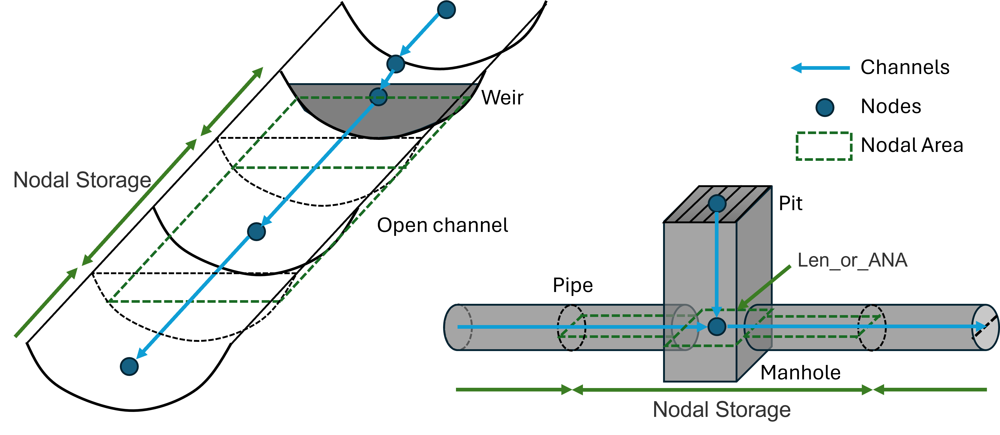
This approach does not require any specification of a NA table and is the easiest to implement. It is suited to open channel or pipe network nodes where the storage is accurately defined using the channel widths. For example, nodes connecting channels that model the in-bank flow paths of a river. It may not be suited to, for example, floodplain areas where the storage may differ significantly from that calculated using the widths of the floodplain channels.
Care should be taken using this option for G or S channels that have very steep slopes – check that the resulting calculated NA table in the .eof file is satisfactory.
Some structures such as pits, weirs, gates and etc., are treated as ‘zero-length’ channel. These channels do not add storage to the connected nodes, unless a non-zero ‘Len_or_ANA’ value is specified (See Section 5.12.1.2).
Nodal storage is not automatically calculated based on the channel width and length if the 1d_nwk UCS attribute is set to “N” (no) or “F” (false). This would require manual specification of an NA table (see Section 5.12.2.1).
5.12.1.2 Additional Storage Added from Len_or_ANA Attribute
The Len_or_ANA attribute can be used to add extra storage to the connected nodes. For example, the Len_or_ANA attribute of a 1D_nwk pit layer can be used to specify the additional nodal storage of a manhole chamber. Similarly, the Len_or_ANA attribute of a 1D_nwk weir layer can be used to set the additional nodal storages of a broad crest weir. This extra storage may also be useful for stabilising a 1D node provided relatively negligible additional amounts of storage are added. Below is the summary of 1D layers that support the Len_or_ANA attribute:
- 1D_nwk pit or node layer;
- 1d_nd and 1d_mh layer;
- 1d_nwk weir, gate, spillway and etc.; and
- 1d_bg layer.
Please see the attribute table of each layer for more details.
Note that a minimum storage area of 1m\(^2\) applies to all nodes (except for the upstream (ground) nodes of pit channels) for simulation stability. If any ‘Len_or_ANA’ value is less than 1m\(^2\) it might not be reflected in the NA table. This minimum value can be adjusted using the Minimum NA and the Minimum NA Pit commands.
If using imperial units (Units == US Customary), the minimum storage area would be 1m\(^2\) converted to ft\(^2\): approx 10.76386736ft\(^2\).
5.12.2 Manually Defined Nodes
Table 5.31 lists the attributes required for manually created nodes in the 1d_nwk layer format, used with the Read GIS Network command. Table 5.32 lists the attributes required for manually created nodes in the 1d_nd format with the Read GIS Node command - essentially an updated, cutdown version of the 1d_nwk format that removes unnecessary input fields. Both formats remain supported.
These attribute descriptions are for basic “Node” type 1d_nwk point objects. These may be used for assigning storage and invert levels to channels. They can also be used to automatically link 1D nodes to the 2D domains (without the need to digitise objects within a 2d_bc layer). The 1D/2D link functionality is discussed in detail within Section 10.3.3.
If an ID is specified it must be unique amongst all nodes, and up to 12 characters in length. It may contain any character except for quotes and commas. As a rule, spaces and special characters (e.g. “\”), should be avoided although they are accepted. A node ID can be used for a channel (i.e. a channel and node can have the same ID), but not for another node. The Ignore attribute can be used to ignore a node. It is recommended for the 1d_nwk Type attribute that “Node” is entered to easily distinguish nodes from channels when querying objects in the GIS, or alternatively place the nodes and pits in separate 1d_nwk layers.
This section does not provide information on pit type nodes (C, Q, R or W) that also use the 1d_nwk file format. Refer to Section 5.10.2 for information about pit type nodes.
| No. | Default GIS Attribute Name | Description | Type |
|---|---|---|---|
1 |
ID |
Unique identifier up to 12 characters in length. It may contain any character except for quotes and commas and cannot be blank. As a rule, spaces and special characters (e.g. Digitised nodes can have their ID left blank and TUFLOW will assign an ID. |
Char(12) |
2 |
Type |
Leaving this attribute blank or specifying “Node” will define the point feature as a Node type. “Node” is recommended for easy identification. |
Char(4) |
3 |
Ignore |
If a “T”, “t”, “Y” or “y” is specified, the object will be ignored (T for True and Y for Yes). Any other entry, including a blank field, will treat the object as active. |
Char(1) |
4 |
UCS |
Not used. |
Char(1) |
5 |
Len_or_ANA |
Adds the value specified as additional nodal area (surface area in m\(^2\)). If no nodal area data exists for the node, either via the UCS attribute from the connected 1d_nwk channels, or via NA table, TUFLOW automatically creates an NA table of constant surface area set to this value with an elevation range based on the US_Invert and DS_Invert values. If a negative value is specified, the absolute of this value is used as a multiplier of the node storage. For example, a value of -1.5 increases the nodal storage table (NA table) by 50% (or to reduce storage use a value between -1 and 0). Increasing storage can be useful to stabilise problematic 1D nodes, provided that the added storage does not adversely distort the results. This multiplication is applied after any effect of Minimum Channel Storage Length. Minimum NA is applied after the multiplication. |
Float |
6 |
n_nF_Cd |
Not used. |
Float |
7 |
US_Invert |
If no NA table exists and Len_or_ANA is greater than zero, used to set the upper elevation of the NA table. Note that in this case if US_Invert is less than DS_Invert, US_Invert is set to the DS_Invert plus 5 metres. |
Float |
8 |
DS_Invert |
If no NA table exists and Len_or_ANA is greater than zero, used to set the bottom elevation of the NA table (see Section 5.12.2.3). Also used to set the upstream and downstream inverts of connected open channels, culverts/pipes and other channel types - as an example see discussion for US_Invert in Table 5.3. Also see Section 5.12.2.2. If set to -99999, not used. |
Float |
9 |
Form_Loss |
Not used. |
Float |
10 |
pBlockage |
Not used. |
Float |
11 |
Inlet_Type |
Not used. |
Char(256) |
12 |
Conn_1D_2D |
Used to specify a “SX” or “SXZ” flag that automatically creates a 2D SX cell and connection at the 2D cell within which the 1D node occurs. This negates the need to create SX objects in a 2d_bc layer (see Flags attribute in Table 8.6). Notes:
|
Char(4) |
13 |
Conn_No |
If “SX” is specified for Conn_1D_2D, can be used to control the number of 2D cells connected. See Section 5.10.2.3 for a discussion on how the 2D cells are selected. The number of 2D cells connected can be controlled by using:
Note that if a culvert with more than one barrel is connected to the node, the number of barrels is used to set the width, which controls the number of automatically selected SX cells. |
Integer |
14 |
Width_or_Dia |
If “SX” is specified for Conn_1D_2D, can be used to control the number of 2D cells connected. For example, if a width of 3.6m is entered on a 2m grid, two boundary cells are automatically created and connected. |
Float |
15 |
Height_or_WF |
Not used. |
Float |
16 |
Number_of |
Not used. |
Integer |
17 |
HConF_or_WC |
Not used. |
Float |
18 |
WConF_or_WEx |
Not used. |
Float |
19 |
EntryC_or_WSa |
Not used. |
Float |
20 |
ExitC_or_WSb |
Not used. |
Float |
| No. | Default GIS Attribute Name | Description | Type |
|---|---|---|---|
1 |
ID |
Unique identifier up to 12 characters in length. It may contain any character except for quotes and commas and cannot be blank. As a rule, spaces and special characters (e.g. Digitised nodes can have their ID left blank and TUFLOW will assign an ID. |
Char(12) |
2 |
Type |
Not used for Nodes although it can be recommended to type in “Node” for easy identification. |
Char(4) |
3 |
Ignore |
If a “T”, “t”, “Y” or “y” is specified, the object will be ignored (T for True and Y for Yes). Any other entry, including a blank field, will treat the object as active. |
Char(1) |
4 |
Bed_Level |
If no NA table exists and Len_or_ANA is greater than zero, used to set the bottom elevation of the NA table (see Section 5.12.2.3). Also used to set the upstream and downstream inverts of connected open channels, culverts/pipes and other channel types - as an example see discussion for US_Invert in Table 5.3. Also see Section 5.12.2.2. If set to -99999, not used. |
Float |
5 |
ANA |
Adds the value specified as additional nodal area (surface area in m\(^2\)). If no nodal area data exists for the node TUFLOW automatically creates an NA table of constant surface area using this value. If a negative value is specified, the absolute of this value is used as a multiplier of the node storage. For example, a value of 1.5 increases the nodal storage table (NA table) by 50% (or to reduce storage use a value between -1 and 0). Increasing storage can be useful to stabilise problematic 1D nodes, provided that the added storage does not adversely distort the results. This multiplication is applied after any effect of Minimum Channel Storage Length. Minimum NA is applied after the multiplication. |
Float |
6 |
Conn_1D_2D |
Used to specify a “SX” or “SXZ” flag that automatically creates a 2D SX cell and connection at the 2D cell within which the 1D node occurs. This negates the need to create SX objects in a 2d_bc layer (see Flags attribute in Table 8.6). Notes:
|
Char(4) |
7 |
Conn_Width |
If “SX” is specified for Conn_1D_2D, can be used to control the number of 2D cells connected as follows. See Section 5.10.2.3 for a discussion on how the 2D cells are selected. The number of 2D cells connected can be controlled by using:
Note that if a culvert with more than one barrel is connected to the node, the number of barrels is used to set the width, which controls the number of automatically selected SX cells. |
Float |
8 |
R1 |
Reserved for future use |
Float |
9 |
R2 |
Reserved for future use |
Float |
10 |
R3 |
Reserved for future use |
Float |
5.12.2.1 Storage Nodes (User Defined NA Tables)
Storage at an existing node can be manually defined using an elevation versus surface area table (NA table – NA stands for Nodal surface Area). This provides the opportunity to accurately define the storage of the floodplain including any backwater areas that do not act as flow paths.
The NA table must be in a comma delimited file (.csv). By default, unique NA table csv files should be defined for each individual location where desired. Within the NA table csv file the first column lists the elevation information in m (or ft, if using Units == US Customary) and the second column lists the corresponding surface area in m\(^2\) (or ft\(^2\), if using Units == US Customary). TUFLOW uses these inputs to define storage volume variation with height.
The NA table is associated with a spatial location with the model via a 1d_na layer using the ECF command Read GIS Table Links. Similar to the other table link GIS layers (1d_xs and 1d_bg), 1d_na GIS layers and .csv files are often stored in a separate folder underneath the model folder (i.e. same level as the gis folder):
- 1d_na for nodal surface area tables in TUFLOW\model\na
- 1d_xs for cross-section tables in TUFLOW\model\xs
- 1d_bg for bridge loss tables in TUFLOW\model\bg
Unlike the other table link GIS layers (1d_xs and 1d_bg) the 1d_na layer must be digitised as a point, not a line. Table 5.33 presents the attributes of a 1d_na GIS layer.
1d_na point objects do not create a 1d_nwk node, but they do assign additional storage where nodes already exist. As such, 1d_na point objects must be snapped to a 1d_nwk node point object, or the end of a channel (where automatic nodes are created).
Minimum NA is useful for stabilising 1D nodes that have small surface areas, particularly at shallow depths or when wetting and drying. The Minimum NA value is not applied to automatically created NA tables for any node with a 1d_nwk Length_or_ANA value that is greater than 0.001m\(^2\), provided there is no NA table that has been manually specified or created from channel storages. See also Minimum NA Pit.
If using imperial units (Units == US Customary), the minimum storage area would be 0.001ft\(^2\).
Minimum Channel Storage Length can be useful to add additional storage for stability reasons to nodes at the ends of very short channels.
A working example of a model containing storage nodes is provided in the 1D Pipe Network / 2D Floodplain Modelling Example Model Dataset on the TUFLOW Wiki.
| No. | Default GIS Attribute Name | Description | Type |
|---|---|---|---|
1 |
Source |
Filename (and path if needed) of the file containing the tabular data. Must be a comma or space delimited text file such as a .csv file. |
Char(50) |
2 |
Type |
“NA”: Nodal surface area versus height table. The first column is elevation and the second surface area in m\(^2\). |
Char(2) |
3 |
Flags |
No optional flags available |
Char(8) |
4 |
Column_1 |
Optional. Identifies a label in the Source file that is the header for the first column of data. Values are read from the first number encountered below the label until a non-number value, blank line or end of the file is encountered. If this field is left blank, the first column of data in the Source file is used. |
Char(20) |
5 |
Column_2 |
Optional. Identifies a label in the Source file that is in the header for the second column of data. If this field is left blank, the next column of data after Column_1 is used. |
Char(20) |
6 |
Column_3 |
Not used. |
Char(20) |
7 |
Column_4 |
Not used. |
Char(20) |
8 |
Column_5 |
Not used. |
Char(20) |
9 |
Column_6 |
Not used. |
Char(20) |
10 |
Z_Increment |
Not used. |
Float |
11 |
Z_Maximum |
Not used. |
Float |
12 |
Skew (in degrees) |
Not used. |
Float |
5.12.2.2 Using Nodes to Define Channel Inverts
1D nodes can be used to set the inverts of connected channels. Channel inverts are sourced from either, end cross-sections (see Section 5.6.6) or nodes if an upstream or downstream channel invert of -99999 is specified within the 1d_nwk file.
For this option, the basic “Node” type point objects (see Table 5.31 and Table 5.32) can be used to set the upstream and downstream inverts of any connected channels via the “DS_Invert” attribute in the 1d_nwk format, or “Bed_Level” attribute in the 1d_nd format. If both nodes and cross-sections are specified the cross-section is given higher priority (refer to Section 5.6.5). This feature is useful during pipe network modelling, where cross-sections are not required (the shape is defined by the culvert type). The downstream inverts (of incoming channels) and upstream invert (of outgoing channels) will be set to the node elevation. In order to model different incoming and outgoing inverts (for manhole drop losses) these need to be specified on the channels.
5.12.2.3 Using Nodes to Define 1D Node Inverts
When TUFLOW automatically creates an NA table, the bottom elevation of the NA table is determined based on the following conditions:
If the upstream and downstream inverts of 1D channels are defined using the “US_Invert” and “DS_Invert” attributes of the 1d_nwk channel layer, the bottom elevation of the NA table is set to the lowest invert among the connected 1D channels.
If the 1D channel inverts are defined via 1D nodes (see Section 5.12.2.2 above), the bottom elevation of the NA table corresponds with the “DS_Invert” attribute in the 1d_nwk node/pit layer, or “Bed_Level” attribute in the 1d_nd layer, as they are used to set the channel inverts.
If invert levels are defined for both channels and nodes, the bottom elevation of the NA table is controlled by the 1D Node Invert Approach. ‘Method A’ (default) ignores node inverts and uses the lowest invert of the connected 1D channels, whereas Method B adopts the lower value between the node and channel inverts.
5.12.2.4 Automatically Connecting Nodes to 2D domains
1D nodes may be automatically connected to 2D domains using the Conn_1D_2D attribute in either the 1d_nwk (see Table 5.31) or 1d_nd (see Table 5.32) layers. The approach is similar to the connection of 1D pits to a 2D domain and further discussion may be found in Section 5.10.2.3.
5.12.3 Storage Above Top of Channels
For 1D open channels, the storage area above the highest elevation in the CS or NA table is extended by 10 times the depth the CS or NA table. If the water level exceeds that limit, TUFLOW will exit with an ‘UNSTABLE’ 1D water level error. This limit can be adjusted using the Depth Limit Factor command (the default value is 10).
For 1D pipes/culverts, the storage above the structure obvert is extended by 5m. By default, it applies 5% of the maximum surface area of the node. This small nodal area is needed to simulate the pressurised flow through pipes/culverts, noting it does not affect the conveyance of the pipe/culvert. For models where the storage contributed by culverts and bridges is significant (e.g. an urban pipe model), use Storage above Structure Obvert to minimise the storage contributed by these channels above their obvert (note that some storage is necessary to prevent a divide by zero in the equations). Note that this additional storage rarely has any demonstrable affect on the hydraulics as pipe systems tend to be conveyance dominated and the conveyance is not affected by this feature. This is easily checked by running a sensitivity test that, for example, halves (or doubles) the additional storage by changing the Storage above Structure Obvert value.